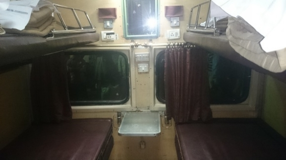

| 魔法使いと行く海外旅行: 南アジア編 | |
| ユウキ | |
| (2017) | |
目次
インド
プロローグ
「ユウキ、あそこ見ろ。チャイだ！ チャイ売ってるぞ！」
そう言うや否や、メテムは僕の腕を勢い良く引っ張り、屋台へと向かった。
「お、本当だ。これが本場のチャイかあ。しかし凄い作りだねえ」
目の前にある屋台は、確かにインドのスパイシーな紅茶、チャイを売っているようだ。しかしその店構えは、僕らが想像するそれとは随分違う。屋台のおじさんの前には大きな大釜と小さな鍋が置いてあった。大釜には牛乳が大量に入っていて常に火がかかっている状態だ。そして小さな鍋にも牛乳が少量入っている。
どうやって使うのかなと思っていたら、メテムが待ちきれないようにおじさんに話しかけた。
「おじさーん、チャイでしょ、これ。一杯幾ら？」
「ん？ お嬢ちゃん、これは一杯十ルピー（二十円）だよ」
「十ルピー！ 買う！ 買う！ 二杯頂戴！」
目の前であっという間に交渉が成立した。二杯と言うのは言うまでもなく僕のだろう。こんな小汚いところで飲んでお腹でも壊さないかな......。
色々と心配している僕を尻目に、おじさんは大釜に入っている牛乳を小さな鍋に少し移し替えた。それから手元にある茶葉を無造作に掴み、同じく小さな鍋に入れる。
なるほど、ああやって作るのか。一応煮沸してる様だしこれならば問題無い......かな？
そうこうしているうちに完全に煮え立ったようで、おじさんは器用に茶こしを使ってコップに移し、それを僕たちに手渡した。
「うーん、スパイシーで良い香り～」
メテムが鼻を近づけて幸せそうに呟く。確かにそのチャイは日本ではあまり触れることのない香辛料の香りがする。
ここにきてようやく僕は、日本から遠く離れた地、インドは首都デリーに辿り着いた事を実感した。
僕の名前はユウキ。日本で気ままに暮らしている普通の若者なんだけれど、今回とある地を探す為に旅に出ることになった。
で、隣でチャイの匂いを嗅いでいる女の子がメテム。僕のパートナー。小柄な体格だが元気一杯で、赤いショートヘアーの髪の毛がいつも動いている。目は大きくクリクリしていて、鼻は高く、白い肌は透き通るぐらい綺麗だ。黙って立っている限りにおいては、外国人のモデルのように可愛い。年齢は......幾つかな。しっかりと聞いたことはないけれど、見た目的には十六歳とか十七歳の気がする。そんなメテムのトレードマークはいつも後生大事に持っている白い面妖なマスク。何より大切な代物のようで、腰に引っ掛けるなり手に持つなりして、片時も放すことがない。ただ実際に被るところは僕も数度しか見たことがない。本人曰くどうしても気合を入れないといけない時にだけ被るそうだ。
そしてメテムを語る上で大切な事がある。まず彼女は日本人ではない。それどころか地球人と評するのも微妙なところだ。更に彼女にはとっておきの秘密があって、それは実は......。
「おまえ、何渋い顔してるんだよ」
「痛っ」
突然頬をつねられ思わず驚きの声をあげてしまった。
「チャイ、それ飲まないの？」
チャイ？ ああ、忘れてた。僕は今チャイ屋にいるんだ。
「あ、うん、今飲む飲む」
その刺激的な匂いのする液体を僕は口に含んだ。途端に口中に広がる甘い味わい。
「うわ、これ甘くて美味しい！」
「だろー、これ旨いよなあ。こんなのが十ルピーだなんて、毎日通っちゃうよなー」
「うんうん、メテム、これ毎日来ようよ。どうせホテルへの道中だし」
オーバーではなくそれだけこのチャイは美味しかった。砂糖がたっぷり入ってるようでとにかく甘い。往路のフライトの疲れを取るにはこれぐらいがちょうど良い感じだ。じっくりと味わってたらまたしてもメテムの指が僕の頬をつまむ。
「ちょっと、痛いな。何よ、一体」
「なんかさ、食べ物持ってない？ ハムとかチーズとか」
「え？ ちょっと今インドに着いたばかりだよ。そんなの持ってるわけないじゃん」
「むー、お腹空いたなあ」
そういうとメテムはお腹をさすった。なんとか食べ物を探したが流石にチャイ屋では手に入らなそうだ。
さて、どうしよう。
僕が困っていたところ、メテムが呟いた。
「よし、背に腹は代えられん。いっちょ作るか」
そう言うとメテムはゴソゴソとカバンから一冊の本を取り出す。
「ちょ、ちょ、ちょっとまって。メテム、ここじゃやめて！」
僕が慌てて制止しようとするも、メテムはお構いなしに本を開いて呟いた。
「ハム、でろよ、ハム、ハム。......それでは......モニョモニョ......クリエイトフード！！！」
そうメテムが唱えると、メテムの眼前に強い光が一瞬だけ生まれ、すぐに収束していった。そしてその空間からは、一つの大きなハムの塊が飛び出て、メテムの膝の上に落ちた。
「やったー！ 見ろ、一発でハムが出たぞ！ ひゃっはー！」
「......はあ」
そう、これが先程言いかけた事。メテムは実は......魔法使いなんだ。手に持った呪文書と、カバンにいれた秘薬を使って魔法を使うことができる。どこで生まれ育ったのかは知らないけれど、そんなどこにでもいない普通じゃない女の子。それが僕のメテムだ。
メテムとの出会いは数ヶ月ほど前に遡る。忘れもしない、ちょうど長い冬が終わり少しずつ春の顔が見えかけていた頃だ。
その日の僕はゆっくりと昼前まで眠った後、ブランチがてらに近場のタリーズでシュガードーナツとコーヒーをとっていた。生憎天気が雨だったので、天井のあるテラスに座り、路行く人を眺めていたのを覚えている。
さて、今日は一日何しようか。
そんな事を考えていると、気づくと、メテムが隣にいた。いつ近づいてきたのかすら分からない。形容するのも難しいのだが、本当に気づくとそこにいたのだ。中腰になって僕の顔の近くまで視点を下ろし、その澄んだ目でじっと僕を見つめていた。その表情からは特に感情というものを見つけることが出来ず、かといって無表情で冷たいという感じではなかった。何かを深く考えている、何かを強く探している、そんなとてもミステリアスな表情をしていたのだ。表情だけでなく、格好もユニークなものだった。上半身は白いブラジャーのようなものだけを身につけ、下は黒い革のスカートを履いていた。手には黒い革の手袋をはめて、足元は黒いサンダルだ。これだけでも十分奇妙なのに、手に大きな茶色の本を持ち、極めつけに腰に変わった白いマスクをぶら下げていた。
どこの国の人だろう。
不思議に思ったのだけれどとっさに言葉が出てこなかった。そうしていると、メテムは僕に話しかけるでもなくその右手を僕の頭に向けて差し出した。それからその手がちょこんと額に触れる。
「な、何かな？」
この時になってようやく言葉が出たのだが、それに対しての返答は無かった。その代わりにメテムは手に持った本を胸にかかえるような仕草をして、ブツブツと小さな声で何かを呟いた。
「あっ」
思わず声が出る。額に触れていたメテムの手が内側から光を発し始めたのだ。その光りは徐々に強くなっていき、そして僕の頭まで広がっていった。その光に包まれた時、僕は妙な安らぎと、そして同時に運命めいた何か興奮に近いような感覚があった。表現は難しいのだが、簡単に言うと心に惹かれるものがあったのだ。その状態がどれぐらい続いたのか、実際は数秒なのだろうが、僕の頭のなかの感覚では数分ぐらい長く感じられた。徐々に頭の光が去っていき、メテムの手に収束していった。
「ふぅ～」
ここでようやくメテムが一息をついた。それから先程のミステリアスな表情が一変し、顔全体を使って笑顔になった。
「ようやっと見つけたよ」
「え？ 見つけた？ 何が？」
僕は思わず聞き返した。しかしメテムはその問いにはすぐには答えなかった。
「いやー、長かった長かった。結構簡単に考えてたんだけど、この世界結構広いんだよなあ。あー疲れた」
そういうと僕の対面の椅子に座った。
「えーと......君は一体どなたかな？」
「ん、ああ、私はメテム。ちょっとした用があって来たんだよ、この世界に」
世界？ 日本ということだろうか。しかし妙な表現だ。
「まあさ、それについては追々話すよ。ところで名前はなんていうの？ 何て呼べばいいの？」
「僕？ 僕は......ユウキだよ。皆もそう呼んでる」
「ユウキ。そうか、ユウキって呼ぶのか。んじゃユウキ、早速で悪いんだけど、コーヒー買ってきてもらえない？ ホットで。あと甘いものでもあれば嬉しいなあ」
「え、コーヒー？ というか君は本当に誰？」
「いいからいいから。疲れたから一息いれさせてよ。あとでちゃんと話すから。とにかく疲れて疲れて」
そう言うとメテムは椅子に腰を浅めに座り直し横たわるような姿勢をとった。どうやらもう僕にはコーヒーを買うという選択肢しかないようだ。
コーヒーとクッキーを買ってくると、メテムは嬉しそうにゆっくりと口に入れた。
「......ズズ......やっぱ疲れた時はさ......ズズ......コーヒーと甘いものに......ポリポリ......限るね......」
「う、うん、気持ちは分かる」
「......ズズ......それでさ......ズズ......君に会いに来たわけなんだけど......ズズ......実は結構深い話なのよ......ポリポリ......」
「メ、メテム。メテム」
「ん？」
「話は食べてからでいいよ。今日は特に予定ないし、ゆっくりで問題ないからさ」
「そう？ んじゃもうちょっと待ってもらえる？」
そういうとメテムは本当に時間をかけてコーヒーとクッキーを腹に収めた。その姿はまるで何かの餌を探し、ようやく見つけて食べている小動物のようだった。
「ふぅ～、おまたせ」
食べ終わって満足したのか、一息つきながらメテムが口を開いた。
「ユウキ、どこまで話したっけ」
「どこまでって何も話してないよ」
「そうだっけ。ええと、んじゃそうだね。私はメテム。なんでこの世界に来たのかっていうとだね、私は自分の片割れと、そして自分の場所を探しにきたのよ」
「？」
「ああ、分からないか。なんていうかな、私のもといた世界でさ、私は常に心の半分がどこかにある気がしてたのよ。そしていつの日かそれを見つけなければならないなって思ってたの。これはもう物心ついた時から心に抱えていた思いでさ。自分の片割れを探す事。そして同時にどこかに自分だけの場所が存在していることも気づいてたの。どこかは分からない。けれどどこかに自分がいくためだけにある場所がある、それだけは分かるって。で、悶々としてたんだけど、ようやっと探す旅にでかけたってわけ」
「......」
「ああん、分からないかな。まあとにかく自分だけの片割れと場所を探してるってわけ。分かる？」
「う、うーん、分かるような分からないような。分かるといえば分かるけど、それを納得して受け入れてるかというとそうでもない、かな？」
「まあ今はそれでいいよ。で、この片割れと場所を探す旅に出たんだけど、これがまた大変でさ、世界中どこを探しても見つかる気がしないのよ。感覚が言ってるの。この近くにはいないって。でさ、ジャングルの街だの騎士の街だの散々歩きまわり、氷で出来たダンジョンから闇に支配されてるダンジョンまで探した時にやっと確信したのよ。今の世界にはいないって。それからまた苦労して苦労してこの世界を見つけ出し、これまた苦労して苦労してやってきたってわけ」
「騎士の街？ ダンジョン？」
「うんうん、で、この世界に来た時に、すぐに私の魔力が反応したの。ここに片割れがいるって。それから後は結構簡単。魔力に導かれながら日本へ来て、今こうやって君を見つけたってわけ」
「なるほど」
「そう、分かった？」
「なるほど、分からん」
「ズコーッ」
「全く理解し難いのだけれど、でも先程君が見せた光りで、何となく言いたいことは分かる」
「お、そう？」
「うん。君が長い間探し求めていたパートナーは、つまり僕なんだね？」
「うん、ユウキ。君だよ。君が私の片割れ。これだけは間違いない」
そう言うとメテムはまたその澄んだ目に力を込め、僕をまっすぐ見つめた。今度は僕も臆すること無く向かい合う。
「......正直、突拍子もないことだから頭では理解が追いついてない部分はある。でも感覚ではすでに完全に受け入れてるんだ」
「良かった」
「それで、君は自分だけの場所を探しているんだね？」
「うんうん」
「そこに僕ら二人で向かわないといけない」
「そうそう」
「よし、分かったよメテム。ちょうど暇をしていたところだ。旅行自体は僕も好きだし、この世界のどこかにある僕らの街へ旅立とうじゃないの」
「お、そりゃ話が早くて分かりやすいね。どう説得しようか悩んでたとこなの」
「いやメテム、君説得するつもりあんまなかったでしょ。もう結構最初の段階で無理やり納得させようとしてなかった？」
「あはは、分かる？」
そう言うとメテムはキシシと笑った。
「よし、それじゃ具体的に僕はどうしたらいいかな。旅に出るってのは分かるけど、大体の場所は掴んでるの？」
「それがさっぱり。ユウキは見つけられたんだけど、どこに向かうのかは皆目つかない。多分この世界にあるんだろうけど、もしかしたら場所は場所で違う世界にあるかもしれないし......」
「そか、その違う世界ってのがいまいち分からないんだけど......」
「ああ、違う世界ってのはね、私がもともといた世界ってのは......」
「あ、いやいや、説明は今はいいよ。言われても分からないと思うし。まあんじゃ片っ端から世界を回ろう。なに、いつか見つかるよ。君のいうこの世界に無かったとしても、他の世界を旅するんでもいいし。それはそれで楽しそうだ」
「うんうん、世界中歩いたら見つかるよ」
「だね、んじゃ手始めはどこかな......。旅人が最後に集まる場所、人生を見つける場所と呼ばれるインドとかどうだろ？」
「インド？ ああ、聞いたことあるな。人が多いとこだっけ」
「うん、カレーも美味しいし、タージ・マハルもあるし。何より聖なるガンジス川があるよ」
「いいね。よし、んじゃそこから行こう！」
そう言うと僕たちは立ち上がり、二人でしっかりと手を握りしめて、旅へ向けて動き出した。お互い心の片割れをもう二度と離さないように。
この物語は、インドのデリーから始まる。一人のやんちゃな魔法使いと共に。
カレー
インド料理と言ったら、殆どの人がカレーを思い浮かべるんじゃないか。ご多分に漏れず僕たちもこの数日ほとんどカレーばかりを食べていた。食事をするところならば例外なくカレーがあり（むしろ場合によってはカレーしか無い）、例えば路地裏にある汚い屋台でも食べることが出来る。衛生面では問題はあるが、味は結構美味しくて、カレーとナンがついて七十ルピー程だ。これが小綺麗な所で食べると五百ルピーと値段が跳ね上がる。その分座り心地の良い椅子にトイレやらワイファイやらが完備しているのだけれど。
カレーの種類も本場だけあって豊富だ。キーマやチキンなどの定番ものから、ココナッツ海老カレーやら羊肉のカレーなど様々だ。僕のお気に入りはバターチキンと、ほうれん草のカレー・パラクパニールだ。バターチキンは日本で食べるものさながら甘くまろやかだ。ご飯と合わせると何回食べても飽きが来ない。パラクパニールは日本で食べるよりも若干ほうれん草のテイストが強い気がする。まあでも店それぞれによるので、どこかには日本の味のものもあるのだろう。そういうわけで今日も今日とてカレーを食べている。
ここはホテルに併設されたカフェ。目の前に置かれたカレーは、大好きなバターチキンだ。これにライスとデザートと飲み物がついている。
カンッカンッカンッ
目の前でスプーンを持ったメテムが机を叩く。
「どうしたの、メテム」
「ん？ お腹が空いたんだけど私のマトンカレーが来ないから憤ってる表現」
「んもう子供じゃないんだから......」
そんなやり取りをしながら、流石に僕だけカレーを食べるわけにもいかず、メテムのマトンカレーが来るのを待った。
程なくして良い匂いと共にようやくマトンカレーが届いた。
「んーん、この香りがたまらんね」
鼻を近づけ満足そうに呟くメテム。
「さあ、冷めないうちに食べよう食べよう」
そう言いながらメテムはスプーンをもって僕が食べる前にカレーを頬張った。
「しかしだね、これはなにかね」
カレーを口にいれながらメテムが呟く。
「どうしたの？」
「いやね、私たちはほらスプーン使って食べてるだろ？」
「そりゃそうだよ。流石に箸使って食べるわけ無いじゃん？」
「そんなくだらないこと言ってるんじゃなくてね、ユウキ、ここはインドだよ、インド」
「う、うん、分かるよ？」
「となると、どうやって食べるのが正解なのか分かるだろ？」
「え、正解って......」
嫌な予感がしたのと、メテムがスプーンを机に置いたのは同時だった。
「ま、まって、メテム！」
僕が止めるのも時すでに遅し。メテムは手を使って米をむんずと掴み、手を丸ごとカレーにつけた。
「あっつ――――！」
小さなカフェ全体にメテムの声が響く。そして机からこぼれ落ちるカレー......。
一瞬の間を置いて、何とも言えない表情でメテムが呟く。
「カ、カレーって、素手で掴むとかなり熱い......」
カフェを逃げるようにして出た僕たちはその足で併設されているホテルの部屋へと戻った。今回泊まったホテル・ブルーム・ルームスは大当たりの部類と言える。オールド・デリーの駅から歩いて数分でたどり着くことができるし、何より驚嘆すべきはその外装・内装だ。まるで北欧のフィンランド辺りにあるようなモダンな作りで、白をベースに黄を差し色とした色調はとてもインドとは思えない。中庭ではミネラルウォーターが飲み放題だし、机や椅子もリラックスできる。部屋も綺麗で、ワイファイのシグナルも強く、エアコンも完備している。拠点にするには申し分ないホテルだ。
カフェから戻った僕たちは、ベッドに腰を落とした。
「メテム、大丈夫？」
一応気になって声をかける。
「ん、大丈夫じゃない。熱いから手がヒリヒリしてる」
見てみると、手が若干赤みを帯びている。というかどれだけカレーに手を突っ込んだらああなるのだろうか。目の前で見ているにも関わらず、不思議でしょうがない。
「氷でもフロントでもらってこようか？」
「いや、いいよ。魔法で治す......」
と、そう言うやいなやメテムは魔法書を手に持ち何やら呟いた。
「......モニョモニョ......ヒール」
途端にメテムの右手が光に包まれる。時間にして数秒程度だろう。柔らかな光が消えていくと、赤くなっていた手は普段通りに戻っていた。
「便利だね、魔法」
「んっ」
「でも、ああいう無茶はしないでね」
「んっ」
軽く頷く。
その日はいつになくしおらしいメテムだった......。
タージ・マハール
目の前には、まるで狩りの時の獲物を狙うような目をしたメテムが座っている。視線の先は僕が手にしているお弁当。中身はコロッケ。そしてメテムの手元のお弁当はグリーンピースが山盛り。
......はぁ、僕もグリーンピースは苦手なんだけどなあ。
思わず深い溜息をついた。
その日の僕たちの予定は、タージ・マハールを見ることだった。インド最大の見どころの一つ。ここに行かなければインドに来た意味が無いともされるこの建物は、旅行者とっては最高の観光地だ。
行き方を調べてみるとオールド・デリーの駅からタージ・マハールのあるアーグラー駅へは列車が出ているようだ。朝一で行ったほうが良いみたいなことが書かれてたので、朝に弱い僕たち二人が頑張って朝五時に駅へ向かった。チケットを一人五百ルピーで買う。ちょっとお高いように思えるが、ファーストクラスを指定したのでこんなもんだろう。早朝のホームは空いてると思いきや、結構な人がすでに列車の待機をしていた。観光客っぽいのはあまりいなかったので、インドの人はよっぽど早起きなんだろうか。
程なくして列車が到着。車内に入ってみると、中はとても綺麗で、日本の新幹線のような感じだ。エアコンがあり、そしてコンセントもあるという至れり尽くせりの作り。しかもボックスシートだったので尚更雰囲気も出る。メテムも気に入ったのか、早速窓際の席に座りこんだ（ちなみに窓際は僕の番号だ）。
列車が動く。しばらくはデリーの街並みが流れたが、程なくするともう家があまりなく、まさにインドの田舎と思われるような光景が広がった。牛が座り込み、荒地がすぎる。風景を楽しんでいると車掌が現れてチケットの確認をしてきた。僕は二枚手渡す。すると車掌が僕に問いかける。
「朝食が出るけど、ノンベジとベジ、どっちがいい？」
僕はどちらにしようか悩んでいたのだけれど、メテムは考えるまでもなく声を出した。
「私ノンベジ！」
とても元気の良い声に車掌が驚きながら笑みを向けた。僕はと言うと、本当ならノンベジが良かったのだけれど、どうせなら違う方を頼んでみるかと、ベジの方を頼んだ。思えばこれが失敗だった......。
車掌が帰った後すぐに給仕が来て、僕たちに机を出すように言った。机を広げるとそこに小さなポットを一人一個配り、カップとクッキーを置いた。
「ユウキ。何だか結構豪華だね。一人ずつポットまで配るとこなんて見たこと無いよ」
「そうだねえ、しかも中身はチャイっぽいよ」
「え、まじまじ？」
そう言うとメテムは蓋を外した。
「うわー、本当だ。チャイだこれ。やったー！」
すっかりチャイ贔屓になったメテムはご機嫌の様だ。思わず僕も笑みが浮かんだ。茶菓子についていたクッキーはシナモンの味が強い。チャイと合わせると不思議にマッチしていた。メテムを見ると、クッキーをチャイに浸しながら食べていた。
「そんなことして美味しいの？」
「ん？ シナモンとチャイが合わさって結構いけるよ」
試しに浸してみたけれど、あまり美味しくなかった......。メテムはたまに不思議な食べ方をする。
お腹の準備が整ってきたところで、給仕が来て弁当を配り始めた。メテムはノンベジ、僕はベジ。そう給仕に改めて伝えたら、それぞれにアルミホイルで蓋をされた弁当と、パンが手渡された。お腹が空いていたので早速食べようと蓋をあけたところ......。
僕の弁当は美味しそうなコロッケと付け合せのパスタがあり、メテムの弁当は箱一杯にグリーンピースがつめられていただけだった......。
ここで冒頭に戻るわけ。
「ユウキ......」
メテムがもう明らかに文句がある風に話しかける。目は口ほどにものを言い、とあるが、今回の場合、目は口以上にものを言い、が正しい。
「いや、メテム、ほら、僕さ、グリーンピース、苦手じゃない？」
無駄だとは分かっていても、虚しい抵抗をしてみる。
「ユウキ、あのね、私がノンベジで、おまえはベジを頼んだろ？」
「......はい」
「それなのに、どうして私がグリーンピースで、おまえがコロッケなわけ？ どう考えても逆じゃない？」
「......で、でも、僕ほら、グリーンピースは......」
「逆じゃない？」
「はい......」
やはり抵抗しても無駄なようだ。
「というか、なにこれ。なんでコロッケ弁当にはパスタがついてて、こっちはグリーンピースだけがぎっしり詰まってるわけ？ 鳩じゃあるまいし豆なんてそんなに食べないっての。下にあるのはこれ、オムレツ？ うわ、オムレツの中身もグリーンピースだらけだわ......」
文句をブツブツ言いながらメテムは僕にグリーンピース弁当を渡した。そして僕から奪いとったコロッケ弁当を開けると、器用にコロッケだけを取り出しパンの上に乗せた。即席のコロッケパンは、僕の目にはとても美味しそうに見えた......。
グリーンピースを何とか処理し、二時間ほど経った頃だろうか。アーグラーの駅に到着するアナウンスが流れた。外を見ると、なるほど、田舎の風景からちょっとした街並みに切り替わっている。僕たちは荷物を抱えて外に出た。
アーグラーの駅に着いてまずやったことは、帰りのチケットを手配することだった。ネットを見る限り、帰りの便が売り切れになることが多いとのことだったので、すぐにチケットセンターに駆け込む。チケットセンターは、アーグラーの駅を背にして右側に向かった所にあった。ちょっと分かりにくいのだけれど、確かにチケットセンターと書いてある。中に入って早速聞いてみると、まだチケットは残っているようだ。
そうだよな、朝七時過ぎに無くなるわけないよな。
ホッと一息ついて僕たちは二枚チケットを買った。行き同様ファーストクラスで一人五百五十ルピー。あのクオリティの列車なら問題ない。帰りは楽そうだ。
チケットを抑えて安心した僕たちは、タージ・マハールへ向かうことにした。バスでもあれば便利そうなんだが、その前にタクシーの運転手が話しかけてきたのでちょっと値段を聞いてみる。すると片道百ルピーでタージ・マハールまで送ってくれるようなので、僕たちはタクシーで向かうことにした。駅からタージ・マハールまでは五キロほど。タクシーに揺られているとすぐに着いた。
入り口でチケットを七百五十ルピーで買って中に入ると、すぐに前方にタージ・マハールが見えてくる。
「おぉー、これは凄いなあ」
メテムが驚嘆した様に呟く。確かに気持ちは分かる。タージ・マハールへと続く道と水辺が綺麗にシンメトリーに並んでおり、その先に浮かぶタージ・マハールは神秘的だ。
「なんというかさ、これ、あれっぽいね」
メテムがタージ・マハールを見て呟く。
「あれ？」
「いやあの屋根の部分、ほらマカロンみたいな洋菓子であるじゃん？ 柔らかいパフパフっとした感じ」
「あー、言いたいこと何となく分かる。あの先がねじれてて甘いやつね」
「そそ、それに似てる！」
「って、そんなこと言ったら中東のモスクとか全部そうだよ」
「あはは、それもそうか。しかし美味しそうだ」
「美味しそうって、タージ・マハールを見て口に出す言葉じゃないような......」
戯れながら僕たちは進む。
それから途中途中で写真を撮っていると、程なくしてカメラマンが近づいてきた。
「写真、私で良かったら撮りますよ」
「メテム、どうする？」
「うーん、流石にこの大賑わいの中カメラもって逃げられることは無いかな。いざとなれば私の魔法で追いかければいいし」
そんなやり取りをしているとカメラマンは少し苦笑をしたようだ。
「安心してください。私はタージ・マハールでカメラを取るサービスをしているのです。勿論値段は無料ですし、身分証もありますよ」
身分証を見せるカメラマン。
「え、そうなの？ それはいいね。んじゃユウキ、二人で撮ってもらおう」
......なかなか現金な話だ。そうと決まるとメテムは僕の腕に絡んでタージ・マハールを背景にした。カメラマンのほうも、もうお手の物なのか、色々話しかける。
「お嬢さん、ポーズいいですね。次は椅子の上に立って。そうそう、で後ろから彼氏さんの首に手を回してくださいね」
メテムもすっかりノリノリになって、最後は定番なのか、タージ・マハールをつまんでいるようなトリックポーズまでしてた。まあ良い写真が撮れたのなら良いけれど。カメラマンにお礼を言って（チップを渡した）、僕たちはいよいよタージ・マハールへと向かった。
タージ・マハールは所謂墓廟だ。昔々当時の王が死んだ妃の為に建てたんだとか。本来なら白いタージ・マハールの反対側に自分用の黒い墓廟を建てるつもりだったんだけど、財政難に陥り、計画は無かったことになったようだ。その後王は王位を追われ幽閉された様だが、幽閉先でタージ・マハールが見れたのかどうかは分からない。見れていたのなら妃との思い出に浸りながら暮らせるので、せめてもの救いだったのではないだろうか。
そんな歴史を思いながら建物へ向かっていると、警備員が皆に何かを配っていた。
「メテム、あれ何かな？」
「さぁ～、しかしまあ貰えるものは病気以外ならなんでも貰うを信条にしている身としては、とりあえずもらっておこうかな」
「何その信条......」
そう言いながら近づくと、袋のようだった。何やらここは土足厳禁だから靴にカバーをつけろ、とのこと。なるほど、墓廟だから敬意を払えってことか。しかもこれなら物理的にも汚さないでも済むし。感心しながら僕たちはカバーをして中へ入っていった。
タージ・マハール、写真から外見を見ることは何度となくあったけれど、その内部まで見ることは今まで無かった。どんなものかと思っていたのだけれど、どうもあまり大きい作りではないようだ。中央に棺を収めた部屋があり、四方にそれぞれ囲むように小部屋がある。
肝心の棺は仕切りで区切られていたが、幸いな事に写真は撮っても良さそうだった。おそらくあれが王の愛した妃の棺なのだろう。死後まで大衆の前に出されるのが果たして本人にとって良いことなのかは定かでは無いけれど、まあ愛した証をここまで残されるのならば悪い気はしないはずだ。棺をぐるっと回って、四方の部屋を覗くと、そこはもう何も置かれていない。そして一周をするともうタージ・マハールの中は終了だ。時間にして五分も経っていないぐらい。
なるほど、これは確かに外見だけが話題になるのも分かる気がする。要は、中はあまり見どころがないってわけか。
ちょっと拍子抜けしながら隣を見てみると、メテムがいない。どこかな、とキョロキョロしてたら、日陰にある外壁にもたれかかっていた。手には小さな石をもって、今まさに僕に投げようとしているところのようだ。危ない危ない。
「メテム、そんな石もって何してんのさ」
「ん、おまえが気づかないから投げつけようかなと思って」
「ちょ、やめてよ。それ結構な大きさじゃないの」
「キシシ」
そう笑うとメテムは壁を手でさすり、顔を半分つけるようにした。近くで見てみると、タージ・マハールの外壁には立派なレリーフがあるのが分かる。白い壁に白いレリーフなので遠目では気づかなかったが、こうしてみて見ると、どれも規則正しく並んでおり美しい。メテムが見つけなければ分からなかったかもしれない。僕もメテムの隣に立ち、壁に頭をつけた。
「おい、ユウキ」
「ん？ 何メテム」
「おまえもさ、私が死んだら、これぐらいの物作ってくれるんだろうな？」
「え？ これぐらいって......まさかタージ・マハールの事？」
「あったりまえだろ～。メテムここに眠る、みたいなの、作ってくれるよな？」
「えー、流石にそれは無理かと......」
「むきー、おまえの愛はその程度の物なのか！」
「いやいや......」
そんなやり取りをしながら僕たちはしばらく休んだ。目を閉じてタージ・マハールに身を委ねてると、その巨大さに包みこまれる感じがして安心できる。それは本質的に墓廟という存在が安心させるのか、あるいはインドという異国の地でひと時の安らぎに浸っているからだろうか。僕には分からなかった。
どれ位休んだろう。気づくと僕の頬にメテムの手があった。少し小さく、そしてひんやりとする手が当たる。
「あれ、僕寝てた？」
「どうかな。まあ気持ちよさそうにしてたから覗きこんでただけだよ」
そう言いながら、僕の頬を、まるで子供をあやすようにしてさすった。
「そうそう、メテム」
「ん？」
「この場所、何か感じた？」
「ああ、ここが目的地かってこと？」
「うん、僕たちの場所かな？ まあ少なくとも僕はそうは感じないけど」
「そうだね、残念ながらここでは無いと思う。ここは私たちの場所じゃなくて、王と王妃の場所だね」
「まあそれもそうか、墓廟だしね」
「うんうん、まあゆっくり探そう」
それからメテムは壁を押しのけるようにして体を起こした。
「よし、そんじゃーユウキ、そろそろ行こう」
元気よく叫ぶと、僕の手を取り出口へと向かった。出口で最後二人で振り返り、おそらく人生でもう来ることが無いであろうタージ・マハールを目に焼き付けた。
タージ・マハールを出ると、列車の時間まで僕たちの予定は特に無かった。少し街をぶらついていると、程よくお腹が空いてきたので、レストランにでも行くことにした。が、行けども行けどもレストランが見つからない。
「おっかしいなあ、ここらへんにレストランがあるって地図に書いてるんだけど」
そう弁明しながら（勿論メテムにだ）進んでいると、メテムが声を上げた。
「ユウキ、あそこだ。あそこで食べよう」
メテムが指し示す先を見てみると、そこはなんとハエが大量に飛び交うゴミ捨て場があった。
「......メテム、どんなに落ちぶれても残飯を漁るのはどうかと思うよ？」
そう言った途端、メテムの鋭いケリが僕を見舞った。
い、痛い......。
「おまえね、私が残飯なんて食うと思うか？ 違うっての。その隣。隣をよく見ろよ。レストランあるぞ」
釣られて隣を見る。確かにゴミ捨て場の横に椅子が幾つか捨てられているが、しかしレストランどころか建物一つ見つからない。
「あれだよ、あれ」
何度言われても見当たらない。しかしメテムは自信満々に歩き出した。もしや魔法使いにしか見えない秘密のレストランがインドにはあるのか。半ば本気で思いながらメテムについていったところ、メテムはなんとゴミ捨て場に捨てられた椅子に座りだした。
「メ、メ、メテム。そ、そこはちょっと違うんじゃ......」
あまりのことに動揺している僕を尻目にメテムはそばに立っていた若いインド人に向かって手を上げた。
「メニューある？」
するとインド人は当然のごとく言い放った。
「メニューなんて無いよ」
そりゃそうだ。ここはゴミ捨て場だ。メテム、ついに頭がおかしくなったか。
そう思って場を離れようとしたところ、インド人は驚くべきセリフを続けた。
「ビリヤニは六十ルピー。カレーは卵とチキンがあってそれぞれ百二十ルピー。他は無い」
え？ あんた何言ってんだ？ カレー？
メテムに合わせて冗談を言ってるのか、あるいは本当に魔法で異世界に連れて行かれたのかと思ったのだが、そんな僕を尻目にメテムは会話を続けた。
「え？ ビリヤニあるの？ うわ、食べてみたかったんだ。んじゃそれ頂戴。二人分ね！ あと水も二本つけてもらえる？」
そう言うと、インド人（いや給仕か）はゴミ捨て場の裏側に回っていった......。
「ユウキ、何ぼっと突っ立ってんだよ。座りなよ。暑いだろ」
「う、うん......。いや正直衝撃が凄くて......。ここ、レストランなの？」
「そうだってさっきから言ってるだろ。見ろ、ちゃんと食べ物の絵が描いてるじゃないか」
そう言われてみてみると、確かにゴミ捨て場の横にコーラの文字とカレーの絵が描いてある。しかしそれがあってもここ見てレストランとは思えないよな。正直タージ・マハールよりも衝撃を受けたかもしれない......。
ショックでボンヤリしていると、ほどなくしてビリヤニが運ばれてきた。銀のプレートに盛られて、付け合せ等は一切無し。それでもビリヤニ自体が随分山盛りなので、これで六十ルピーは格安だ。
しかし難点がある。それはハエと汚臭だ。そう、ここは忘れてはならないゴミ捨て場横のレストラン。汚臭もさることながらハエがすごい数近寄ってくるのだ。メテムは気にしないのかなと思って見てみると、ビリヤニが美味しいのか、手でハエを払いのけながら器用に食べていた。僕には出来そうにない芸当だ。
「ん？ ユウキ、食べないの？ これカレー味がついてめちゃ美味しいんだけど」
「いやさ、ほら、ハエが凄くて匂いもするしちょっと食べづらいというか......」
「そう？」
「うん、僕にはちょっと厳しいかな～なんて......」
「ふーん、変なことを気にするなあ」
「メテム、魔法で何とかならない？」
「おまえ、普段魔法あんま使うなって言ってくるだろ」
ぎく。
確かに僕はあまり外ではメテムに魔法を使ってもらいたくない。言わずとも分かるだろうが単純に目立ちすぎるからだ。いきなりチーズだのハムだのが出てきたら皆驚くだろう。それどころか、馬を召喚したり、炎の塊が飛び出てきたら、一騒動だ。なので普段は出来る限り魔法無しでの生活を心がけている。しかし今回は......。
「メテム、今なら誰も見てないし、なんとかしてよ」
「んっんー、もうしょうがないなあ」
そう答えるとメテムはカバンから魔法書を取り出した。大量のハエをどうやって処分するのか。まさか周りじゅうのハエを無作為に殺すのかな。それならビリヤニに死骸が入らなければ良いけど。そう訝しってると、メテムは空中に手で大きな円を描き、そして叫んだ。
「......モニョモニョ......セーフティー」
メテムの呪文が終わったようだ。今回は派手に火花が飛び散るとかはなかったのだけれど、成功したことは僕にもすぐ分かった。途端に辺りの空気が変わったからだ。ゴミ捨て場からくる汚臭が一切無くなり、代わりに澄んだ空気が広がる。そしてあれだけいたハエが消えているのにも気づく。
「凄いね......」
「あんまり外出るなよ。少しの範囲でしかかけてないからさ」
そう言われて辺りを見渡すと確かに僕らのいる空間から少し離れたところはハエが飛んでいる。おそらく汚臭もしているのだろう。でも二人で食べる分には十分なスペースだった。
「ありがとう」
「ん、いいよ。それより早く食べなよ。美味しいよ」
そう言われて初めてビリヤニを口にした。
「おっ、確かにこれはいける」
「だろ、カレー味旨いよな」
「うんうん、何にでもカレー味がするのはあれだけど、それでもこれは米の使い方がマッチしていて美味しいね」
そう、アジアを巡ると気づくのだけれど、日本の米と比べて東南アジアや南アジアの米は水気が少ない分パラパラしている。勿論日本の米のように粘っこさはないので、日本人にとって賛否両論だけれども、例えばフライドライス的なものならば間違いなくアジアの米の方が向いてると思う。しかも原材料のお米が安く流通していることもあって、旅の間中、良く目にし、美味しく食べられる料理の最たるものだ。今回のビリヤニも、調理法的には蒸す形になるが、やはりパラパラしていて舌触りが良い。味付けに利用されたスパイス各種も適度に口を刺激する。さらに隠し味のガーリックがまた美味しい。この味は男ならば誰しもが好むのではないだろうか。たまにあるチキンも同様で、カレー味がついているので、一緒に食べるとスプーンが進むこと進むこと。もともとお腹が空いていた上に、周りの空間が快適になったとあって、あっという間に食べきってしまった。
「ふう～、美味しかった」
そう一息ついて、僕は半分壊れかかった椅子の背にもたれかかった。
「な、こういうところの食べ物だって捨てたもんじゃないだろ？」
メテムが誇らしげに言う。
「そうだね、と言うかカレー味ならなんでも美味しい！」
「なんだそりゃ。現金な奴だな」
そんな事をやり取りしながら僕らはひと時の休息を楽しんだ。
レストランを出た後は、早めにアーグラー駅へと戻ることにした。近くにあったリキシャー（後ろにかごが付いたオートバイ）で向かい、後はカフェで時間を潰した。それから定刻通り列車でデリー駅へ戻り（勿論帰りは二人共ノンベジを頼んだ）、一日を終えたのだった。
コンノートプレイス
最悪だ......。
僕は思わず天を仰いだ。正直インドに来る前、沢山の人から様々な忠告を受けたが、僕は大丈夫だと思っていた。海外渡航経験は十分あるし、何よりメテムという頼れるパートナーもいる。多少のトラブルぐらいはものともしないだろう。そう思っていた。しかし、現実に今僕は絶望している。ここまでのトラブルに合うとはとても考えていなかった。本当にまさかここまでの......。
隣でケタケタと笑うメテムを横目に、僕はなすすべもなく立ち尽くしていた。
今日は一日デリーの中心街、コンノートプレイスを見学する予定だった。天気もよく朝からでかけた僕らは、まず朝食にカフェでほうれん草とコーンのチーズパニーニ（九十ルピー）を食べた。インドといってもカレーばかりではなく、植民地時代の名残で洋食も豊富で美味しい。特にパスタなんて種類は沢山あり味も見事なものだった。これはインドに来て知った発見だ。
お腹が満たされた後はウィンドウショッピングを楽しむ。といってもショーウィンドウを覗くのではなく、屋台で商品を物色する感じだけれど。途中かっこいい指輪があって買おうか悩んだけれど、メテムがあまり良い顔をしてなかったのでやめた。まあ百五十ルピーだったから買っても良かったなと今となっては思う。
それからインドと言えば外せないのが映画。コンノートプレイスにも大きめな映画館があって、僕らは早速チケットを四百五十ルピーで買って見てみることにした。中に入るとインドの映画館のイメージを覆すようにしっかりした作りだ。待合室は重厚で、ふかふかのソファーがあり、水は飲み放題。これはなかなか侮れない。
肝心の映画はというと、残念ながらインド語のみの英語字幕が無しだったので、僕らには内容がほとんど分からなかった。ジャンル的にはコメディだったようで、観客がゲラゲラと笑っていた。時折ダンスが交じるのがやはり印象的だった。結局一時間半見て、途中の小休憩の時間に僕たちは外へ出た。
すっかり満喫した僕たちは、ランチでも食べようかとコンノートプレイスの中心地を通って、前に見定めていたカレー屋へと向かうことにした。事件が起きたのはその道中での事だった......。
コンノートプレイス中心地はバザーのようなものが開かれている。洋服を売る人や飲み物を売る人、マッサージ屋から大道芸人まで様々だ。
「メテムー、人が多いからはぐれないようにしないとね」
「分かってるよ。ちょっと待って待って」
そう言いながらメテムは僕の手を握りしめた。態度に合わず、小ぶりでいつ見ても可愛い手だ。しっかりと握り返し、僕は人をかき分けながら先導した。
「ユウキ、アレ見てよ。道端で家電売ってるぞ」
「うんうん、何でも売ってるね。ほら、人多いからよそ見しないでね」
「ちょっと、あの靴磨き屋見てよ。繁盛してるなあ」
「そうだね、そんなに磨いてもらいたい人いるなんて驚きだね」
これから大事件が起こるとも知らず、僕はメテムとそんなやり取りをしていた。そしてコンノートプレイスの中心地を通りすぎようとしたその時だった。
ドンッ
僕の肩に急にぶつかって来て、そのまま駆け足で通り過ぎていった老人がいた。同時に足元にヌチャっと嫌な感触が走る。
スリか！ とすぐ思ったのだけれど、大切なモノは全部ポシェットに入れていて、特に腰に触られた形跡もない。それならば一体どうしたんだ、と思ったら、足元に変な感覚がある。もしや足でも刺されたか！ 嫌な予感をしてすぐに足元に目を落とす。すると......。
なんと、僕の靴が汚物まみれになっているではないか！！
そう、あの老人、すれ違いざまに僕の靴に牛の汚物を投げつけていったのだ。もうこの時点で頭パニック状態。
なんで？ 一体なんで靴に汚物を投げるの？ 一体何がしたいの？ 冗談だろ？
そんな事を思っていたら、ふと先ほどのメテムとのやり取りが頭をよぎった。
「ちょっと、あの靴磨き屋見てよ。繁盛してるなあ」
「そうだね、そんなに磨いてもらいたい人いるなんて驚きだね」
そうか、そういう事だったのか......。
汚物まみれの靴に絶望していると、メテムも気づいたようだ。魔法で何とかしてくれるのかと思っていたが、どうやらそうではないみたいだ。お腹を抑えてうずくまっている。
「っはっはっは、おまえ、一体何されてんだよ。一体全体何されてんだ？」
てっきり悲しんで泣いてるのかと思えば、そんな可愛いところあるわけもなく大爆笑だ。こちらはあまりのショックで言葉が出ない。
「いやー、しかしあの爺さんやるなあ。まさか靴磨くためにうんこを投げるだなんて。こんなこと日本じゃ考えないぞ。あっはっは」
そういうメテムに僕は泣き出しそうに訴えた。
「メテム、爆笑中に申し訳ないんだけど、一刻も早く魔法でなんとかしてくれない？」
「ま、魔法で、何とかって、何とかってどうすんだよ。魔法でって、おまえ」
「いやほら、靴を綺麗にしてもらいたいんだって。クリーニングとか何とか言う魔法ない？」
「ないない。おまえさ、魔法を、便利な、何かと、勘違い、してないか？」
と、一々笑うもんだから、セリフも途切れ途切れになりながらメテムが答える。僕はメテムの態度にムッとしながらも、必死で懇願を続ける。
「いやほら、こないだビリヤニ食べた時にやってくれたセーフティーとか使ってよ」
「いやいや、あれはそういう魔法じゃないから。うんこだけ靴から器用に退ける魔法じゃないから。うんこだけ、退ける。あっはっは。しかしこれは傑作だ。はっは」
と、もうまるでお話にならない。さて本当にどうしよう、と思っていたところ、道ですれ違った人が靴磨き屋を指差した。
......はぁ、そうだよな、それしかないよな。
僕はもう完全に諦めた状態で靴磨き屋へと向かった。靴磨き屋は中心部の至る所にある。路上に座ってワックスやら何やらを地面に広げていて、ココらへんは日本とさほど代わりはない。さて、なんて説明したらいいのかな、と思いながら近づくと、僕の靴を見るなり手を振ってきた。もうこの手の事は慣れっこなのだろう。いやおそらくさっきの老人とグルに違いない。よっぽど怒鳴りつけようかと思ったけれど、ここで揉めてもろくな事にならない。結局黙って洗ってもらうことにした。ブラシでゴシゴシと表面をこすり、布で綺麗に拭いていく。紐もきちんと洗って、最後はワックスで一丁上がり。心情的には全然スッキリしないが、見た目的には十分マトモになったように思える。ちなみに料金は二十ルピー。日本円にして四十円。
はぁ......なんでそんな金額のためにわざわざ人の靴に汚物なんて投げるのか。僕は未だもって理解し難いよ......。
すっかり気落ちした僕は、この場にいてまた投げつけられたらたまらないので、逃げるように帰路へとついたのだった......。
（メテム視点）
ショックを受けたユウキが足速に帰ろうとしている最中、コンノートプレイスの端で先ほどのじいさんを見かけた。ユウキに一声かけようと思ったが、あいつ、私を置いてドンドン先に行ってる。さて、どうするか。
しばらくじいさんを眺めていたが、何か様子がおかしい。じっと一点を見て立ち止まっている。そしてまた汚物を柄杓にいれだしたじゃないか。おそらく次の獲物が見つかったのかね。やれやれ、仕方ない。ここは一人でユウキの仇討でもするか。
「......テレキネシス」
私は遠くから柄杓に魔法をかけた。途端、柄杓が大きく動き、中身が全部老人に降りかかる。
「うぎゃーー」
大きな悲鳴がコンノートプレイスに響いた。
......これで少しは懲りればいいんだけど。
そう思うと自然に笑えてくる。インドの世界は今日も広く、混沌としてる。この雰囲気が、まさにインドなのかもな。一頻り笑った後、ユウキの後を追った。
夜行列車
今日は丸一日移動日だ。行き先は旅の目的地、ガンジス川のあるバラナシ。旅人の聖地とも呼ばれる地へ遂に足を踏み入れることになる。
移動手段は......なんと寝台列車。そう、今回は飛行機ではなく、旅情を出すため敢えて列車を選択した。音に聞くインド列車と言えば、遅延やら事故やら犯罪やらでろくな評判を聞かない。が、これで旅をしないとインドを理解できないとまで言われた代物だ。不安も勿論あったけど、それ以上に興味が優った。取りづらいと言われる寝台列車のチケットも事前に購入済みだ。エアコン付きのファーストクラス。幾らだったかな。確か一人千八百ルピー程だった気がする。ただ、発券自体は数日前に出来るのだけれど、座席はその時点ではまだ決まっていないので、発車時刻二時間前に一度駅に行かなければならないシステムの様だ。
今回は列車時刻が二十時二十分だったので、僕たちは十八時頃駅へ向かった。駅の二階の分かりづらい場所に外国人専用窓口があるのでそこで駅員に問い合わせる。すると僕たちのチケットを見て「キャビン・ワン」と伝えてきた。
「キャビンだって？ もしかしたら一部屋独占ってこと？」
メテムが興奮したように言う。
「どうかな、そんな豪華な列車じゃないみたいだけど？」
「うわー何にしてもワクワクしてきたー」
はしゃぐメテムを前に、僕も興奮が隠しきれなかった。もしキャビン丸ごと貸し切りなら、美味しい物でも食べながら旅の風景見れるな～なんて。ははは。そんな感じで僕たちはソファーに座って時間まで一休みをした。そして列車が来るであろう時刻の二十分前、準備をして一階の時刻表をチェックしにいく。するとそこには「遅延：二十三時十分」という文字が並んでいた。
「あちゃー、やっぱ遅延するわけね」
メテムが苦笑しながら呟く。
......ま、まあここまでは勿論想定済みだ。遅延がある意味代名詞となっているインド列車で時刻通りに来てはむしろ面白みがない。そう思い僕たちはまた二階へと戻った。三時間ほどソファーで待機した後、二度目の正直とばかりに僕たちはまた時刻表を見に行く。予定通りならばそろそろ着く頃だ。が、またしてもそこには「遅延：零時三十分」の文字が。横を見ると明らかに疲れているメテムが見える。勿論それは僕も同じだった。そろそろ本当に来てもらいたい。そう思いながら何とか我慢して待機していると、ようやく文字が「遅延」から「到着」に変わった。
「やった！」
歓喜の声を上げる二人。
だが、ここからがまた辛かった。
まず列車が零時三十分に到着するようなので、零時頃に僕らはホームへ向かった。辺りはもう深夜なので真っ暗。それにも関わらずホームはインド人で埋め尽くされていた。大半がホームに座ったり横たわったりしていて、正直足の踏み場もない状態だ。アジア人の僕が珍しいのか、皆して僕のことをギョロギョロと見つめてくる。中にはわざわざ僕のそばまで来てつばを吐いてニヤニヤする人もいる。極めつけは喧嘩でもしてるのか怒号が聞こえてきて、血だらけの人が木の板に載せられてどこかに運ばれていくではないか。
これは正直怖い。
そんな状態で僕は何とか自分たちの車両番号を探そうとした。が、電子案内板の表記がどこもバラバラで何一つ参考にならない。見る度見る度、前後が逆になってたりして分からないのだ。
「もしこのまま乗れなかったらどうしよう。インド人に襲われでもしたら......。周り誰一人味方もいないし......」
雰囲気に飲まれて嫌な想像ばかりが頭を埋める。
「僕はともかく何としてもメテムだけは守ってやらねば」
そう思ってメテムを抱きかかえるようにしてホームを進む。しかし行けども行けども肝心の場所がどうしても見つからない。そうこうするうちに時刻が零時三十分に近づいてくる。
まずい、これは本当にまずい。
焦っていると、誰かが僕の服を引っ張った。驚いて振り返ってみると反対側に停まっていた列車の窓から子どもたちが服を引っ張っているではないか。しかも隣に座っている親と思われる人物は僕のことを指差して笑っている。
も、もうこれは限界だ。
「メ、メテム、怖くない？ 大丈夫？」
僕は自分の不安を誤魔化すようにしてメテムに聞いた。
「ん？ 何が？」
「いやこの雰囲気がさ」
「雰囲気？ いやむしろ面白い感じで楽しいんだけど。まさにインドってみたいで」
「え、そうなの？」
「うん、全く問題ないよ」
「そ、そうか、でも暗くて不安にならない？」
「んー、私は平気かな。結構夜目が効くし。でもユウキ、暗くて怖いなら魔法かけてあげようか？」
「え、そんなの出来るの？」
「うん、そういう魔法があるよ。ちょっと待ってな」
そう言うとメテムはカバンから魔法書を取り出した。そして僕の頭を触りながら呟く。
「......ムニョムニョ......ナイトサイト」
するとどうだろう。メテムが一声かけたところ、僕の視界が一気に明るくなった。今まで深夜で真っ暗だったのに、今度は夏の晴天日の様な風景が広がる。
「うは、これは凄いね！」
「だろ、これ夜に結構便利なんだよ。ただまあ問題点が一つあってね、それは......」
「いやいや、いいよいいよ。これ最高。はっはー、これで怖いものは無くなった」
そう、今までは真っ暗の中でインド人の目だけがギラギラ光り、もう不安でしか無かった。しかし今となっては、明るい空の下、皆で列車を待ってるだけにしか過ぎない。僕は俄然やる気を出してホームを進む。余裕が出てくると頭も回る。何度かホームを端から端まで往復したところでようやく概要がつかめた。車両番号が乗っている案内掲示板の表示は、おそらくホームとは逆になっている。なので物理的な方向は気にしないで、車両番号の並びだけ参考にし、実際の方向はホームにある要所要所の看板を見ろってことの様だ。それから何とかして自分たちの車両の場所を見つけた。時間にして、列車が来る数分前の事だった。
零時三十分から大幅に遅れて列車が来ると、僕たちは勢い良く列車に乗った。そしてキャビン・ワンを探して入る。期待して入った中には、豪華なベッドとプライベートトイレに洗面台、オシャレなテーブルや椅子等は一切なく、小汚いベッドが前後上下に計四個並んでいるだけだった......。

「たはー、やっぱりこうかー」
部屋を見るなりメテムが声を上げた。
「ま、まあしょうがないよ。むしろほら豪華寝台列車だったら拍子抜けするじゃん？」
「そうだね、私は別にこういうのも気にしないよ」
「これ、キャビン・ワンとしか書いてないけど、どれが僕のベッドなのかな」
「んー、多分好きなところ座っていいんじゃない？ 私上がいい！」
そう言いながらメテムは自分の荷物を左側の上のベッドに投げた。そしてベッドの脇にあるくぼみを使って身軽に上に上がる。
「わー、なんだかこの感覚ワクワクするねえ」
「分かるね、寝台列車ってだけで浪漫があるのに、それもインドだからね」
僕は下のベッドに荷物を置いて腰を下ろした。ベッドには敷物みたいな袋が置かれていた。開けてみると、シーツが二枚と毛布だった。流石にファーストクラスだけあってサービスがいい。セッティングをしていると扉を開ける音が聞こえた。振り返ってみると僕らのような若いカップルが入ってきた。
「こんばんはー」
上からメテムの元気な声が響く。相手もちょっと驚きながらも返事を返してくれた。軽く話をするとドバイから来た旅行者のようで、僕たち同様バラナシへ行くんだとか。安心できそうな人みたいで、僕は少し胸を下ろした。
荷物の整理をしていると、上からメテムが飛び降りてきた。脇についてるハシゴはもう使わなくなったようだ。
「どうしたの？」
「ん、もうセッティング終わったからさ。というか上はあれだよ、窓がないんだよ」
「そうなの？」
立って覗いてみると、確かに窓がない。そのかわりエアコンが近いので快適そうではある。が、確かにこれはメテムにとっては退屈だろう。
「だからさ、暇じゃん」
そう言って僕のベッドに座る。もしかしたら下のベッドは、腰掛けられるし、窓もあるし、当たりなのかもしれない。そう思いながら外を眺める。まだ列車が発射していないのでデリーのホームしか見えない。僕は魔法のおかげでホームが見えるけれど、おそらくメテムの目ではそれすらも見れていないのではないか。魔法ってのは本当に便利だ。そうこうしているうちに列車が急に動き出した。ホームが徐々に離れていく。何とかこれでバラナシへ向かうことが出来そうだ。
一息ついていると、車掌がチケットのチェックにやってきた。チケットを見せると次のキャビンへと移動した。それから鍵をかけて、ようやく一休みだ。
落ち着いた僕たちは、四人で他愛もない話をして時間を潰した。ドバイの彼はインド語が分かるようで、バラナシへ着く時間が分かったら教えてくれるとのことだった。時間を気にしていただけにとてもありがたい。程なくして、三人がはっとしたような顔をして天井を見上げた。おそらく列車の通路の電気が消えたのだろう。心なしか辺りの雰囲気も静まりだした。僕らも誰からともなく各自のベッドに戻り眠ることにした。
が......ね、眠れない。
そう、体は疲れて眠いのだけど、先程メテムにかけてもらったナイトサイトの魔法のせいで、明るすぎてとても寝れないのだ。何とか頑張ってリラックスしても、どうしても無理だ。
ギンギラギンの中で横になっている感じがする。というか効力がすぐに切れると思っていたのだけれど、こんなにまで持続するとは思わなかった
さて本当にどうしよう。
メテムはというと、もうすでに寝息が聞こえてくる。
うーん......。
しばらく悩んだ末、申し訳ないけどメテムを起こすことにした。
「メテム、メテム」
ベッドの脇からメテムを揺する。
「う～ん、う～ん」
可愛い声を立てるもなかなか起きない。
「メテム、起きて、ねえ起きてってば」
激しく揺する。するとようやくボンヤリとメテムが起きだした。
「なんだよ、一体全体。眠いんだからもう寝ろよ」
「いやそれがさ、明るくて眠れないの」
「そりゃナイトサイトがかかってるからね」
「これさ、何とかならない？」
「うーん、眠い......」
「ちょっと、頼むよ」
このままだとまた寝てしまいそうだったので、慌てて揺すぶる。
「うるさいな、何ともならないよ。我慢して寝な」
「え、本当？ 消せないの？」
「消せないよ。半日したら効力がなくなるから、安心して......」
「いやいや、安心してって、遅いってば。ちょっと、メテム！」
「んもー、なんだよ五月蝿いなあ」
そう言ってメテムは僕に背を向けた。
「頼むよ、んじゃさ、なんか無い？ 眠らせる魔法。ほらよくゲームにあるじゃん、スリープみたいなの」
「無いよ、そんなの無い無い」
手をヒラヒラと振るメテム。
「そんなこと言わずに、ほら魔法ありそうじゃん？ 頼むよ」
「あー、もう五月蝿いなあ」
いうやいなやメテムはベッドから降りてきた。
ほっ、これで眠れる。
そう思ってメテムを見ていると......。
「歯、食いしばって！」
「歯？」
「いくよ！」
そう言いながら拳を構える。
「え、ちょっと、魔法は？ 呪文書持たないで大丈夫なの？」
焦るようにして話しかける僕にメテムは大声で応えた。
「スリープ！」
大声とともに振り落とされた拳は、ピンポイントで僕の顎にヒットした。そして急速に落ちていく意識。
「......ったく」
最後に聞こえたのはメテムのそんな呟きだった......。
再び僕が目を覚ました時、すでに他の三人は起きていた。ドバイのカップルは下のベッドで仲良く座っており、メテムは僕の横に寝転がりながら話しをしている。
「おっ、ようやく目が覚めたか」
僕を見てメテムが言う。
「......おはよう」
非難がましい目を送るも、あっけなく無視された。
「ユウキ、バラナシに着くの十五時頃だってさ」
「え、そうなの？ そんなズレこむの」
「らしいよ、彼が車掌に聞いてくれたから間違いない」
なんてこったい。時計を見るとまだ朝の九時頃だった。あと六時間もあるのか。
ゆっくりと横になって目を覚ましていると、三人が何かを飲んでいるのに気づく。
「メテム、何飲んでるの？」
「ん、チャイだよ」
「チャイ？」
「うん、さっきチャイ屋が回ってきたのよ。一杯十ルピーだってさ」
「へー、そうなんだ。それなら飯も届いたりするのかな」
そんな感じでお腹を空かせながら待っていると、扉がノックされた。カーテンを開けて覗いてみると、待望の飯売りの様だ。歓迎して中にいれると、アルミホイルの四角いボックスを出してきた。一食六十ルピーとのこと。勿論四人共購入。早速蓋を開けてみると、食パンが二枚箱に収まっていた。食パンをのけると下にはオムレツがあるのが分かる。ご丁寧にバターとケチャップまで付いてたので、僕たちは各々パンに挟んでそれを食べた。地味な食事だが、窓の景色を眺め、そしてインドの寝台列車で食べるという雰囲気が、それを何倍にも美味しくしていた。そういう風にして僕たちは列車で時間を潰した。
途中昼食を車内でまた購入した。今度は百二十ルピーと高かったが、卵が丸々入ったカレーと食パンがあって、とても美味しかった。
そして最後までインド列車っぽく、何度か遅延が発生したが、十八時頃、僕たちは遂に目的地のバラナシへ到着した。ドバイのカップルに別れを告げ、列車を降りる。
降り際に車掌が僕に向かって言った。
「おまえは一体なんで列車でわざわざ来たんだ？ 飛行機なら一時間で来れるのに」
分かってるよ、確かに飛行機ならあっという間だ。でも列車で来るからそこにしかない体験が出来るだろ？
車掌に向かって僕は笑顔を見せ、出口へと向かった。
そのようにして僕たちは遂に旅人が最後にたどり着く地、ガンジス川のバラナシへたどり着いた！
ガンジス川
早朝のガンジス川の岸辺を歩く。まだ日の出が始まっていないにも関わらず、結構な人がいる。ガンジス川に向かってお祈りをしているところを見ると、敬虔なヒンドゥー教の人々なのだろう。僕は勿論そういう習慣がないのだけれど、できるだけ彼らの邪魔にならないよう進んだ。ガートと呼ばれる沐浴所の一つに腰を下ろす。メテムも隣に座り、お互い静かに日の出を待った。しばらくしていると、ガンジス川の対岸からゆるやかに太陽が顔を出し始める。少しずつ辺りの景色が赤く染まり始める。悠久の時の流れを超えて存在し続けるガンジス川。その前では僕たちはとても小さく見えた。
「メテム」
僕は隣りに座っているメテムに話しかけた。
「ん？」
「ここはどう？」
「どうって？ 探してる場所かどうかってこと？」
「うん」
「んー、不思議な力は感じるね。これが長年の人々の思いで構築されたものなのかはわからないけど、確かに惹かれるものはある」
「え、じゃあ」
「いや、違う。ここは私の場所ではないよ」
「やっぱそうか......」
「うん、ここはさ、もっと沢山の人の為にある場所なの。沢山の人に向けて開かれ、受け止める場所だと思う。まあでもニュアンス的にはこれに近いんだろうね、私の探している場所って。もっとパーソナルなガンジス川と言えば良いのかな」
「なるほど。見つかればいいねえ」
「そうだね、ゆっくり楽しんで探そう」
そう言うとまたメテムはガンジス川を眺め、どこか憂いのある表情へと戻っていった。
ガンジス川に来ようと思ったきっかけは、その得も言われぬ魅力にある。どんな旅人に聞いても、一度だけは必ず行くべきと言われ続けてきた。そのためいつかは僕も行ければと常々思っていたのだ。それでいざ到着してみると、そのゆるやかに経過する時間に、僕は驚きを隠せなかった。ここでは明日を気にする旅行者はいない。全員がガンジス川に身を委ねて休んでいるのだ。旅人が最後に行き着く場所、そう言われる所以が分かった気がする。
ガンジス川の岸辺には沐浴所であるガートが六十個程並んでいる。一つ一つ大きさは違うが、それぞれ川に向かって階段が出来ていて、そこを降りていって身を清めるというわけだ。どのガートでもいつも体を洗っている人々がいる。が、一つ注意をしなければない事がある。それは、ガンジス川は確かにインドの人にとっては聖なる川だけれど、免疫のない僕のような日本人が沐浴をすると、かなりの確率で体調を崩すということだ。ひどい場合だと一ヶ月近く入院するほど深刻な事態になることもあるとか。だから大半の旅行者がそうであるように、僕も身を清めようかどうかには迷った。一応、靴を脱いではみたけれど、どうしても入る気が起きない。
「ユウキ、何してんだよ。早くザブーンって感じで入れって」
「そんな簡単に言わないでよ。どうしようか悩んでるの！」
後ろから囃すように声をかけるメテム。
さて、どうしようか。沐浴したいのは山々なんだけれど、その後の体調が怖い。腰だけ浸かるだけでもお尻から雑菌が入るというし......。
悩んだ末に僕は足だけ浸かることにした。これならば一応ガンジス川に入ったことになる。そう思って恐る恐る足をつけた。
ヌメッ。
ひんやりとした感触があった。もう少しぬるいのだとばかり思っていたので意外だ。
だけどそれでいて少し変な粘っこい感じがある。明らかに普通の川じゃない。
「ユウキ、なにそれ？」
後ろから呆れたようにメテムが声をかけた。
「え、いや、ほら、全部入るのは勇気がないから、ちょっと足首だけ浸かってみようかな、なんて......」
慌てて振り向いて言い訳をする。
「おまえねえ、それでも男か？ 遂に聖地に来たってのに、なんだよそれ」
「そう言わないでよ。ほら、ちょっと写真、写真撮ってくれる？」
メテムに頼む。そうするとメテムはカバンをゴソゴソして何かを取り出した。てっきりカメラだと思っていた僕は笑顔でポージングをした。が、それはカメラではなく呪文書だった。
「え、え、どうしたの？ ちょっと、なに、こんなとこでやめてよ？」
意味もなく焦る僕。しかし、次の瞬間メテムは僕に向けて何かの魔法を唱えた。
「......ムニョムニョ......テレキネシス」
あっと思う間もなく、僕の体は後ろにふっ飛ばされた。
ザッバーン。
ガンジス川に頭から突っ込む。
「......ッゲホッゲホ」
水から急いで顔を上げた僕の目の先には、ニヤニヤしているメテムがいた。
これはまずい。
大慌てでガートに向かった。幸いなことに飛び込んだ先はまだ地面があり、落ち着いて立てば腰ほどしか水位がない。でもその時の僕は焦ってるもんだから、地面がぬかるんでることもあってなかなか岸辺へ辿りつけない。水を飲まないように極力注意しながら何とか上がった。
「メ、メ、メテム、流石にちょっと洒落にならないよ。水だって飲んじゃったし......」
「何情けないこと言ってんだ。ガンジス川で死ぬのが最高の名誉なんだろ？」
「それはヒンドゥー教の人たちのこと！ 病気になったらどうするのさ」
「まあもう過ぎた事クヨクヨしてもしょうがないだろ。ほら、そこ立てよ、写真撮るから」
「今更言われても......」
しょうがなくずぶ濡れの状態で僕は念願の写真を撮った。まだ確認していないけれど、随分情けない顔をしているに違いない......。こうして図らずともガンジス川の沐浴を済ませた僕は、真っ先にホテルに帰り今度はシャワーで体を清めるのだった......。
ガンジス川を体験した僕たちだが、時間はまだまだ十分ある。その足で向かったのはヨガ、そしてアーユルヴェーダだ。せっかくインドに来たのだから行かない手はない。事前に調べていたお店に入り二人分の料金を支払う。ヨガは一時間で一人三百ルピー。アーユルヴェーダは二時間で一人二千五百ルピーだった。
まずはヨガの教室に入り、シャツを着替え、準備をする。バラナシ自体決して五月蝿い街ではなかったが、この部屋はさらに輪をかけて静かだった。これならば集中できそうだ。そうしてメテムと二人でレッスンを受ける。まずは先生から呼吸法を学び、精神を落ち着かせる。それからゆっくりと動きを真似ていく。最初は胡座をかいて親指と中指で丸を作るというお決まりのポージングから入った。この時点では十分余裕がある。
「......ユウキ、ユウキ」
「......なになに？」
「......このポーズ、何だか典型的で格好よくない？」
「......そうだね」
「......ちょっと、写真撮ってよ」
なんてやり取りをしていたら先生から怒られた。ヨガというものは禅と同じく精神に重きをおいてるものだから当然といえば当然か。それから少しずつポージングが難しくなってくる。何やら心臓の位置を鑑みて左に重心を置いて～云々。もともと体の硬い僕は途中からついていくことができなくなった。メテムはと振り返ってみると、猫の様に柔らかいので上手くこなしている。
結局一時間の間、体がつりそうになりながら何とか耐えたところで終了となった。先生曰く、最後まで頑張ったメテムは体の調子がこれから良くなるだろうとのことだった。逆に体が硬すぎる僕は、もう少し日頃から運動を取り入れなさい、だって。
「キシシ」
メテムが僕を見ながら笑う。
やれやれ。
続いて部屋を変えてアーユルヴェーダを受けた。ベッドが二人分並んでいたので仰向けになって横たわった。そして頭上に丸い形をした金属の入れ物を吊るす。底の蓋を外すと、それからポツンポツンと油が落ちてきて、ちょうど額に当たる様にセットされる。その油を使ってひたすら頭のマッサージをされるわけだ。これはこれでやってみると実に気持ちが良い。油を大量に使って髪の毛やら何やらをダイナミックに揉まれるので、気づくとウツラウツラとしてしまう。途中メテムを見ると、クークーと可愛い寝息をたてていた。一時間ほどしてだろうか。今度はうつ伏せになるように指示される。それからまた油を使って今度は全身を揉まれる。いや正確に言うと揉まれるというか、こねられるというのが正しいかな。
子供が泥をこねる感じ。これもこれで初めての体験だが悪くなかった。それからしっかり二時間程マッサージを受ける。最後はシャワーを浴びて終了。とてもよいリラクシング効果だった。
そうそう、ここらでちょっと美味しいグルメの情報も書いておこう。その日お腹を空かせた僕たちは、ベンガリートラと呼ばれるメイン通りを歩いてお店を探した。インド料理屋や洋食屋等が並ぶこの通りで、僕たちはスパイシーバイトというお店を選んだ。決め手となったのは、名物料理と銘打ってるマッシュポテトだ。マッシュポテトに目がない僕としては、まさかインドの片隅でこんな専門店に出会えるとは露にも思わず、見つけた時は文字通り飛び込むようにして入った。注文したのは、オニオン・チーズ・マッシュポテト。フライドオニオンがたっぷり入り、上にチーズをまぶしている代物で、もうこれが美味しいのなんのって。かきこむようにしてあっという間に完食してしまった。
「おまえね、少しは、一口どうですか？ とか聞かないの？」
そう非難するメテムをよそに、僕はすっかり大満足だった。
マッシュポテトでお腹が満たされたところで、ベンガリートラを歩いていると、今度はメテムが声を上げた。
「ユウキ、あそこ入ろう」
一つのお店を指す。ソナズカフェと書かれた看板は、文字通りカフェのようだ。
「いいね、ちょうどコーヒーでも飲みたかったところだし」
そういう僕の返事を待たずに、さっさと中に入るメテム。慌てて後を追うと、入り口で靴を脱ぐよう言われて、部屋へ案内された。アジアンテイストの座敷のようで、なるほど、これなら寛げそうだ。早速メニューを見てみると、どうやらここはカフェと言ってもラッシー専門店のようだ。ありとあらゆるフルーツを乗せたラッシーの写真がある。どれにしようか悩んでいたら、店員がきてオススメを教えてくれた。どうやら杏とココナッツのラッシーが人気らしい。特にこだわりはないので僕はそれにした。メテムはパパイヤにしたようだ。
少しゆっくりと休んでいると、ラッシーが運ばれてきた。陶器の器に入ったラッシーは並々に注がれ、上にフルーツとココナッツが色鮮やかに散りばめられていた。
「うわー、綺麗～」
思わずメテムが叫んだ。本当にこういう時だけは可愛らしい顔をするんだから......。そんな僕の気持ちを余所に、スプーンで食べ始める。
「んっんー、甘くておいしい～」
どうやら、なかなかにして当たりのようだ。それではと僕も食べてみると、絶妙に冷やされたラッシーの酸味と、粉砂糖と果物の甘みが絶妙に合わさっていて、とても美味しい。これで一杯四十ルピーなんだから驚きだ。同じものを日本で食べようとすると、多分十倍ぐらいするんじゃないかな。それぐらいのレベルだ。こうして僕たちはすっかり満足した。
さて、すっかりバラナシを満喫した僕たちだが、残念ながら幸せ気分だけでは終わらなかった。それは......やはりガンジス川に飛び込んだせいで僕の体調が悪くなったのだ。ホテルに帰って横になってると、妙にお腹が痛くなり、体が寒く、震えが止まらなくなった。慌ててトイレに駆けこむも一向に良くならない。
「......ほら、だから言ったじゃないの......」
クラクラになりながら僕はメテムに非難がましい目を送った。しかし当のメテムはどこ吹く風だ。
「なるほどねー、やっぱダメなんだねえ」
なんていい加減な事を隣の部屋から言ってくる。これは正直洒落にならないぞ。入院あるいは帰国も考えなければ......。そう思っていた矢先、メテムがバスルームに入ってきた。
「おい、ユウキ。大丈夫か？」
「......全然ダメ......」
死にそうになりながら答える。そうするとメテムは、仕方ないなという感じで僕の頭に手を置いた。
「......モニョモニョ......キュアー」
メテムが声を発すると同時に僕の体が光に包まれる。時間にして一秒程だろうか。光は僕の体内へ収まるようにして消えていった。すると、今までの痛みが嘘のように消えた。
「え、もしやこれ、治ったの？」
驚きを隠せず聞くと、得意そうな顔をしてメテムが言った。
「フフン、感謝しろよな」
「......いや、もうさ、こういうのが出来るんなら早めにしてもらえない？」
「いやほら、実際水飲んだらどうなるのか見てみたくてさ」
「結構洒落にならない状況だったんだけど......」
そう非難をしたのだけれど、すでにメテムは部屋へ戻っていった。まあ体が良くなったのだから別にいいか。すっかり調子を取り戻した僕は、ベッドに横たわった。
旅人を魅了してやまないガンジス川。確かに噂に違わぬものだった。
やれやれ、僕も虜になったかな。
ベッドで天井を見ながら僕はそう思った。
エローラ石窟群
石窟遺跡というものをご存知だろうか。一つの巨大な岩山をくり抜いて作った人工的な遺跡。なんだか聞くだけで途方も無い労力が想像出来るが、その中でも有名な遺跡がここインドにある。エローラ石窟群とアジャンター石窟群だ。場所はインド西海岸にある大都市ムンバイから、少し東に進んだところにあるアウランガバードという街付近にある。僕たちもそのうちの一つ、エローラを見てみることにした。
バラナシを堪能した僕たちは、アウランガバードへ飛行機で向かった。直行便が無いのでムンバイを経由する。乗り継ぎの関係で日本のサービスではサポートしていない現地の格安航空会社インディゴーを使う事になった。日本語での情報がほとんど無かったので心配だったが、問題ないフライトだった。二時間ほどでムンバイへ到着。それから七時間ほど待機して、アウランガバードへ向かった。こちらも二時間ほどで無事到着。朝出発してから夜到着と、丸々一日かかったが、同日移動できただけで満足だ。
ホテルで休んだ僕たちは、次の日に早速エローラへ行くことにした。調べてみると市内中央からバスが通っているようだ。しかし、エローラの遺跡は点在しているようで、バスの場合は現地で結構歩かなければならないらしい。そのためタクシーをチャーターすることにした。こんなこともあろうかと、昨日飛行場で営業してきたガイドに連絡先と金額を聞いておいたのだ。ホテルの入口からエローラまでの往復で二人合わせて千二百ルピー。勿論バスで行くと一人辺り百ルピーなので圧倒的に安いのだが、旅の終盤で疲れていたこともあったので、タクシーを使うことにした。
朝九時にホテルを出発。揺られること三十分でエローラへ到着した。
エローラは三十四個の石窟で構成されている。それぞれ仏教、ヒンドゥー教、ジャイナ教と三つの宗教の為に作られたようだ。他宗と混在しているのは世界的にも珍しいとのこと。古代インドは意外と寛容だったのかもしれない。石窟のうちナンバー三十からナンバー三十四までのジャイナ教の石窟は他とは離れた位置にあるようで、まずそれを見に行くことにした。僕たちは当然タクシーで向かっていたのだが、道中同じ方向に歩いている旅行者を随分見かけた。後になって分かったことだけれど、ナンバー三十の石窟までは結構な距離がある。往復を考えるとやはりタクシーを使って移動するのが正解なのかもしれない。程なくしてタクシーが止まった。どうやらこの先にあるから見てこいとのことだ。僕たちはタクシーを降りて向かった。
石窟。最初に説明したとおり、一枚の岩山を繰り抜いて作る空間の事だ。作るのには随分時間がかかることだろう。実際ジャイナ教の石窟を見るだけでもその手間が分かる。硬い岩盤をノミと金槌だけでこの広大な空間と装飾を作るのだから見事なものだ。僕たちはしばらく石窟に魅了されて佇んだ。しかしこの後、驚くのはまだ早かったことに気づく。
ジャイナ教の石窟を見た後、僕たちはタクシーで再び入り口まで戻る。道中タクシーの運転手から軽く説明を受けたのだけど、ナンバー一からナンバー二十九までは歩いていける。その中でも最高傑作なのがナンバー十六なのだとか。しかし決してナンバー十六から先に見てはいけない。なぜなら最初に見てしまうと他の全てが色あせてしまうから。運転手は何度も告げた。しかしそう言われると天邪鬼な僕たち、やはりナンバー十六が気になってしまう。そういうわけで僕たちは入り口から真っ先にナンバー十六へと向かった。
ナンバー十六は入り口のすぐそこにあった。外から見ても明らかに目立っているし、観光客が多数群がっているのですぐ分かる。早速中に入った。
「うわー、これは凄い......」
メテムが感嘆の声を上げる。確かにこれは見事と言う他無い。先に石窟の説明は書いたが、しかし実際自分の目で見ないことには、この圧倒的なスケールはとても伝わらない。丁寧に二階層に分けて作られた遺跡は、その作りや配置が、柱までも見事に計算されて出来ている。壁に描かれたレリーフも繊細で素晴らしいく、所々に置かれた像も厳かな雰囲気を纏っている。出来上がるまで一世紀以上、親子孫三代に跨って作ったと言われるのも納得がいく。見るものを飲み込む凄さとはまさにこの事だ。
しばらくはその凄さに圧倒されるようにして立ち尽くす。そこにいるだけで遺跡が僕たちに迫ってくるように感じた。時間にして五分程だろうか。ようやく落ち着きを取り戻した僕たちは、内部を見学することにした。
そして勿論内部の様子も凄かった。入り口の遺跡を抜けたところには巨大な広間のような空間が現れ、その中央にも立派な神殿が建っていた。神殿へは岩で出来た通路で入り、中は階段で二階層へ上がることが出来た。僕たちも上階へ登り、適当な場所で腰を落ち着かせることにした。
「しかし本当に見事だね、こりゃ」
タオルで汗を吹きながらメテムが呟く。
「そうだね、こんなのを岩繰り抜いて作るだなんて」
僕も水を口にいれながら答える。
「どんな奴が考えたんだろうね。まあ正気の沙汰じゃないよ、発想が」
「まあ、まあ、そのおかげで僕たちが今見れてるんじゃないの」
「でもさ、これ途中で削るところ間違えたらどうするつもりだったんだろ。途中から計画が変わったとか、ポキっと像を折っちゃったとか」
なるほど、言われてみればそうだ。
「どうなんだろうね。でもまあこれだけ広大だから何とかごまかせたんじゃない？」
「絶対これ途中で間違えた箇所あるよ」
そう言いながらメテムはキシシ、と笑った。
しばらく僕たちは見晴らしが良い場所で休んでいた。遺跡を隅々まで見渡したり、下の階層にいる人を眺めたりしてゆっくりする。
さて、そろそろ他の石窟も見てみようか。そう思ってメテムに話しかけようとした矢先、後ろから声が聞こえてきた。
「すいませーん」
振り向いてみると、現地の子供達が妙にテンションが高い状態でそこにいた。その中の一人の青い帽子を被った少年が話しかけてきたようだ。
「何かな？」
「あのー、写真撮ってもらえませんか？」
ん？ 写真？ ああ、そういうことか。
「いいよ、カメラ貸してごらん」
旅をしていると写真を撮るのを頼まれることがある。仲間内全員で写りたいから撮ってくれということだ。勿論僕たちも他人に頼むことが多々ある。この辺は旅人ならギブ・アンド・テイクの精神だ。が、今回はなぜかどうも違うようだ。子供達はキャッキャと盛り上がりながら僕とメテムの周りに集まってくる。これじゃ写真が撮れないんだけど......と思っていたら、なるほど、そうではないらしい。僕が写真を撮るんじゃなくて、僕たちと一緒に写真に写りたいとの事だ。そんな珍しい格好をしてるのかな。不思議に思いながら隣を見てみると、そこには赤い髪の毛をした可愛らしいメテムがいた。なるほど、そういうことか。わかってるね、インドの子供達も。苦笑しながらも僕たちは一緒に写真を何枚か撮った。その後も子供達から握手をねだられるなど、まるで芸能人のような扱いをされる。不思議なものだ。そんなに異人が珍しいのかな。手を降って去っていく子供達を尻目にそんな事を考えていた。
子供達と別れた後、僕たちはナンバー十六を出て他の石窟へと向かった。要所要所にまとまりながら存在している石窟を虱潰しに覗いていく。が、タクシーの運転手が言った様に、ナンバー十六以外の遺跡はあまり大したものはなかった。隣にいるメテムを見ても、明らかに退屈している。端から端まで十五分は歩いただろうか。最後の方は僕も消化試合の感覚で、軽く中を覗いては出る、という感じになっていた。
「ユウキ、もうさ、十六に戻らない？」
遂にメテムがそんな事を提案してきた。
「そうだね、正直あんま凄いのないね」
「うんうん、やっぱ運ちゃんが言うように、十六は最後に見るべきだったかもね」
ケタケタと笑いながらメテムが言った。
「よし、んじゃ十六に戻ってまた一休みしよう」
そう言うと僕たちはまた十五分ばかり歩いてナンバー十六の石窟へと戻った。
石窟に着くと先ほどとは別の見通しが良い場所に僕たちは腰を下ろした。
「ふいー、やっぱりここが一番見応えがあるわー」
そう言いながら腰を伸ばすメテム。
「なんていうかさ、ぶっちゃけこれだけあればいいよね」
「んもう、そんな身も蓋もないような事言っちゃって......」
メテムを非難はしたけれど、正直言いたいことは分かる。それぐらいここの出来は突出している。
「でもさ、メテム。三代に渡って作ったっていうけど、死ぬまでこれを掘り続けてる気分はどうだったのかな」
「うーん、たしかにねえ。生まれてから死ぬまで掘ってると、これを作るために生まれたのかよ、とか思っちゃうかもね」
「あー、分かる分かる」
「まあでも敬虔な信者だったら、こういう作業に従事しているのが、それ即ち無常の喜びと感じるのかも？」
「それも分かる。彼らにとっては誇りなんだろうね」
そんな他愛もないやり取りをしながら僕たちは体を休めた。
どれ位休んだろうか。あまりタクシーを待たせるのも悪いからそろそろ行こうか、そう提案しようとメテムを見ると、どうも雰囲気がおかしい。真剣な目つきである一つの方向を見つめているのだ。一体何があるんだろう。見つめる先を追ってみると、先程写真を頼まれた青い帽子の少年が、二階の窓の縁に立っているのが見える。どうやら友達の写真を撮ろうとして登った様だ。外側を見ずに、内部を向きながら写真を撮ることに熱中している。
「ちょっと、あれ、危ないんじゃない？」
そうメテムに問いかけるも、メテムは返事をしない。そうこうしているうちに少年はさらに後ろに進もうとしている。
「あっ」
少年が縁からバランスを崩したのと、メテムが飛び上がったのはほぼ同時だった。少年はここでようやく気づいたのか、縁に足を少しだけ残した形で空中に手をバタバタと降っている。メテムを見ると腰に引っ掛けていたマスクを被り、呪文書を手にしていた。
「......テレポート」
何かを口ずさんだと思った途端、メテムの姿が消える。すぐに少年の方を見ると、完全に落ちかかっている少年を抱きかかえるようにしてメテムがいた。それからまたすぐにメテムと少年の姿がぱっと消える。辺りを探すと、近くの一階の地面に二人の姿を見ることが出来た。
ホッ......。
何はともあれ無事なようだ。僕は胸を撫で下ろした。少年はマスク姿のメテムを見て驚いていたようだが、マスクを外して赤い髪の毛が見えると、ようやく安心したようにメテムに抱きついていた。
「ユウキ！」
僕の方を見て手招きをするメテム。
「ちょっと待っててー」
大声で応えながら僕はメテムの方へと向かった。
一階に着くと、少年はもう落ち着きを取り戻していたようだ。
「もう危ない真似しちゃダメだぞ」
そう諭すメテムに笑顔を向ける少年。お礼をメテムに告げると、元気よく仲間の元へと戻っていった。それを見送った後、僕たちも帰路へ着いた......。
「しかしメテムお手柄だったねえ」
帰りのタクシーで僕はメテムを褒めた。
「フフン」
得意そうに顔を向けるメテム。
「まあね、ああいう場面こそ魔法の出番だからね。せっかく素晴らしい遺跡もあることだしさ、素敵な一日で終えたいのよ」
そんな事を呟きながら、メテムはマスクを触った。
素敵な一日、か。僕はエローラの遺跡を思い出しながら、体を休めた。
ジ・オーキッド・ホテル
「きゃっほーい」
目の前のプールでは人型をした水の塊と戯れるメテムがいる。時折水しぶきがあがり、僕の足元まで届いてくる。天気もよく、気候も穏やか。そしてこの目の前には元気なメテム。旅の疲れを癒すのにこれ以上望む物はあるのか。
エローラを堪能した僕たちは、アウランガバードから旅の最終地ムンバイへと移動した。ここで数日滞在した後、インドを離れる予定だ。そして最後ということで一つ贅沢しようかと話し合った僕たちは、五つ星ホテルに泊まることにした。選んだホテルは「ジ・オーキッド・ホテル」。空港から歩いていける距離にあるというのは魅力的だ。もし観光を目的にムンバイへ来てるのならばあまり良い立地とは言えない。が、ムンバイ市内で特に惹かれるものがなくホテル内に留まる予定の僕たちには最適と言える場所だ。
昼前にムンバイ空港に到着した僕たちは早速ホテルへと向かった。ホテルの正確な場所は分からなかったのだけれど、空港スタッフに所々で聞くと、「ここからすぐ近くのあそこだよ」という風に手で示してくれたので歩いていける距離なのだろう。そしてそれは正しく、空港を背に右前方の方に進むこと五分ほどでホテルに到着した。
門構えは実に立派な作りだ。重厚な門にドアマン等が数名常に待機している。今まで僕たちが泊まったエコノミーホテルとは比べ物にならない。早速フロントへ向かいチェックインを頼む。まだチェックイン時間ではなかったみたいだが、アーリーチェックインをさせてくれたので待つこと無く部屋に入ることが出来た。部屋の中も豪華で、ツインのベッドルームと、それとは別にティースペースがあった。水回りも使い勝手がよく、ワイファイもシグナルが強い。ベッドに置かれた沢山の枕は勿論フカフカで、早速メテムが気持ちよさそうに体を埋めていた。うん、これならゆっくり休めそうだ。
部屋をチェックした後は軽くお腹が空いてたのでレストランへ行くことにした。一階から映画のセットのような階段を登ってレストランに向かう。今の時間はアラカルト以外にバッフェもやっているようだ。
「私はそこまで食べないよ」
そう言うメテム。勿論僕もバッフェまでは入らないのでアラカルトを選ぶことにした。メニューはカレーは勿論ステーキやピザなど種類が豊富にあり、洋食に飢えていた僕はカルボナーラを頼んだ。メテムはサンドイッチにしたようだ。早速食べてみたところ、日本で食べるものと遜色が無いレベルで美味しい。なるほど、流石に五つ星のレストランだ。そう思って美味しい美味しいと食べていると、メテムがすかさずフォークを手に持ちカルボナーラを覗き込んでいた。仲良くカルボナーラを分けて食べた後、帰りがけにケーキ屋があるのをみつけた。ちらっと中を覗くと、大変手の込んだ美味しそうなタルトが売っていた。デザートが山盛り乗っかった見るからに贅沢な作りだ。これがなんと百六十ルピーとのこと。これだけでも安いのに、夜六時を過ぎると八十ルピーになるようだ。これは夜に買って食べるのが楽しみだ。すっかり満足した僕たちは、部屋へ戻ると、水着に着替えてプールへ行くことにした。この暑い中プールに入るのはとても気持ちが良い。今回このホテルを選んだのも、立地も然ることながら素敵なプールがあると書いていたからだった。上階層へ進み、通路をグニャグニャと何度か曲がる。さらに奥に進むとスポーツジムがあり、そこを通過したところにプールはあった。
「うわー、素敵な作り～」
思わずメテムが声を上げる。無理もない。そのプールは面積こそ小さかったが、その分コンパクトにセンスよく作りこまれていた。
「私ここにする！」
メテムがプールサイドにあるベンチの一つに腰を落とした。ベンチには一つ一つに日除けが付いている。これならば日射病の心配もない。僕はその隣にあるベンチに腰をかけた。
「ユウキ、見てみて～」
声のかかった方向を見てみると、メテムが魔法書片手にプールサイドに立っていた。
「......モニョモニョ......ウォーターパペット！」
メテムが魔法を唱えると、プールの水の一部が中央に固まりだす。しばらく見ていると、それは人の形を成していった。
「じゃじゃーん。水で出来た人形。ウォーターパペット君でーす」
得意気に手をふるメテム。そしてウォーターパペットに抱かれるようにして飛び込むと、なんとウォーターパペットが命あるようにメテムを受け止め動き出した。
「凄いね、それ。動くんだ......」
呆気にとられている僕を尻目に目の前で戯れる二人。見ればウォーターパペットがメテムの小さな体を宙にまわしたりして饗しているではないか。一体あんな水の塊のどこにそんな気配りができるんだか。まあもう一々騒いでもしょうがないか。
思えばこのインド旅行の間、驚きの連続だった気がする。デリーでは汚物を投げつけられるし、アーグラーではゴミ捨て場で飯を食べるはめになった。夜行列車やらガンジス川でも大変な目にあった。しかしインドという国が嫌になったかというと、ネガティブな気持ちは一切湧かなかった。なんというかな、表現すると「不思議」といったところか。
インド。僕たちの知っているシステムとは全く別のシステムで動いてる国。しかしそのシステムは決して僕たちに害をなすものではない。それを受け入れられるかどうかがインドを好きになるかどうか分かれるのだろう。僕は一体どっちかな。少なくとも、もう来たくないとは思わないか。むしろまた機会があったら今度は東インドとか西インドを見ても良いかな。
「ユウキ、何ぼんやりしてるんだよ」
メテムがプールで僕を呼んだ。顔を見上げるとウォーターパペットが僕の体を持ち上げようとしているじゃないか。
「分かった、分かったよ。今入るよ。うわっちょっと、やめろって。入るよ」
「ウォーターパペット、ユウキをそのままプールに投げ入れちゃって！」
言葉と同時に中に舞う僕。そして次の瞬間にはプールに水しぶきがあがった。
やれやれ......このお嬢さんも、もう少し御淑やかなら可愛げがあるんだけど。
「なんか言った？」
「え、いや言ってないよ」
「いやおまえなんか変なこと考えたろ。乱暴だとか、お淑やかじゃないとか」
ギクッ、本当に感が良いな。慌てて誤魔化す僕。まあ、とりあえず二人共無事にインドを出れるだけで良しとしようかね。
見上げたインドの空は雲ひとつ無い晴天だ。どこまでも続く広い空。インドは今日も平和なり。
こうしてインドの緩やかな時間は過ぎていくのだった。
ネパール
タメル地区
ガツッ！
すごい音がしたと同時に、一瞬意識がクラっと落ちかかった。何とか立ち直って頭に手を当ててみる。すると、そこから血が出ているのが分かった。
やれやれ、とんでもない所に来ちゃったな......。
僕はホテルを見回してそう思った。
インドの旅が終わった僕らが次に向かったのは、お隣の国ネパールだ。目的は特にこれといって無いけれど、どうせすぐ近くだしそれなら噂のカトマンズとやらを見てみようかと軽い気持ちでいくことにしたのだ。
突然の決定だったので勿論ビザの用意などはできていなかった。だけどネットで見る限りアライバルビザがすぐ空港で取れるとのことで、僕たちはそれを信じて向かった。空港についてみると専用のラインがあり、三十分ほど並んだら無事に取ることが出来た。特に難しい手続きもなく、厄介な詮索すらされずに済んだ。とりあえず一安心だ。
空港から首都カトマンズの中心街へ向かう。辺りが暗くなってきていたのでタクシーを使うことにした。揺られること二十分程で到着。そしてすぐ旅人御用達の観光案内所へ行った。何も情報を持たない地域に行った時、まずは観光案内所で情報収集をしなければならない。真っ先に観光地図をもらって説明をうける。何やらカトマンズ市内はタメル地区というエリアが中心になっていて、そこには沢山のホテルやお店、レストランがあるとのこと。そしてその南には名所ダルバール広場あり、東側には観光の拠点になるバスターミナルがあるようだ。距離間には特に問題無さそうで、タメル地区からバスターミナルまで歩いても二十分ほどとのことだった。地理を把握できた僕たちは、ホテルの当てもなかったので観光案内所に紹介してもらうことにした。観光案内所を経由すると条件毎に紹介してくれて、さらに料金も割り引かれるので願ったり叶ったりなのだ。
今回泊まることになったのはカトマンズ・ブティック・ホテル。場所はタメル地区から南へ五分ほど歩いたところ。ちょうどダルバール広場へ行く道の間にある。料金は一泊二千二百ルピーとこちらもまあ問題ない。「ブティックっていう響きがいいねえ」とメテムが気に入ったのが決め手だ。早速電話でホテルを抑えてもらって向かった。
カトマンズ・ブティック・ホテルは第一印象ではとても頑張っている感じがした。大層な門が置かれ、中に見える白い外壁も綺麗に整っている。ネパールでは珍しい、どことなく西洋を思わせる作りだ。そして中に入るとすぐ左手にオシャレなテラスもある。滞在客だろうか、ちょうど数名がコーヒーを飲んでいた。
これは中も期待できそうだ。そう思って中に入ってみたところ、何か違和感を感じた。
......て、天井が低い？
そう、何故かこのホテル天井がとても低いのだ。中腰にならないと、頭をぶつけてしまう低さだ。これはさすがにおかしいと思って周りを見てみると、通常一階と二階で構成される高さのところを、一階、半二階、二階と三段階で使っているのが分かる。そのため高さが無くなるようだ。
なんでこんな作りにしてるんだろう......。
若干戸惑いながらもチェックインをお願いする。と、ここでもやはり驚きの事が告げられた。曰く「お湯は基本的にソーラーシステムで沸かしてるからしばらくは水だけで我慢してくれ」との事。これはまだ分かる。アジアの片田舎ではむしろお湯が出るだけありがたい。だが「計画停電が頻繁にあるから電気は期待しないでくれ。いつ停電するかはわからないからな」というのは困った。計画停電......電力が足りていない国ならば仕方のない事かもしれないが、初めての事なので戸惑う。まあ戸惑おうが戸惑なかろうが、あるのはあるのだから仕方ないか。諦めて受け入れることにして、僕たちは部屋へと向かった。そしてちょうどその時。
ガツッ！
一瞬頭に火花が飛び出る。
あー、やっちゃった......天井低いんだっけ......。
クラクラしていると後ろからホテルの人の声が響いた。
「頭上に注意！」
「あっはっは、ユウキ、血が出てるぞ」
ベッドに腰を下ろした僕に、メテムが言う。手を額に触れてみるとヌメッとしているのが分かる。
「もう何ここ。なんでこんな天井低いの？」
部屋を見渡して僕は呟く。そう、低いのは通路だけかと思いきや、全体的に二階層の高さで三階層分の構成にしているので、当然のごとく部屋の中も天井が低い。
「メテム、本当にちょっと痛いんだけど......」
「大丈夫、ツバつけときゃ治るって」
「いやあの......出来れば回復魔法とか......」
「大丈夫大丈夫」
「......んーもう、自分はしっかり立てるからいいけど、僕は結構辛いんだけど」
「それより窓際来てごらんよ、景色良いから」
そう言われて窓を覗き込んだ。遠くの方まで茶色をした古き良き街並みが見える。
「確かに見事だね。インドとは全く別の雰囲気だ」
「そうだろうそうだろう。来てみた甲斐があったってもんだね。よし、ユウキ、準備できたら外に行こうよ。街を歩こう。お腹も空いたし夕食探しに行こう」
「いいねえ！」
僕たちはすぐに荷物を下ろし、外へと向かった。
ホテルからカトマンズ中心街タメル地区へ向かう。地図で見る限り結構近いので軽装ででかける事にした。目の前の道をテクテクと歩く。歩くのだが......。この街、いやもしかしたらネパール全土に言えることなのかもしれないけれど、とにかく車やリキシャーが多い。狭い道路をひっきりなしに通過していく。それだけならまあ当然問題ないのだが、その車の群れが異常なほどにクラクションを鳴らすのだ。もう目の前で親の仇でも見つけたかのように。
ブッブー！ ブーブー！ ブッブブー！ ブッブー！
まさにこんな感じ。外に出る度クラクションの音しか聞こえない
「ユウ......、こ......んでこんな凄......？ ちょ......耳が痛く......てくる......けど」
「え？ 何？ 何て言ってるの？」
「だ......耳......くなって......るんだ......ば！」
途切れ途切れに聞こえるメテムのセリフ。可愛い様子で耳に手を当てているところを見ると、まあ当然クラクションが五月蝿いと抗議してるんだろう。なんとかしてやりたいがどうしようもない。しかもきついのはクラクションだけではない。この狭い道路を往来する車が撒き散らす排気ガスも酷い。耳だけでは無く鼻や喉もやられるのだ。もうなんとかして大通りを離れようと僕たちは小道へと向かった。ここならば車が入ってこれないので、静かだろう。僕の目論見は正しく、一本外れるだけで車の往来は随分減った。その分リキシャーが増えたが、まあ我慢できなくもない。さて、んじゃ街並みを見てみようか。気分を入れ替えて歩こうと思った矢先、目の前を通っていたネパーリ（ネパール人）に目がいった。
ブヒンッ
文章だけではどうしても伝わりきれないだろう。そう、彼は今思い切り素手で鼻をかみ、事もあろうか汚れた手をそこらの壁になすりつけているのだ。
「うへっ」
メテムが思わず立ち止まり、そして壁につけていた手をすぐに離した。
「ユ、ユウキ、あいつ今凄いことをしたね......」
二人共暫し呆然とする。あの人に近づかないようにしなきゃ......。そう思って離れようとしたところ......。
ブヒンッ
見れば別のところで別の人がまた同様のことをしている。しかも今度は痰を地面に吐きつけているではないか。
もしやネパーリはこれがデフォルトなんだろうか
カルチャーショックにクラクラする二人。
......これはちょっと国の選別誤ったかな。
ネパールについて数時間だというのにそんなことが頭によぎったのだった。
街並みや人に衝撃を受けたが、旅の醍醐味の一つ、食事に関しては期待出来そうだ。ネパールといえば、当然モモ。日本でいうと小籠包と餃子の間の子みたいな感じだ。いやもう丸型の餃子をイメージしてもらえると多分それがモモだ。大きく分けてスチームモモ（蒸したモモ）とフライドモモ（揚げたモモ）がある。国民食の地位を確固たるものにしてるようで、どの屋台でも売っている。特にスチームモモなんかは、大きな蒸し器が店頭にあり常に出来立てがあるようで、頼むと八個位を皿にいれて二十秒ほどで出来る。百五十ルピーと格安で、この旅でも頻繁にお世話になった。
「ユウキ、モモこれめちゃいけるじゃん」
お腹が空いたので、歩きながらモモを食べる僕たち。
「そうだね、これは日本で食べる餃子の味そっくりだ」
「このソース不思議な味だけどなんだろう」
メテムがモモについてきたソースを舐めながら言う。確かになんて表現したら良いのか難しい。醤油っぽいわけじゃないけど、ちょっと酸っぱい感じがする。
「なんだろうね、でも結構美味しいね」
「うん、肉まんに酢醤油つけて食べる感覚だね」
肉まんに酢醤油......身も蓋もない言い方だが、まあその通りかもしれない。結局のところ、どれだけ離れた場所に住んでいようが、味覚の好みは一緒なのだろうか。
「おっと、メテム、あんまり食べちゃダメだよ。僕たちのお目当ては別にあるんだから」
「分かってるって。ダルバートタルカリだろ？」
そう、僕たちの目当てはダルバートタルカリ。ネパールを代表する家庭料理だ。ダルが豆スープを指し、バートが米、そしてタルカリがおかずを意味する。ワンプレートに全てが載られた伝統料理だ。ホテルの人に美味しいお店を聞いてきたので、僕たちはそのレストランへと向かっているのだ。
タメル地区を歩き、程なくしてレストランへ到着した。二階のテラスに案内される。窓際で辺りが一望できるとても良い席だ。早速メニューを見て、ダルバートタルカリを二人分頼む。食前酒、スープ、ダルバートタルカリ、デザート、コーヒーがついて八百五十ルピー。ネパールの相場でいうと若干高い気もするが、僕たちにとっては問題ない価格だ。
「この食前酒、甘くて美味しい」
メテムがチビチビと飲みながら言う。
「そうだね、疲れが癒される感じがするね」
「ユウキはお酒飲めないんだから無理するなよな」
「分かってるって、この量じゃ問題ないよ」
そう言って小さなグラスを手に収めた。
「フフン、そういっていつも気持ち悪くなるのはお前だろうが！」
......ギクッ。なかなか痛いところをついてくる。
食前酒を飲んでるとスープが出てきた。茶色いスープで豆が浮いている。
「ユウキ、おまえ苦手だろ、こういうのも」
「うーん、そうなんだよね。僕ほら、普段から日本でスープとか飲まないじゃん？ それにそもそも豆が嫌いじゃん。どうしたもんだか」
「しょうがないなあ、飲んでやろうか？」
「いやまあ、せっかくここまで来たんだから自分で飲むよ」
そう思って口に含む。すると......。
「うわ、これ美味しいじゃん。ガーリックが効いてて僕好みなんだけど」
「お、本当だ。確かにスパイシーでこれは旨い」
「うんうん、これなら飲めるよ、飲める」
すっかりテンションが上がりスープを飲みほす僕。我ながら都合が良い性格だ。気分が良くなってきたところでいよいよメインのダルバートタルカリが運ばれてきた。さて本場はどんなもんか。そう思ってると、まずはメインの皿が目の前に置かれた。米が盛られていて、漬物のようなものが入っている小皿もある。それから他に五つの小皿が置かれる。カレーの様な物が二皿、緑のスープが一皿、小さな鶏の唐揚げが一皿に、青菜の炒め物が一皿だ。

「なんだ、ワンプレートで出てくるわけじゃないんだね」
「そうだね、僕もてっきりそうなのかと思ったよ。まあでもここはほら高級レストランに分類されるから、一般のスタイルとは違ってくるんじゃない？」
「それもそうか。よし食べよう」
そう言うと、ガツガツと食べ始めるメテム。
「うわっ、これめちゃ旨！ ユウキ、ちょっと食べてみろよ。このカレーみたいなの、どちらもいける！」
「わ、本当だね。これチキンとポテトだ。しかもこの青菜だってガーリック味で美味しい！」
「うんうん、これもいけるわ。というかユウキ、おまえ普段青菜食べない癖に、こんなとこだと食べるんだな」
笑いながらメテムが言う。
「うん、現金なもんだけど、これは美味しいや」
そう言いながら僕たちはダルバートタルカリをあっという間に平らげた。それはそれは本当に美味しいダルバートタルカリだった。お腹が膨れた後、最後はデザートがきた。ヨーグルトの上に何かがふりかけてある。なんだろうかと思って食べてみると胡椒だった。
「うーん、これは凄い組み合わせだなあ。だけど残念ながら私の味覚には......」
渋い顔をするメテム。気持ちはとても分かる。僕もあまり好ましくない。
「そ、そうだね、これはちょっと合わないね。でもこのコーヒーは一息つけてよい感じ」
コーヒーを口に含み休む。ダルバートタルカリが結構量があったので、しばらくは動けそうにない。メテムを見ると同じようだ。小さなお腹をさすっている。どうせもう今日は予定もないしゆっくりしていくか。そうやって二人でユックリとしていた矢先......。
ブツッ
変な音がしたと思ったと同時に、辺りが一気に闇に包まれた。あんなに明るかった外が一気に激変する。なんだ、これは一体何が起きたんだ。そう思って慌てて周りを見渡すと、僕たち以外の客や店員は特に慌てている素振りは見られない。メテムがふざけて魔法でもかけたのかとも思ったが、メテムを見て見る限り一緒になって驚いている。これは一体なんだろう。そう思っていたところメテムが思い出したように口を開いた。
「あ、これがあれか、計画停電か」
計画停電。なるほど、これが噂に聞こえる計画停電というやつか。ちょうどそのタイミングになったってわけね。周りはもう何度も体験してるから落ち着いてるんだな。事態を把握した僕たちは少し余裕が出てきた。改めて辺りを見渡す。すると先ほどまでネオンでギラギラだったタメル地区がひっそりと静まり返った別の顔になっていたのに気づく。
「しょっちゅうあるのは困るけど、こういうのも情緒があって良いね」
メテムが呟く。確かにこれはこれで雰囲気がある。昔々電気が普及していなかった時代にタイムトリップした気分だ。電気に囲まれている日本ではとても体験できそうにない。
「ユウキ、怖いならナイトサイトをかけてあげようか？」
そう言いながら、キシシ、とメテムが笑った。
程なくして停電が終わり、僕達は支払いをしてホテルへと戻った。
「今日も一日楽しかったね」
「そうだね、メテム。やっぱ新しい国ってのは新鮮だよ」
「うんうん、見どころ結構ありそうだし、明日からが楽しみだ」
「分かる分かる。よし、僕んじゃシャワー浴びてくるよ」
そう言ってシャワールームへと向かう。シャワールームといっても、小さなシャワーが一個あるだけでバスタブなんてものは当然ない。小さな桶が置いてあるのでそこに水をいれてつかえということだろう。そしてホテルのスタッフの言うとおり最初は水しか出なかったのだが、しばらくするとぬるいお湯が出てきた。適温ではないが十分実用できる温度だ。僕は手早く体を洗った。
「メテム、出たよー。次入ってー」
シャワールームで体を拭きながら僕はメテムに声をかけた。そして寝巻きを身にまとって部屋へ戻ろうとした。そしてまさにその時。
ガツッ！
本日二回目となる鈍い音と共に、猛烈な痛みが頭を襲った。
あぁ、すっかり忘れてたよ。もうなにこれ......。
なかば諦めぎみになりながら、僕は自分の頭をさするのだった......。
カトマンズ周辺
カトマンズを観光する上で外せないのはダルバール広場だ。ホテルからちょうど十分ほど南下したところにある。だがダルバールとはもともと宮廷という意味のようで、実はここ以外にも各地にダルバール広場がある。大きな街にはたいていあるらしい。その中でも一番有名なのが今向かってるホテルの南にあるダルバール広場だ。
道端の壁に触らぬよう気をつけながら歩いていると、程なくしてちょっとした広場が出てくる。あれがお目当てのダルバール広場に違いない。入り口に警備員みたいなのはいないが一応ルール上はチケットを買う必要がある。でも誰も見ていないし、買う人はいないのが現状だ。僕らは流石にそういうわけにもいかず購入することにした。一人七百五十ルピー。一日パスなので何度でも入れる。そしてさらに顔写真を同時に提出することで、無料で一日パスから一週間パスに変更することが出来る。僕達は事前に写真を用意していたので一週間パスに変更してもらった。休んでいた警備員に見せて早速中に入ってみる。と、そこには今まで触れたことのないような独特な雰囲気をした空間が待っていた......。
「うわー、これはまた凄い場所だね」
隣でメテムが感嘆の声をあげる。
「そうだね、あまり見たことがない建物だね」
「うんうん、アジアの仏寺なんだけど、なんて言うかな、茶色の低い感じ、こんなのみたことないよ」
メテムがいうように建物は日本人には馴染みがない作りをしている。表現するのが難しいんだけど、日本の五重塔の背を低くした二重塔みたいな見た目をした建物で、それが何塔も建っている。全体的に茶で統一されていて、それもまた見事だ。
「ユウキ、あの中央にある建物、登れるみたいだぞ。行ってみよう」
メテムが指したのはダルバール広場の中でも中央に一番目立つように建てられている塔だ。他の塔とは違っていて二階分の高さの土台があり、その上に塔が乗せられている。土台には階段がついていて、上階を見渡すと多数の観光客が座っているのが分かる。僕たちも早速登ってみることにした。
「おぉー、ここの眺めもまた格別だねえ」
階段を登り終え、塔に腰掛けながらメテムが言う。
「確かに周りにこれより高い建物がないから一望できるね」
「うんうん、この茶色の建物がずら～っと並んでいるのは、なんていうか圧倒されるね」
「そうだね、というかさ、この広場自体はあまり広くないね」
「端から端まで五百メートル位かな？」
「そんな感じだね」
「後でグルっと回ってみよう」
ダルバール広場を堪能していた僕たちだったが、しばらくゆっくりしていると、階段から現地の男の子が登ってくるのが見えた。
「チャイ、チャイ」
そんなことを言いながら、手に保温ポットと使い捨てのコップを持っている。
「あ、メテム、あの子チャイ売ってる」
「ホントだね、商魂たくましいねえ」
「あれ、幾らなんだろう」
「さぁ......ちょっと聞き耳立ててみよう」
そんな事を話していたら、男の子は近くにいた西洋人の女性が話しかけていた。
「チャイ！ チャイ！」
「お幾らかしら？」
「五十ルピー」
「高いわね、それならちょっと遠慮しとこうかな」
「嘘、嘘。三十ルピー、いや二十ルピーでいいよ」
「そうなの？ なら一杯いただける？」
だってさ。
「どうなの、メテム。二十ルピーって」
「まあいいんじゃない？」
そんなやり取りをしてたらチャイの男の子がこっちにやってくる。
「チャイ、チャイ」
まあ値段は分かってたけど、一応聞いてみる。
「値段、幾ら？」
「五十ルピー。でも今日は三十ルピーでいいよ」
「君、さっきさ、あの女性に二十ルピーで売ってたでしょ」
僕がそういうと男の子は気恥ずかしさを誤魔化すようにして笑った。
「ユウキ、三十ルピーでいいじゃん」
「そう？ それなら三十ルピーで二杯もらえるかな？」
「ありがとう！」
そういうと男の子はチャイを素早く用意する。と言っても手に抱えている汚れた使い捨てカップに保温ポットから注ぐだけなんだけどね。このコップ、衛生面で大丈夫なんだろうか......。不安になりながらもチャイを口に含む。
「あ、甘くて美味しい」
思わず口に出た。
「うんうん、ミルクのバランスも良いね。濃くからず薄からず」
「そうだね、ミルクチャイってのはどこでも甘くて疲れがとれるよ」
図らずもチャイを手にした僕たちはしばらく塔の上で休んだ。五分程経った頃か、どちらともなく立ち上がり、階段を降りた。それからグルっとダルバール広場を回る。上で見た通りあまり広くはないようだ。五分もせず一周し概要が掴めた。さて、それでは次の観光地へと行こうか。そう思って出口に向かっていたところ、何やらダルバール広場の建物の一つの前で人だかりができているのが見える。
「メテム、アレ何かな」
「なんだろうね、ちょっと聞いてみようか」
そう言うとメテムは立っていた人に向かって何やら聞き出した。
「ユウキ、あれだよ、クマリ。ここクマリの館なんだってさ」
戻ってくるや否やそう告げる。
クマリ。非常にユニークな存在で、ネパールで生き神と崇め奉られている立場の人間を指す言葉だ。生き神と言っても老人ではなく、小さな少女との事。昨日観光案内所で貰った資料に載っていたので軽く知ってはいたのだけれど、まさかここにいるとは思わなかった。
「ここがそうなんだね」
「みたいだよ。あのおっちゃんが言ってたもん」
やり取りをしながらクマリがいると言われている部屋の窓を眺める僕たち。
「しかし幼少期をここで過ごすってどんな気分なのかな」
「どうかね、でもメテムほら、僕たちには分からないけれど、結構名誉な事なんじゃない？」
「まあそうなんだろうけど。私はもっと自由を謳歌したいなあと思うけれど」
「人それぞれだね。でも一つ言えることはメテムにはクマリは合わないよ」
「なんだそりゃ」
そんな事を話しながら、さて戻るかと思って建物を離れようとした時、人混みから歓声が上がる。なんだなんだ、慌ててクマリの部屋を見ると、中から豪華な装飾を身につけた女の子がこちらを覗き込んでいた。間違いない、アレがクマリだ。物憂げな表情をしながら顔を出している。どうやら視線の先はまっすぐメテムに向けられているようだ。一瞬違うかなと思ったが、何故か確信できる。クマリはメテムを見ているのだ。メテムもそれを察したのか、臆すること無く視線をクマリに向ける。見つめ合う二人。時間にしてどれ位だったか。感覚的にはとても長く感じたけれど、おそらく実際には数秒の出来事だったのだろう。すぐにクマリは部屋の中へと消えていった......。
「メテム、今クマリは今メテムを見てたよね」
「うん、だってテレパシーで話しかけてたからね」
「え、本当？」
「ふふふ、ウソウソ。でも多分私の事見てたね。強い思念を感じたよ」
「やっぱそうか。でもなんか言いたそうにしてたね、クマリ」
「どうだろう、お互い歩んだ人生が違いすぎるからね。それが気になってたんじゃない？」
そう言うとメテムはダルバール広場の出口へと向かっていった。
ダルバール広場を堪能した僕たちだったが、まだ日は高く登っている時間だ。次の目的地へ行くことにした。次の街はボダナート。チベット仏教の巡礼地であり、ストゥーパと呼ばれる仏塔がある。カトマンズのバスターミナルからバスが出ているようだ。一人二十五ルピー。揺られること四十分で到着した。ボダナートのバスターミナルから歩いてすぐのところにそのストゥーパはある。目立つ場所にあるし何より大勢の人が向かっているのですぐに分かった。さてそのストゥーパだが、これまた形を伝えるのが難しい。今度は全体的に白色で統一されていて、中央にドーム型をした建物がある。これがストゥーパだ。
そしてそれを囲むようにして二重の通路が出来ている。外側の通路には壁に小さな鐘がずらっとついている。資料を見てみるに、このストゥーパを右回りで歩きながら歩く毎に鐘を鳴らせ、ということだった。チベット仏教にとってはそれが大切な行為なのだろう。でも僕らは仏教じゃないから正直やる必要は無い。が、周り見てみる限りでは観光客もやってるみたいなので右に倣う事にした。
ガラガラガラ～
小気味良い音が辺りに響く。
「しかしあれだね」
メテムが鐘を鳴らしながら言う。
「ん、どうしたの？」
「いやさ、不謹慎なこと言うけれど、鳴らして歩いたからといって何一つ私達には感慨深いものはないねえ」
「まあ、そりゃそうだよ......」
「ユウキ、ここは一つさ、五体投地をすることを提案する。いや私はしないからユウキがすることをオススメする！」
「え......五体投地？」
「そうそう、あれだよ。あれしながら歩けって書いてる」
そう言いながらメテムが指し示す看板には、両膝、両肘、額を地面につけている男性のイラストが書かれていた。
「......メテム、あれを僕にしろと？」
「うんそうそう。知ってるか？ 五体投地って一番敬意を払ってる姿勢なんだぞ。あれやりながら回ると断然徳も貯まるんだって。写真撮ってやるよ。見ろ、あそこ、やってる人いるじゃん」
釣られて視線を移した先には、確かに仏教徒の方が五体投地を実際にやってるのが見える。
「......あのね、僕は無神教だからしても意味ないでしょ」
「んもー、つまらんやつだなあ」
「そんなこと言うならメテムがやってよ、写真撮るから」
「私？ 私は無神教だよ？ やるわけないじゃん」
「......」
そんなやり取りに頭を痛くしながらいつしか一周が終えていた。それからまた今度は内周をグルっと回る。どうやらこちらには鐘が設置されていないようだ。外周よりも短い事もあってあっという間に一周を終えた。
「ふう」
メテムが隣で一息ついている。
「どう、メテム。徳でも溜まった？」
「あっは、馬鹿だなあ。清廉潔白を信条としている私は普段から満ち溢れる程に徳は溜まってるんだよ」
「とてもそうは見えないけど......痛いっ」
んもう、とりあえずその何でも蹴る癖はどう考えても徳が無くなってくと思うんだけど......。
喉元まで出かかったセリフを何とか胸に収め、僕たちはストゥーパを後にした。
帰依者の街と呼ばれる場所がある。「帰依」という名の如く、信心厚い人々のよりどころだ。その街の名前はバクタプル。昔首都だったこともあるらしい。特に宗教に関心がある僕たちでは無いが、それでも一度は見ておくべきと話し合い、向かうことにした。
まずはカトマンズのバスステーションまでバスで戻る。それから違うバスに乗り換えた。料金は五十ルピーほど。一時間でバクタプルへたどり着いた。入り口にはゲートがあり警備員からチケットを購入しろと言われる。値段は一人なんと千五百ルピー。いつも食べてるモモが五十ルピーの事を考えるとひどい金額だ。でもここで出し渋ってもしょうがない。二枚分購入してゲートをくぐった。そして街に入って数歩進んだ時、僕はちょっとした違和感を覚えた。
......なんだろう。何かが違う。
不思議に思いながら先に進む。そこにはバクタプルのダルバール広場があった。と言ってもホテルのそばにある有名な方のダルバール広場とあまり違いはない。仏寺が並び、中央に三重の塔がある。見たところこちらの塔は中がカフェスペースになっているようで、外国人がお茶をしながらこちらを覗いていた。
「メテム、どうする？ あそこ塔の中にお茶するところがあるみたいだけど？」
「ん、まだ喉乾いてないし疲れてもいないからもう少し歩こう」
「了解」
そうして僕たちはダルバール広場を抜けて先へ進んだ。道はまだまだ続いている。途中には井戸があって水を組みに来ている女の子達が長い列を成していた。また別のところでは老婆が何名も地べたに座りながら雑談をしている。そんな光景を横目に先へ向かう。だが相変わらずまとわりついているのがこの違和感だ。決して不快な感じではない。むしろ不思議と落ち着く感じだ。なんだろう、何を見落としているんだろう。答えが出ない中疑問に思いながらも歩いていると終点のゲートが見えた。
「ふぅ、なかなか綺麗な街並みだったね」
「そうだね、私ここ気に入ったよ」
「うんうん、まあ他の街に比べて何か特別なものがあるわけじゃないけど、良い街だね」
「そう？」
「でもさ、僕違和感があるんだよね。何か他の街に比べて違いがあるような気がして......」
「ユウキ、気づいてる？」
「え、何が？」
「この街、ゲートくぐってから、車はおろかオートバイ、リキシャーが全く無いんだよ」
「あ――――っ、そうか！ そういうことだったのか！」
そう、僕が感じていた違和感。それはつまりいつもは五月蝿い車がクラクションを鳴らしているのに、ここは一切乗り物がない事だ。街が静かにまるで眠っているような雰囲気なのだ。しかもレストランやカフェさえもなく、必然的にギラギラしたネオンの広告等も一切存在しない。
「そうか......だからこの街は落ち着くのか......」
「流石に帰依者の街って言うだけあるね」
「そうだねえ、しかし言われるまで気づかなかったよ。どうりで静かで落ち着くわけだ」
そう気づいてから僕は改めて街を見ながら、来た道を引き返した。途中途中人の往来はあれど、その落ち着いた雰囲気には僕の心すら静かに眠る感覚がよぎる。そして茶色の落ち着いた街並みは、どことなくノスタルジーを感じる。ここでは異邦人の立場ではあるが、この懐かしい感覚は、おそらく国籍を超えて人間の本質的な部分に刺さるのだろうか。溶けこむようにしながら僕たちはダルバール広場へ戻った。それから中央の塔へ入り、三階へ向かった。運良く窓際の場所を抑えた僕たち、コーヒーを頼み暫しの間休む事にした。
「しかしあれだね、本当に落ち着く良い街だね」
「そうだね、っておまえ私が言うまで車が無いことに気づいてなかったろ」
「いやそうなんだけど、何か違うなと思ってたんだよね」
「ほんとか？」
「本当だって。というか五月蝿いクラクションが無いってのはこんなに快適なのかと驚きだよ」
「確かにタメルのクラクションは半端じゃないからねえ」
「この街さ、ゲームに出てくるような雰囲気なんだよ。子供の頃からゲームで何度も見ていて、大人になって現実で戻ってきました、みたいな」
「ふーん、私にはその例えはよう分からんけども」
そんな事を話しながら休んだ。静かで人の声が時折聞こえるぐらいの雰囲気では、時間がゆるやかに経過するみたいだ。実際僕たちがカフェを出た時、思いの外時間が経っていなかったことに気づく。
「メテム、何か変な魔法でもかけたんじゃない？」
「キシシ、そうかもね。街全体にそういう魔法をかけちゃったかも？」
「時が遅くなる魔法、か」
何百年も前からある帰依者の街。そこには人の思いがつめ込まれ、いつのまにか魔法が自然にできてきたとしても不思議ではない。帰り道に向かいながら、僕は振り返り最後にその光景を目に焼きつけた。
インドではお馴染みのガートだが、ネパールにもガートはある。パシュパティナートという街がそこだ。ネパール最大のヒンドゥー教の聖地のようで、街中にはガンジス川の支流が通っているようだ。ネパールでのガートはどんなものか。僕たちも早速向かうことにした。
バスで揺られること四十分で到着。街に着いてまずはチケットセンターのある入口まで向かった。途中現地の説明書きがされている看板が見えた。寺院と人を燃やしているガートの絵が描かれている。それに何故か大量の猿が写っていた。不思議だ......。ゲートにたどり着きチケットを千ルピーで買った。中に入ると流石にパシュパティナート寺院はヒンドゥー教徒だけしか入れなかったが、それ以外を見学することが出来た。
火葬場のガート、ここではアルエガートと言う名前だが、インドでは見られなかった区別がされているようだ。上流の火葬場は上層階級専用、下流の火葬場は下層階級専用。今日は見た感じ下流のガートが稼働しているようだ。鉄板の上に木を組み立て、そこに死体をいれて、上に藁を乗せて焼いている。その様子を遺族や関係者が厳かに見守っている。僕たちも中に紛れて見学をしたのだけれど、流石に居心地が悪くすぐにその場を離れた。まあ当然といえば当然か。死体を燃やして母なる川に流す神聖な儀式をしているのに、僕たちみたいな観光客が写真を撮りながら浮かれるような場所ではないのだ。ガートを離れた僕たちは、橋を通って川の反対岸へ向かい、腰掛けその光景を見守った。
僕たちが見ていた一つのガートだが、すっかり死体が焼き上がったのだろうか。火が消えて、遺族たちが一息ついたのが分かる。それからずっと眺めていると、彼らが奇妙な作業をしだした。地面に藁を敷き、そこにガートの火を持ってきて、火がついた藁の上を皆で順番にまたぎだしたのだ。その作業を終えた人から別の方向へと移動していった。
「メテム、あれ何してるのかな」
「さあねえ。でも死者を弔う大切な儀式なんだろうね」
「そうだね、流石に写真とか撮れないね」
「おまえ、そんなことしたら怒られるぞ」
「冗談だよ、冗談」
そんな事をしながら過ごした。それからそろそろ辺りが暗くなり始めた頃、僕たちは腰を上げた。ガートを覗きながら、パシュパティナートの寺院の前へ向かおう。そう思って歩いていた矢先だった。
キーッキーキッー
後ろから変な声が聞こえる。何かと思って振り向くと、五匹ぐらいの猿が近づいてきていた。さらに二匹程横からも近づいている。何かあるのだろうか。不思議がっていると、そういえば先程見た看板に猿の絵が描いてあるのを思い出した。
......なるほど、あれは猿が大量に出るから注意ってことなんだな。
ようやく合点がいったが、特に現状に役立つことではない。この猿は一体何を狙っているのか。そう思っていたら、どうやらメテムのカバンに用があるようだ。
「メテム、カバンに何入れてるの？」
「ん？ お水とさっき買ったサモサだよ」
「サモサ？ ああ、ポテト詰めた揚げパンか。あんなのいつ買ったの？」
「ん、バス降りた屋台で買ったの。いる？」
そう言うとメテムはカバンからサモサが入った袋を取り出した。すると堰を切ったように猿が騒ぎ出した。
「ん、なんだおまえら、これ欲しいのか？ しょうがないなあ」
袋に手をやり中に入っていたサモサを猿に向けて放り投げる。すると猿は喜んでサモサを拾い、満足そうにして帰っていった。
「メテム、いいの？ あれ」
「ん、まああんなもん高いわけでもないし、腹空かせてるんだから可哀想だろ」
「そうだけどさ、魔法で追い払えば良かったのに......」
「んー、追い払うのは簡単だけどさ、こんな厳かな場所で暴力を行使するのもなんだと思ってね。ま、そろそろタメル地区へ帰ろう。お腹も空いたし、今日は歩き疲れたよ」
そう言うとメテムは僕を待たずにテクテクとゲートへと向かっていった。
それからまた揺られること四十分。ようやくタメル地区に戻った僕たちは適当なレストランで食事を取り（チーズバーガーを食べた）、ホテルに入り一日を終えた。
ナババーシャ祭
カトマンズ・ブティック・ホテルには嬉しいことに毎日朝食がつく。食パンが二枚に目玉焼きが二個、それにジャムとバターがついて、あとは甘いコーヒーが飲み放題。決してバッフェのような豪華さはないけれど、長く滞在する上ではこれぐらいシンプルな方が良い。朝食を食べる場所は入り口の隣にあるテラスだ。結構広いテラスで、僕たち以外にも他の旅行者が朝食を食べていた。
......モグモグ。
メテムがパンの上に目玉焼きを乗せ、塩をかけて器用に食べている。
「なんだかメテムが食べると、どんなものでも美味しそうに見えるね」
「......フググ......そうだろうそうだろう......私は......何でも......モグモグ......味わって食べる......からな......」
「ちょっと、口の中に物いれて喋らないでよ」
「んー、旨いなあ。この目玉焼き、絶妙な焼き加減だよ。スタッフさん！ 今日の目玉焼きもいい感じだねえ」
口の周りを黄身だらけにしてメテムがホテルのスタッフに話しかける。
「メテムさん、そう言っていただけて嬉しいです。毎日きっちり朝食を食べてくれるのはメテムさん達だけなんですよ」
「そなの？」
「はい、皆さん数日経ったら飽きるのか、モモとかを外で食べてらっしゃるようです」
「ふーん、それは勿体無い」
「それはそうとメテムさん、今日はいかがお過ごしされる予定ですか？」
「ん？ 今日は特に予定ないなあ。トレッキングの下見でもしようかなと思ってるかな」
「それならばお祭りに行かれてみてはいかがですか？」
「お祭り？」
「はい、今日はネパールの正月なんです。ナババーシャというお祭りが行われます」
「え？ 本当？」
「はい、こないだメテムさんが行ってらしたバクタプルの街のすぐ近くにティミという街があるんです。そこで行われますよ」
「やった！ ユウキ、今日はそこ行こう！」
そう言うと同時に、メテムは残りの目玉焼きを口に押し込んだ。
やれやれ、この分じゃゆっくりしてる時間は無さそうだ。僕は観念し、朝食を素早く腹に収めた。メテムはというともう門の方へ向かっている。僕も慌てて席を立った。
「......ですがメテ......ん、一点......注意す......とがありまして......」
後ろでスタッフが何か言っているのが聞こえる
「メテム、スタッフが何か言ってるよ」
話しかけるも、もう外をテクテクと歩き続けている。ええい、仕方ない。どうせ大した用件じゃないだろう。
「んじゃ、行ってきます。夜頃戻りますんでー」
スタッフに伝えメテムの後を追った。
ティミの街へはバスで行くことになる。僕たちはターミナルへ向かった。目的バスはすぐに見つかったが、流石に祭りとあって人だかりの山だ。とても乗れる雰囲気ではない。
「やっぱ人が多いね」
「そうだね、私達だけじゃなく地元の人も行くからねえ」
「メテム、なんか無いの？ 足が早くなる魔法とか」
「んー、一応あるよ。足が早くなる魔法はアギリティー、腕が強くなる魔法がストレングス」
「んじゃアギリティーで歩いて行く？」
「いや道が分かんないだろ」
「あー、それもそうか......」
そんな事を話しながら次のバスを待とうとしていたところ、目の前のバスの運転手が降りてきた。
「ティミに行きたいんだろ？ これに乗りな」だって。
しかし乗れったってこれのどこに乗ればいいんだろう。バスはすでにすし詰め状態だ。七人乗りのバンにおそらく二十名位は乗っている。スペースらしきものは扉入り口に足だけが乗せられそうなのがあるぐらいだ。
「いやいや、おっちゃん、流石にこれは乗れないよ」
メテムが最もな事を口にした。が、運転手はひたすら「乗れ、乗れ」の一点張り。あまりにも運転手が五月蝿いのでどうしたもんだかと思ってたら、運転手が少しだけあるスペースに足をもぐらせ何とか立ってみせる。どうやらこういう風に乗れということらしい。でもでもちょっとまて。足だけはかろうじて車内にあるけれど、それじゃ肝心の上半身が完全に外に出ちゃってるでしょ。絶対扉閉まらないし無理だ。そう思ったのだけれど、運転手は真剣らしく、拒否を一切受け付けない目で僕たちを見ている。
「メテム、どうしよう......」
「......うーん、ちょっとやってみようか」
仕方ないので僕たちは足を車内に乗せた。そして手で車の屋根をしっかり掴み、上半身を車の外に出すというアクロバティックな姿勢を取った。想像してもらうとわかると思うけど、およそおそらくマトモな姿勢とは言えない。
「メテム、無理無理。とても無理。これはまずい」
「確かにこれはきついねえ。ちょっと次のバスにしようか」
そう決めてバスを降りようとしたところ、事もあろうかバスが僕らを乗せて動き出した。思わずしがみつく二人。そしてバスは無慈悲にもスピードをどんどん上げていく......。
「うっひょー！」
後ろからメテムが叫んだ。キツイだろうとは思うけれど、メテムの性格上こういうハプニングはきっと楽しんでるに違いない。僕はといえば、前に立っていることもあって全身で風を受け止めざるをえない。とてもそんな余裕は無かった。
「メ......メテム......メテム」
「んー、何？」
「あれさ、さっき言ったあれかけて」
「え？ 何？ 聞こえないよ」
「あれだよあれ、力が強くなるやつ」
「力？」
「ストレングス！ 魔法かけてって言ってるの！」
「あーストレングスか。でも悪いけど両手塞がってるからできないよ。我慢して」
「ちょっとー、本当にキツイんだけどっ――――！」
僕の渾身の悲鳴が車内に響く。死にそうになりながらなんとかティミに着いたのは、それから二十分後の事だった......。
「ユウキ、あれ見て！ なんだか行列がある！」
街へ着くなりメテムが何かを指差す。が、僕はとてもそれどころじゃない。握力がほぼ無くなりそうで今にも倒れそうだ。
「......メ、メテム、ちょっとまって」
なんとかそれだけ言うと僕は道の端に座り込んだ。
「んもう、ダメなやつだなあ」
「メテムほら、僕は前だったから風が辛かったんだよ」
「分かった分かった、ほら、あそこ見てみなよ」
なんとかメテムの指し示す方を見てみると、何やら賑やかな団体がいた。先頭に立つ人が太鼓を鳴らし、両サイドにいる人はお鍋の蓋のようなものを二つ持ちシンバルの要領で鳴らし囃し立てている。そして中央には神輿を担いでいる若い人たちがいた。

「あれだね、祭りやってんだよ。間に合って良かったー」
「そうだね、メテム。ちょっと色々街を練り歩いてみようか」
そう言って僕は立ち上がり、二人で街を回ってみることにした。
軽く歩いてみるとやはり街はお祭りムード一色だった。どこもかしこも団体が騒ぎ立てている。国を挙げての祭りだということがよく分かる賑やかさだ。そしてどうやら団体はある方向に向かって進んでいるようだ。僕たちもその方向へ向かってみる。目的地はどうやら寺院らしい。聞いたところによるとシッディカリ寺院というようだ。寺院付近では正装していた女の子が列を作って並んでいた。その先には何があるんだろう。不思議に思って先へ行ってみる。すると、寺院の入り口では女の子たちが手にお米を持ちそれを寺院へ投げ入れいた。それから焼べていた炎に一瞬手を入れて、お祈りしている。
「流石にこれは僕らには出来ないね」
「そうだね、厳かな類の物だから観光客じゃダメだろうね」
そんな事を言いながら列を眺めている。すると今度は寺院の人達が何かを皆に振る舞い始めた。よく見るとカップに飲み物をいれて渡しているようだ。これぐらいならば僕たちでも問題無いだろう。そう思って貰ってみると、白い液体が入っていた。匂いからアルコールなのが分かる。おそらくネパールのお神酒なのだろう。普段お酒は飲まないけれど、雰囲気に飲まれて思わず飲んでみる。味は薄い日本酒のような感じだった。ネパールの片田舎でお神酒を飲む。これはなかなか悪くない経験だ。
お祭りの中心地を見た後、僕たちはまた街を歩いた。どうやら日本のお祭りと違ってネパールでは屋台などというものは無く、食べ物は調達出来ないようだ。その分神輿の数が多く、頻繁に通り過ぎていく。威勢よく音を出しているのでこれはこれで見応えがある。そしてよく見てみると、神輿を担ぐ若者がオレンジ色の粉のようなものを全身に被っているのにも気づいた。先頭にいる人が粉を振りまいていたので、おそらくあれだろう。やってる当人にとっては楽しいのかもしれないが、観光客にとってははた迷惑な話だ。粉に注意しながら進んでいると、今度は路地で不思議なものを見かけた。老婆が何か平べったい機械を地面に置いて客引きをしているのだ。
「メテム、あれ何かな」
「うーん、なんだろうねえ。体重計っぽいけども......」
「体重計？」
「いやわかんない。謎だ......」
不思議がって僕たちはしばらく老婆を見ていた。すると、程なくして現地のおじさんが老婆に近づいた。ポケットから小銭を出し老婆に渡す。そして靴のまま機械の上に乗った。そして機械を覗き込み満足したのか、それ以上何も要求すること無く去っていった。
「......あれ、メテムの言うとおり体重計っぽいよ」
「体重計屋さんか。不思議なビジネスがあるもんだねえ......」
「そうだねえ、凄い国だ......」
珍しい物を見た後、プラプラしていたらいつのまにか先ほどの寺院付近へ戻っていた。
「結構あっという間に見終わったねえ」
メテムが呟く。
「そうだね、まあ小さな街だからしょうがないかもね」
「うんうん。まあでも神輿も見れたし、お酒も飲んだし、十分か。それじゃバス乗って帰ろう」
「......バス、帰りもまたあれなのかな」
「あはは、どうだろうね。でもあれだよ、帰りはストレングスかけてやるよ」
「うん、それがないと本気でキツイ」
そんなことを話しながら僕たちはターミナルへと歩いて行った。
ターミナルへ向かっている途中、また神輿の団体にすれ違う。小さい街にこれだけの数の神輿だ。もう珍しいものではない。そんな風にしてあまり気をとめ無くなった頃......。
ボフッという音がしたと同時に突然視界が一瞬でオレンジ色になった。
！？！？ ......なんだ、何があったんだ。
慌てて体を見回すと全身がオレンジ色になっている。
......やられた、これ団体が振舞っていたオレンジ色の粉だ。
「あっはっは、ユウキ。投げつけられたねえ」
隣を見るとメテムが嬉しそうにこちらを見ていた。
「いや、さすがに、旅行者に向かってこれはなくない？」
きっと僕は情けない表情をしていたのだろう。それを見たメテムはさらにテンションが上がったようだ。
「いやいや、いいじゃんいいじゃん。それあれだよ、確かティカっていうやつだよ」
「ティカ？」
「うん、普段ほらネパーリが額にオレンジ色の丸をつけてるじゃん？ それがティカ。で祭りになるとそれを投げ合うんだってさ。あっは、しかしあれだ、おまえ幸運があるぞ」
「......ティカって幸運の象徴なの？」
「いやただ適当に言っただけ」
「......」
「おまえさ、インドではうんこ投げつけられるし、ネパールではティカ投げつけられるし、本当に一緒にいて楽しいやつだな」
「......」
もう今更何を言ってもしょうがない。僕は全身オレンジ色に染まりながら帰路へ着くのだった。
帰りのバスは幸運な事に中に入ることが出来た。というよりもティカまみれの僕に触れたくないのか、皆が譲ってくれた感じだ。どうやらティカも悪いことばかりではないようだ。まあこんな些細な幸運はいらないけど。
タメル地区へ戻りホテルへ着いた。急いでシャワーでも浴びようと中へ入ろうとしたところ、朝に会ったスタッフが僕らに気づく。そしてティカにまみれた僕を見て一言呟く。
「だから忠告したのに......」
やれやれ。天井にぶつけたわけでもないのに頭が痛くなったのは、決して気のせいではないだろう......。
ヒマラヤ
「そろそろネパールを離れて次の国にでも行こうか」
夕食の時間、僕はメテムに提案した。
「んー、確かにカトマンズはだいたい見たからね」
コーヒーを飲みながら答えるメテム。
「そそ、そろそろ次がいいかなって」
「あ、でも私あれがまだ見たいかも」
「あれ？」
「うん、ヒマラヤ。ヒマラヤトレッキングしたい」
「ヒマラヤトレッキング、そうか、それがあったか」
御存知の通りネパールはヒマラヤ山脈に面していて、トレッキングが盛んな国だ。確かにここまで来ておいて行かない手はない。
「悪くないね。よし、んじゃ最後にトレッキングしよう」
そう決まると僕たちはホテルのフロントに行ってトレッキングの予約を入れた。
トレッキングの朝は早い。朝日を見たいのならば朝四時には出ないといけないようだ。しかし僕たちは朝日に全く興味がなかったので（そもそも朝に弱い）、朝八時出発を選んだ。目的の街はナガルコット。ここからスタートするらしい。ちなみに今回僕たちが選んだコースは初心者用のお試しコース。非常に簡単な道のりで、面倒な装備もいらない日帰りツアーだ。本来なら最低でも一泊はしないとと言うところだが、まあ正直そこまでは情熱が無かったのだ。
カトマンズから車に揺られること二時間。ナガルコットに到着。念のため水などを確認した後、僕たちはトレッキングを開始した。
......ザムッザムッザム
山の砂利道を進む。
......ザムッザムッザム
ひたすら進む。
が、おかしい、何かがおかしい。
「メテム、トレッキングってこんなん？」
「うーん、私もそう思い始めてたとこだよ。トレッキングってもっとさ、自然豊かな緑に囲まれて進むもんじゃないの？ これじゃ何もない砂利道を進んでるだけじゃない？ しかもヒマラヤは反対側だから何も見えないし......」
そう、僕たちが歩いてるのは単なる砂利道だ。何もない山を歩いているだけに過ぎない。そしてメテムの言うとおり肝心のヒマラヤなんて何一つ見えない。これはガイドに言うべきか。
一頻り悩んだところで、とりあえずもう少し様子を見ようという事にした。もしかしたら急に視界が晴れて素敵な場所に出会えるかもしれない。
......ザムッザムッザム
歩く。ただ歩く。
が、駄目。正直先の方を見てもとても変化がありそうに見えない。ガイドに文句でもつけようと思ったところ、先頭に立つガイドが声をあげた。
「ユウキさん、メテムさん、これ見てくださーい」
なんだなんだ、ヒマラヤでも見れるのか？
そう思ってガイドの指す方を見るも、汚い草と生い茂った木しか見えない。なんだろう、ヒマラヤは反対側だし。そう訝しっているとガイドが更に声をあげた。
「ノン、ノン、その手前の葉っぱでーす」
葉っぱ？ 見てみると何だか変な葉っぱがある。
「メテム、なにこれ」
「なんだろうな。もう草なんてどうでもいいからヒマラヤ見たいんだけど」
「確かに......」
そう疲れているとガイドが草を抜いて自信満々に僕たちに告げた。
「これ、なんとマリファナなんでーす。ココらへんに原生してるんでーす。凄いでしょー」
「ハハハ......」
僕たちの笑顔が引きつってたのは言うまでもない。
それからも僕たちはひたすら歩いた、砂利道を。景色も悪く、何も見えない、ヒマラヤの反対側を、だ。
これは流石におかしいだろ。僕たちはヒマラヤトレッキングに来たんだ。そう思って何度もガイドに聞いたのだけれど、このガイド、何度も何度も適当に「大丈夫、大丈夫。そろそろ、そろそろ」しか言わない。
「おまえね、何がそろそろなんだ？」
最後尾にいるメテムがイライラしているのが振り向かないでも分かる。でも今メテムが怒ったら、多分僕は止めないだろうな。そんな事を思いながら延々と歩いた。
どれ位歩いただろうか。本当に何もない砂利道を四時間ぐらいだろうか。ようやく目的の場所に到着したようだ。
「ふい～」
水を飲みながら一息をついた。
「ユウキ、私さ、何度あのガイドにファイアーボールの魔法をぶつけてやろうかと思ったよ」
「さ、流石にそれはまずいんじゃないかな」
「怪奇、ナガルコットに浮かぶ炎の人柱、みたいな？」
「ハハハ......でも疲れたね」
「そうだねえ、何しろ景色が悪すぎたね、やれやれ」
そう言うとメテムは地面に腰を下ろした。
しばらく僕たちが休んでいると、ガイドが近づいてきた。何やらこの辺りにビューポイントがあるらしくて、そこまでは車で行くとのこと。
「おまえね、車があるなら最初からそれ言えよ。なんで砂利道は歩いて、こっから車なんだ？」
メテムが怒りながら呟く。
「まぁまぁ」
なんとか宥めながら僕はメテムを車に押し込んだ。
さて、まあ色々あったけどなんとか目的地まで着いた。後は見て写真撮るだけだ。そう思っていたけれど僕たちの受難はまだまだ続いていた。車でビューポイントまで向かう。目的地には大きな小屋があって、その最上階からヒマラヤ山脈が一望できるようだ。このコース一番のハイライトらしい（他にハイライトなんてなかったけど）。僕たちもひと目見ようと最上階に勢い良く上がった、が。
......み、見えない。
そう、肝心のビューポイントだが、この日は運の悪いことにガスっていて何も見えないのだ。最初からおかしいと思っていたんだ。ちょっと曇りなんだけど見れるのかなって。それをガイドに度々聞いても「時々晴れる、時々曇り」みたいに曖昧な事を言って取り合わない。ヒマラヤの方は晴れてるのかと思いきや、案の定サッパリだ。
「......全然見えない」
メテムが最もなことを呟く。
「......そうだね......見えないね」
力なく僕も賛同した。すっかり気落ちしている僕たちだったが、何故かガイドだけは元気だ。
「あっちの方にヒマラヤのメインが見えまーす。こっちは違う山でーす」
「あっちってどれよ、こっちってどっちよ......」
ますますガスって来たのか、視界の先はもう何も見えなかった。
目的のヒマラヤ見学が無駄に終わった僕たちは、帰路へ着いた。帰りは車だったのが不幸中の幸いか。
「ハハハ、ユウキ、もうさ、マリファナでも土産に持って帰ろうかな」
メテムが投げやりになって呟く。
「ノンノン、メテムさーん、それは駄目ですねー、法律違反でーす」
一向に場の雰囲気を読まないガイドの声だけが車内に響いたのだった......。
スリランカ
シーギリヤ
僕達は今、スリランカのバンダラナイケ国際空港にいる。ちょうどアライバルビザを取得し入国審査が終わったところだ。フライト時間が思ったより長引いたので、若干体に疲れが残っている。隣を見てみると、メテムが小さな体をまるで猫のように背伸びをしている。同じく疲れているのだろう。時間も遅いし、早めにホテルで休みたいところだ。
前回ヒマラヤを見た僕たちは、カトマンズも堪能したことだし、ネパールを出国することにした。そして次なる目的地に選んだところが、ネパールやインドから近いここスリランカだ。この地を選んだ理由はただ一つ。シーギリヤロックを訪れる為だ。シーギリヤロックとはダンブッラという場所にある遺跡で、高い岩山の屋上に築かれた神殿の跡地を指す。途中シーギリヤレディと呼ばれる美しい女性に対面できることもあり、どちらも前々から気になっていたのだ。ただスリランカは日本からのアクセスが悪いためなかなか行く機会が無く、今回近場のネパールに来たということで念願叶ったというわけだ。
バンダラナイケ国際空港の観光案内所に立ち寄り、大まかな地図をもらう。それからダンブッラへの行き方を教えてもらった。何やらダンブッラに行くには、まずキャンディと呼ばれる大都市へ行かなければならないようだ。このキャンディが各地へ向かうためのハブになっているとのこと。キャンディへ行くには旅人ならばエクスポレイルという高級列車がオススメらしい。コロンボからは毎日朝七時に便が出ているようなので、それに乗ることにした。片道千四百五十ルピー。日本円なら千円強というところか。安いものだ。そしてキャンディからダンブッラまではバスが良いようで、これは現地で簡単に乗れる、とのことだ。観光案内所でエクスポレイルの予約を抑えてもらった僕たちは、同時に空港近くのホテルも手配してもらい、今日はそこで体を休めることにした。
翌日になりエクスポレイルに乗り込む。車内はとても清潔で、ワイファイまで通っていた。そしてありがたいことに朝食付きだった。サンドイッチやハンバーガー、ポテトなどがひとまとめに提供される。二人仲良く食べ、二時間半ほどしたらもうキャンディだ。キャンディからはバスに乗ることになる。バスターミナルへ向かうとダンブッラ行きのバスがすぐに見つかった。エアコン付きで三百ルピー。すぐに乗り込んだ。それからまた二時間ほど揺られるとダンブッラに到着だ。
ダンブッラの街は、事前に勝手にイメージしたものと違い、残念ながらあまり栄えていないようだ。街というより町、いや村というのが正しいかもしれない。適当なカフェでケーキでも食べたいなと思ったのだけれど、カフェはおろかレストランさえ見当たらなかった。そのため抑えていたホテルに入ったら、後はもうホテルで待機する以外何もやることは無かった。
翌日になり、早速僕たちはお目当てのシーギリヤロックへ向かうことにした。タクシーに揺られること二十分、シーギリヤロックのある岩山が見えてくる。徐々に大きく近づいてくるシーギリヤロックは、僕たちのテンションを上げるには十分だ。
さて、現地に着くまでにシーギリヤロックについてもう少し詳しく説明しておこう。スリランカには五世紀にカッサパという王がいた。カッサパ王は父親を殺して王位に着く。そして王位についた直後遷都し、この地を首都と定めた。それから巨大な岩山の上に王宮を建設した。それがシーギリヤロックだ。王宮に向かう途中にはシーギリヤレディと呼ばれる美しい女性がいる事でも有名だ。しかしシーギリヤロックを建設してから十一年後、弟に反乱を起こされて自ら命を断つことになる。それからシーギリヤロックは仏教僧に寄進され、衰退することになった。これがシーギリヤロックの歴史だ。ちなみにカッサパ王が執念の果てに作った王宮だが、今は残っておらず、わずかばかりの跡地があるようだ。残念だが致し方ない。
「うわー、でっかいなあ」
シーギリヤロックの麓に到着した僕たちは、その圧倒的な岩山に思わず驚嘆の声が漏れた。楕円柱のその岩山は標高三百七十メートル、下からだと見上げるだけで首が痛くなるサイズだ。
「そうだねえ、これどうやって登るんだろう」
「ユウキ、あそこに階段あるっぽいぞ」
「階段、ね......」
「流石にエレベーターなんてものは無いよ」
「わ、分かってるよ。でもこの高さ、果たして何段ぐらいあるのかな」
「さあねえ、ユウキは足腰弱いからなあ」
「いやいや、この高さは普通にキツイでしょ。ね、ねえ、あれかけてよ」
「あれ？」
「あの足腰が強くなる魔法。アギリティーだっけ？」
「何言ってんだよ、これぐらい魔法に頼らず登りなって。出来る範囲は魔法に頼らずする。そうしないと堕落した人間になるぞ」
「そんなあ......」
眼前にそびえる岩山を改めて見据えながら僕はため息をついた。
入り口で入場料を払う。アメリカドルで一人三十ドルだった。随分高いが、景観の維持や遺跡の保守に使われるのでまあ良しとするか。ついでにどのぐらい階段があるのか係員に聞いたところ、なんと千二百段あるとのこと。千二百段、正直聞いただけでクラクラしてくる段数だ。やれやれ。
階段の入り口は大きい岩と岩の間にあった。それからエッチラオッチラ登っていく。
「......はぁ、はぁ。メ、メテム、ちょっと待って」
先を行くメテムに情けない声で話しかける。
「んもう、まだ登り始めて十五分も経ってないぞ。というかたった千二百段だぞ。金比羅山より低いんだぞ」
「そ、そうだけどさ、ここ、急勾配な上に階段のコンディションが良くないから、思った以上に大変なんだよ」
「ほらほら、もうしっかりしろよ。登った先には素晴らしい王宮と綺麗な貴婦人が待ってるんだから、それを励みに頑張りな」
そう言うとメテムは僕のことを気遣わずに、さっさと身軽に登って行ってしまった......。
一人で孤独に登る。階段は滑るし、気温も暑い。正直シーギリヤロックじゃなければ諦めているところだ。なんとかその先にあるものを目指して進む。そしてちょっと登っては休み、ちょっと登っては休みを繰り返していると、先に渋滞が見えてきた。最後尾からはメテムが元気に手を降っている。
「こ、これは何の列？」
息を切らせながらメテムに問いかける。
「やったな。この先にシーギリヤレディがいるってさ」
「ほ、本当？ やった、やっとご対面だ」
シーギリヤレディに会えると聞いて、僕は身なりを少し整えた。汗を吹いて、タオルを片付け、息を落ち着かせる。準備をしてから待つこと暫し、ようやく僕たちの番が来たようだ。緊張しながら螺旋階段を登る。そしてその先にシーギリヤレディが待っていた。
シーギリヤレディ、それは壁画に描かれた美しい女性たちのフラスコ画のことだ。かつては五百人ほど描かれていたようだが、仏教僧には不要とみなされ、今では十八人ほどしか現存していない。しかし千五百年以上あまり姿を残している女性たちは美しく、また高貴な雰囲気がアリアリと伝わってくる。
「メテム、これは凄いね」
僕が凡庸な感想を伝える。
「そうだねえ、気品溢れるこの女の人たちは、何百年経っても色褪せることがないねえ」
「うんうん」
「ユウキ、このチュニックで胸を隠している人が侍女で、こっちのバストを露わにしてる人が身分の高い人らしいよ」
「へーそうなんだ。ユニークだねえ。今とは感性が逆だ」
「そうだね、それにつけてもこの独創的なタッチは、今まで私たちが見てきた類の物とは一線を画してるね」
「そうだね、ヨーロッパや南米にはない、南アジア、それもインド周辺限定のタッチだね」
「しかも見る角度によって全然表情が変わってくる」
「うんうん。身に纏っているアクセサリーもオシャレだ」
「本当に惚れ惚れするね」
魅入られるように壁画を見ていると、メテムが壁画の横に並んだ。
「ユウキ、ちょっとみて、これどうよ」
シーギリヤレディと同じようなポージングを取る。
「うんうん、可愛い可愛い。雰囲気あるよ」
「そう？ やっぱり？」
「うん、シーギリヤレディにも負けず劣らず魅力的だよ」
「フフン、そうだろうそうだろう」
どうやら、満足したようだ。僕は内心胸を撫で下ろした。
それからもしばらくシーギリヤレディを眺め続けた。この貴婦人に会うためだけに遠路はるばる来たのだから、当然といえば当然か。僕たち、少なくとも僕は間違いなくシーギリヤレディの美しさに魅入られたのだろう。それほど抗えない魅力をこの壁画からは感じた。何分位経ったか、いつまでもいたかったが後ろがつかえていたようなので、惜しみながらその場を後にした。
それからしばらくまた階段を登った。そろそろ体力の限界だ。そう思ってた頃、開けた場所に出た。
「ふぅふぅ、メテム、ここが屋上かな」
「んー、違うね」
「え？ 違うの？」
「当たり前だろ、上にまだまだ続いてるだろ」
そう言われて辺りを見回すと、確かに中央にまだ続きがあった。
「もう、ここが屋上でいいんだけど......」
「何馬鹿な事言ってんだよ。ほら、あの変な足の爪の彫刻があるとこ、あそこに階段あるぞ」
釣られて視線を移すと、確かに何か動物の足の彫刻があった。そして両足の間に階段があり上に続いている。クタクタになりながら上を見ると、どうやら屋上はあと少しのようだ。
「ユウキ、これライオンの足なんだってさ」
メテムが隣にいた人と会話しながら教えてくれた。
「昔はライオンの胴体や頭もあって、今の階段はライオンの口の部分だったらしいよ」
「へー、そうなんだ......」
疲れで朦朧としながら僕は相槌を打った。
「さて、あと少し、頑張っていこう」
そう言うとメテムは軽快に階段を登っていった。
それからまた頑張って登る。頂上に近づくにつれ、風が強くなってきて注意が必要だ。さらに厄介なのが、蜂の存在だ。登る前に看板があったんだけど、なにやら頂上に行くまでに蜂が巣を沢山作ってるようで、それに気をつけろとの事だった。気をつけろってどうしろというのだろうか。
「メテム、蜂が襲ってきたらどうする？」
僕はメテムに話しかけた。
「んー、私はなんとかなるよ」
「なんとかって？」
「ほら、前にインドでかけたセーフティーがあるからさ」
「ちょっと、それ僕にもかけてよ」
「んー、ユウキが襲われたら面白そうだから見ておくよ」
「ちょっとちょっと、まじでかけてよ」
「キシシ、ほら、蜂の事なんて気にしないで登ろう。もうゴールが見えてきたぞ」
メテムが頂上に顔を向ける。釣られるようにみると、確かにもう目と鼻の先だ。少し気力が回復したので、僕は駆け足で登っていった。
「うわー、凄い眺め！」
屋上に立つとメテムは真っ先に声を挙げた。確かに無理も無い。屋上にはまるでバビロンの空中庭園と言われても不思議ではない景色が待っていた。遥か高所に数々の建物の痕跡があり、それを雄大な景色が囲む。肝心の建物自体は残っていなくても、土台などから当時の様子も容易に伺える。目の前に広がる景色も千二百段も登った甲斐があって、何より周りには高層ビル等が一切無い事もあり、奥にある山まで何も邪魔すること無く広がっている。
「そうだね、当時の王宮の凄さがこれだけでも分かるねえ」
「うんうん。ちょっとユウキ、ここ来て。ここダンスルームなんだってさ」
そう言いながらメテムは一つの土台に向かった。
「ダンスルーム、優雅な響きだね」
「こっちは何だと思う？」
また別の土台のそばにメテムが立つ。
「うーん、なんだろう」
「ここ、底が深いでしょ。なんでしょ～」
「いやー、まさかお風呂とかプールの訳はないしなあ。こんな高い場所に」
「ふふふ、実はそのまさかの沐浴場でしたー」
「え、そうなの？ こんな高い場所にそんなのがあったの？」
「らしいよ、受付でもらった資料に書いてるもん」
「へー、それはまた。こんなとこに水を持ってくるだなんて途方も無い話だね」
「だねえ、一回登るだけでヒーコラ言ってるユウキには出来ないねえ」
そう言うとメテムは僕を見てキシシと笑った。
「メテムさ、ここに住んでいたカッサパ王はどんな気持ちだったのかなあ。向こうの山まで見れて、優雅に暮らしてたんだろうかな」
「うーん、そうでも無いみたいよ？」
「そうなの？」
「うん、なんだか父親殺したことに後悔してたみたいで、さらに弟がいつ攻めてくるのかビクビクしてたみたい」
「へー」
「こんなところに遺跡を作ったのも、その不安の現れなのかもね」
そう言うとメテムは、沐浴所の近くにある椅子に腰を下ろした。
「ユウキもここに座りなよ。この椅子、沐浴所にある玉座なんだって」
「玉座？」
「うん、お風呂入ったり、ここに座って休んでたんだってさ」
「へー、玉座まであるなんて優雅な暮らしだあ」
そう言うと僕もメテムの隣に腰を下ろした。
それから僕たちはしばらくシーギリヤロックを何をするでもなく眺めた。こんな辺鄙な場所の崖の上にこんな王宮を建てる、人間は不思議なもんだ。そう言えばギリシャのメテオラ修道院も、ペルーのマチュピチュも、高い場所に作られてるな、人間古今東西根っこにある本質は一緒ということか。そんな事を考えて眺めていたら一つのアイデアが浮かんだ。
「メテム、メテム」
隣りにあるメテムの二の腕をつまむ。
「ん？ 何だよ、変なとこ触るなよ」
「あのさ、魔法でさ、昔の様子とか見れない？」
「昔？」
「そそ、タイムトラベルとまでは言わないけど、過去の様子をちょっとだけ見れないかな～なんて......」
「いや～流石にそれは無理だろ......」
「そ、そうだよね......」
「うん」
それからまた沈黙が続く。と言っても二人共胸に響いたものがあるようで、それを自分の中に取り込んでいる間だ。居心地の良い沈黙といえる。しばらくはここに座って堪能するか、そう思ってたら今度はメテムが声を挙げた。
「あー」
「どうしたの？」
「いや、昔の景色を覗き見る事は出来ないけれど、もしかしたら再現は出来るかもしれない」
「え、ほんと？」
「うん、もしかしたら、だけどさ」
「どうするの？」
「いやさ、この遺跡には沢山の人々の強い意思が残ってると思うのよ。それを魔力で掘り起こして具現化させることなら出来ると思う」
「え、それは凄い！ そんなこと出来るんだ」
「うん、もともと何かトラブルがあった時とかの調査に使うのよ。でも小物とかならよくやるんだけど、こんな巨大な遺跡にかけたことはないからなあ。しかも人の意思が強く残っていないと駄目だし」
「それは大丈夫じゃないかな。これだけの遺跡だもの」
「でもなあ千年以上経ってるからなあ。まあいいや、いっちょやってみようか」
そう言うとメテムは玉座から離れて遺跡の中心へと向かった。
「ユウキ、これだけの規模だから集中しないといけないのよ。ちょっと静かに待ってて」
「了解、頑張って！」
静かにメテムを見守る。メテムはまず腰にぶら下げていたマスクを被った。それから数回深呼吸したように見える。そして魔法書を右手に持つと、腰を崩して半立になり、地面に左手をつけた。それからしばらくその姿勢を維持していた。おそらく何か呪文でも唱えていたのかもしれない。が、距離があったのでこちらまでは何も聞こえてこなかった。一分位経った頃だろうか。地面についていたメテムの左手が急に輝きだした。それから更に経つと、手の光が地面に染み渡り、あっという間もなく遺跡全体に広がりだした。そして全体に行き渡った光が少しずつ垂直に登り始め、気付いた頃にはなんと目の前に光で再構築された王宮が広がっていた。
「ふう......」
メテムがマスクを脱いで疲れたように息を吐いた。
「メテム......」
「ん？」
「これ、凄いね......」
「そうだね。ここまで立派に再現されるなんて、思っても見なかったよ」
辺りを見回してメテムが言う。光できた王宮、それは本当に見事だった。もともとは土台しか無かった遺跡だが、今では壁や天井が再現されていた。それも千年以上前の、だ。長い年月を経てこうして再び姿を見ることができる。奇跡とも言えるような光景に僕は思わず惹きこまれていた。
「ここにいた人は、こういう光景を見てたんだねえ」
「そうだね、この作りは見事だよ」
そう話しながら壁に触れる。が、流石にそこに手触りはなく、ただ手が光の壁を通過しただけだった。
「ユウキ、沐浴所に行ってみよう」
そう言うとメテムは器用に建物の間を抜けていった。沐浴所は、建物の間を抜けていき、階段を降りた先にある。土台の状態ならばすぐに一直線で行けたのだが、建物がある今となっては少し歩かなければならない。まあ勿論壁を突き抜けていけば行けるけれども、流石にそんな無粋なことは出来ない。当時の人に倣って道を進んでいったところに、完璧に再現されていた沐浴所があった。今ようやく分かったのだけれど、沐浴所にはもともと壁が無かったようだ。少し腰を降ろしたら、外の光景が一望出来る作りになっている。そして後ろには先ほどの玉座があった。
「流石にカッサパ王まではいないか」
僕は空いている玉座を眺めながら呟いた。
「ん？ どうしたの？」
「いや、玉座の主がいないなって」
「ああ、人が再現できないわけじゃないのよ。でも流石に時が経ちすぎてるし、思念がなかったのかもね。というかこれだけ巨大な場所を再構築したから、そこまでは意識がいかなかったのかも」
「あ、いいよいいよ。これが見れただけで十分」
「そうだね、ユウキ。せっかくだから沐浴所入ってみなよ」
「あ、それはいいかも。水はないけれど、雰囲気ぐらい味わえるね」
そう言うと僕はメテムに手を引かれて沐浴所へ入った。中にあった段差に腰を落とす。すると外の景色が良い感じに視界にまとまった。
「うーん、メテム、これ本当に贅沢だねえ」
「そうだね、こんな状態で風呂入れるだなんて、優雅だ～」
「外の景色もさ、普通こんなの見れないよ。周りが開けてて、この高さの天然風呂だなんて」
「うんうん、日本じゃ再現できないよね」
そんなやり取りをしながら僕たちはゆっくりした。どれ位経ったか、僕はすっかり水に浸かっている気分になってリラックスしていた。そしてふと隣のメテムに目をやると、何やら外の景色ではない方向を見ている。
「メテム、何見てるの？」
そう話しかけて視線の先を追ってみる。すると、その奥には薄ぼんやりとした人影が見えた。
「メテム！」
「分かってる、あれ当時の人の誰かだ。ちょっと行ってみよう」
言うやいなや僕たちは沐浴所を出て、人影の方へと向かった。
人影は沐浴所とは反対側の岸辺にいた。建物に背を向けて、外の光景をじっと見据えながら立っている。よくよく見てみると、裾の長いローブを身にまとい、ボンヤリとだが頭には何かのサークレットらしきものを被っているのが分かった。
「メテム、この人もしかして......」
「うん、間違いない。カッサパ王、その人だよ」
「やっぱりそうだよね」
「この身なりも然ることながら、遺跡によっぽど意思を込めてる人なんて他にいないだろ」
そう言われて改めてカッサパ王と思われる人影を覗き込んだ。カッサパ王は、ずっと先に広がる光景を見据えている。少しだけ読み取れるその表情からは、あまり良い雰囲気は伺えない。不思議なものだ。こんな雄大な遺跡を独り占めしている割には浮かれている様子にはとても感じられないとは。いや、しかしそれも最もなのかもしれない。先にメテムが説明した様に、心のなかでは父親に対する懺悔や、弟に対する不安や恐怖が渦巻いていたのだろう。それから逃れるためにこんなものを作ってはみたが、結局逃げきれなかったのか。僕は目の前に立っている人影を前にやるせない気持ちが隠しきれなかった。
「メテム......」
カッサパ王を見てメテムがどう思ってるか気になった。そして話しかけたその矢先......。
パッと一瞬の内に光でできた神殿やカッサパ王が消えた。
「あー、時間切れだ」
メテムが言う。
「流石にこれ以上は維持できないよ。魔法の限界」
「そうなんだ、そんなのあるんだ」
「うん、もともと長時間使うのに適した魔法じゃないからね。今のが精一杯だよ」
「そかー、でも十分だね。色々堪能できた」
「そうだね、遺跡の概要も掴めたし、何よりカッサパ王に会えたのが大きいね」
「うんうん、でもカッサパ王、とても寂しそうにしてたね」
「まあ、身の内に宿る思いは、複雑だったんだろうね。父親殺して、弟には怯え。とても頂点に立つ人間とは思えないね」
「そうだろうねえ」
「それでさっきのさ、思いふけた影のある表情をしてたんだよ」
「とても浮かれてる雰囲気じゃなかったね」
「遠くを見据えて、何が眼に映ってたのか。それはもう誰も知らない、か。よしそろそろ下に降りよう」
そう言うとメテムは踵を返して出口へと向かっていった。そして階段の手前につくと、最後にまたシーギリヤロックへ顔を向けた。
「形あるものはいつか壊れると言うけれど、そこに込められた思いだけは色褪せるものではない。それを紡いでいくことこそが、次の世代への大切な財産なのかもね」
大切な財産、か。僕は目を閉じて先程広がっていた光景に胸を傾けた。
「あー、また千二百段もあるのか」
僕は帰路につくなり、先を思いやって口に出した。
「まあ下りだから行きよりは楽だよ。それより蜂に気をつけろよな。頭上にあるぞ、巣」
「ヒィッ」
僕は慌てて階段をかけおりた。
「あっはっは、その調子その調子」
一目散に逃げる僕の背後からメテムの笑い声が響いてくるのだった......。
スリランカ・カリー
スリランカでの食事は至って単調だ。大体がフライドライスあるいはフライドヌードルになる。それに付け加えるならばフライドシュリンプかフライドチキンを付ける程度だろう。これはどこのレストランに行っても大体同じで、特に目新しいメニューは見つからない。味付けも単調で、どれもスパイスの味がする。それなら他に何か食べるものがあるかというと、インドと違って洋食なんて無いし、あったとしてドミノ・ピザが精々だ。他に選択肢としてはパンという手もあるが、これもまた厄介で、パン屋自体はいたるところにあるのだけれど、売ってる商品はどこも共通なのだ。試しにサモサやチョコパンを買って食べてみたが、味は残念なレベルと言うしか無い。まあ要するに何が言いたいのかと言うと一週間もすると飽きてくる、ということだ。
その日の僕たちは、昼飯を食べるところを探して滞在しているキャンディの街を練り歩いていた。
「ユウキ～」
「なになに？」
「お腹空いた」
「そうだねー、何が食べたい？」
「んーイカスミパスタ？」
「残念ながらスリランカにはないねえ」
「んじゃフォアグラのポワレ、トリュフソース」
「それもないねえ」
「なら雲丹のクリームリゾット」
「うーん......」
「おまえね、うーんうーんって、んじゃ一体何があるっていうんだ？」
「え？ そりゃフライドライスとか？」
「却下」
「んじゃ、フライドヌードル」
「却下」
「フライドチキン」
「......」
「フライドシュリンプ」
「あのさ、おまえさ、もうそれ分かっていってるだろ」
「だってメテム、しょうがないじゃん。そういうのしか無いんだから！」
「んもー、何か別なのないのかよ」
そう言いながら駄々をこねはじめるメテム。
これは困った。何か無いかな。そう思って歩いてみても辺りにあるのはパン屋しかない。
「メテム、サモサとかどう？」
「おまえね、もう私が何回食べたと思ってるんだ？」
「そうだね......」
しょうがなく僕たちは当てもなくレストランを探して彷徨った。フライドライスやらフライドヌードルを置いている屋台の間を縫って探す。途中カフェのようなものを見つけたが、残念ながら食事は置いて無さそうだった。さて、本格的にどうしよう。そう思っていた矢先、通路の奥にちょっとしたレストランを見つけた。看板を見る限り、カリーアンドライスと書いてる。
「メテム、やった、カレー屋があるよ！」
「カレー？」
「うん、そそ。どう？」
「うーん、正直フライドライスと似たような味なんだろうけど、まあ多少はましかもね」
「そうだよ。第一スリランカ来てカレー食べないのは無いでしょ」
「まあそうか。んじゃ入ろう」
そういうわけで早速僕たちはカリーアンドライス屋へ入っていった。
店内に入ると、スリランカには似つかわしくない小綺麗な店だった。ベージュで統一された壁に、木の机には赤いテーブルクロスがかけられていた。悪くない。早速メニューを見てみると、大きくカリーアンドライスと書いてあるのを見つけた。一人前五百ルピー。現地の相場にしては高いほうだが、日本円にしてみると三百五十円程度だ。早速僕たちは二人前を注文する。ウェイターがフィッシュかチキンか選べと言ってきたので、僕はフィッシュ、メテムはチキンにした。
「メテム、スリランカのカレーってどんなんだろうね」
「さあねえ、バターチキンでもアレば良かったんだけど、まあチキンカレーも悪く無いか」
「そうだね、インドと違って種類がないのは不思議だね。キーマとかラムとかも選べないのはどういうことだろ」
「どうするよ、フライドフィッシュとかフライドフィッシュのカレー味が出てきたら」
「うわー、それはそれでやだねえ」
そんな事を話しながら僕たちはカレーが来るのを待った。それから程なくしてウェイターがカレーを持ってきた。
......置かれたカレーを見て真っ先に思い浮かんだのは、ネパールのダルバートタルカリだ。そう、スリランカのカレーは、日本やインドのものとは全く別の食べ物だった。まずお皿の上にスチームライスが盛られて、それとは別に小さい皿が五皿程ついてくる。それぞれ、赤い蓮根みたいもの、青菜野菜、豆、鮭フレークみたいもの、それに各々頼んだもの（今回なら僕はフィッシュ、メテムがチキン）がついてくる。
「うーん、こう来たか」
メテムがカレーを見ながら呟く。
「流石にこれは想像できなかったね」
「そうだねえ」
「もっともっとインドカレー系を想像してたね」
「うんうん、しかもこれメチャ熱そうだよ」
「だねえ」
「メテム、どうする？ また手で食べてみる？」
僕はメテムを茶化すようにして笑った。
「えーと、えーと、ファイアーボールの魔法はどこかなっと......」
そう言うなり魔法書を漁り始める。
「うわー、嘘、嘘。冗談。スプーンで食べよう」
「ふんっ、おまえは手で食べろよ」
「無理無理。これかなり熱いんだって。ってかさ、このフィッシュとかチキンとかめちゃ辛そうなんだけど」
僕はお皿を指差した。
「確かにこれは参ったねえ......」
「僕たち二人して辛いの苦手だからねえ」
「ユウキ、お前、それに豆も苦手だろ。たっぷりこっちに入ってるぞ」
「あちゃー、しかも青菜もあるよ。どうすんのこれ、五皿中二皿食べれないんだけど」
「しかもこの鮭フレークみたいなのなんだこれ」
「うーん......正直全然分からない。この蓮根も赤いし......」
「と、とりあえず食べてみよう。そうしなけりゃはじまらないし」
まあこの旅でも食べてみりゃ美味しいことっては往々にしてあった。これもその類かもしれない。そう思って僕たちは恐る恐る口にしたのだが......。
駄目。これは正直キツイ。何というか豆はヌチャヌチャして一番嫌いなタイプの豆だし、青菜もネパールと違ってガーリックが効いていなくてまずい。赤い蓮根みたいなのもピクルスっぽくてとてもライスに合うとは思えず。なんとかいけそうだと踏んでいたフィッシュも、メテムの予想通り辛くて辛くて食べれたものじゃない。結局唯一食べれたのは鮭フレークのようなものだけだった。しかしこれも別段美味しい訳じゃなく、まあなんとか食べれる、というレベルのものだ。
メテムはと見てみると、やはり同じ感想のようだ。僕と違って野菜は頑張って食べていたみたいだけれど、チキンには手を付けていなかった。
「メテム、これは......」
「うん、ないねえ。ただこの鮭フレークだけは食べれるね」
「そうそう、それだけライスに合う気がする。でもこれなんだろう。こんなところに鮭フレークがあるわけないし」
僕たちが不思議に思っていると、近くにいたウェイターがニッコリと笑いながら近づいてくる。
「食事、どう？」
満面の笑みでそう聞かれ、少し返答に窮する。
「う、うーん」
なかなかはっきり答えない僕たちにウェイターも察したのだろう。
「確かに外国の人には、合わないかもしれない。ごめんね、ごめんね」
「いや、悪くはないんだけど......」
慌てて弁明する僕。
「いーよ、いーよ、気にしない気にしない」
「あ、でもこの、ほぐした鮭みたいなのは美味しいですよ」
「鮭？」
「これです、これこれ」
そう言いながら僕は鮭フレークもどきを指差した。
「ああ、それは鮭じゃないよ。ココナッツだよ」
「ココナッツ？」
「そう、ココナッツの身。美味しいでしょ」
「へー、これココナッツなんだ。なるほど、初めて食べた」
「一個でも気に入ってくれて嬉しいよ」
そう言いながらニコリと笑う。するとメテムが横から話しかけた。
「ウェイターさん、悪いんだけどメニューをまた貰える？」
「メニュー？」
「うん、ちょっと食べれるのがあまりなくて少し足りないの」
「いいよ」
そう言うとウェイターはメニューを持ってきた。早速メニューを広げるメテム。
「何か無いかな。何か無いかな。ってやっぱりここもフライドライス、フライドヌードル、フライドチキンにフライドシュリンプしかないやんけー」
「なんでいきなり口調変わるのさ」
「もうさ、口調も変わりたくもなるよ。結局同じもの食べることになるのか......」
「他には何もないの？」
「他？ あとは甘い物と......ん、なんだこれ」
「何なに？」
「デビルドっていうカテゴリーがある」
「デビルド？ 料理名とかじゃなくて？」
「いや、カテゴリー。カリー、フライ、グリル、の次にデビルドてのが並んでるの」
「あー、それたまに見たよ。ちょくちょくなかった？」
「そうだっけ、これなんだ。おーい、ウェイターさん～」
そう言うとメテムはウェイターを呼んだ。
「何？ 何かあった？」
「このデビルドってのは何？」
「デビルド？ グリルだよ」
「え、グリル？」
「そう、グリル」
「だってグリルはグリルのジャンルがあるじゃん。デビルドもグリルなわけ？」
「そう、グリル」
「ちょっと意味わからないな。グリルはグリルでしょ、デビルドもグリル？ どう違うの？」
「そう、デビルドもグリル。グリルもグリル」
「うーん......」
ウェイターのイマイチ的を射てない回答に納得しないのか、メテムが悩み始めた。
「メテム、メテム」
ウェイターも困っていたので僕は横から助け舟を出した。
「何？」
「いやさ、とりあえず頼んでみようよ。見た感じデビルドの中にチキンがあるからさ、それいこう。チキンなんだから何したって大きく外れることはないよ」
「そうかねえ」
「うんうん、頼もう。ウェイターさん、このデビルドのチキンを一つ頂戴」
「はいよ、デビルドのチキンね。大丈夫、美味しいよこれ。一番人気。間違いない」
そう調子よく言いながらウェイターは厨房へと消えていった。
「しかしあれだね」
イマイチ釈然としないのかメテムが呟く。
「デビルドがグリルっつーなら、なんでグリルとデビルドと分けてるんだろう」
「うーん、それは分からないなあ」
「だっておかしくない？ デビルドの項目わざわざ作る意味ないじゃん」
「結構引っ張るねえ。とにかくまあもう頼んだし、待とうよ」
「頼んだの、ユウキおまえだからな。何かあったら責任もてよ」
「う......」
そんな風なやり取りをし、多少料理が心配になり始めていたら、厨房からウェイターが戻ってきた。
「お客さーん、おまたせ！ はい、デビルドのチキン」
と、ウェイターが嬉しそうに出してきたのは、紛うこと無くチキンだった。なかなかの大きさのチキンが二つ。パット見はどことなくケンタッキーフライドチキンに似ている。が、問題はその色だ。赤い、赤いのだ......。明らかに嫌な予感がする。
「ユウキ、これって......」
「うーん、赤いねえ」
「ちょっとユウキ食べてみろよ」
「え、やだよ」
「いいじゃん、毒味毒味」
「あのさ、これどう考えても辛いよ？」
「カラクナイヨ、カラクナイヨ、ダイジョブ、ダイジョブ」
「なんでいきなり片言になるのさ」
「いいから食べろって。美味しかったら私も食べるから。頼んだのお前だろ」
「僕はメテムの為に頼んだんだけどなあ......。いいよ、分かったよ、食べるよ」
観念した僕はチキンを一つムンズと掴んだ。
「ユウキ、ちまちま食べるんじゃないぞ、ガブッといけ、ガブッと」
メテムは何が面白いのか僕の目の前まで顔を近づけて言った。
「うぅ、それじゃいただきまーす」
そう言うと僕は一気にチキンにかぶり付いた。その瞬間、僕の口全体に行き渡る最悪の辛味。そしてメテムの顔に飛び散る大量の肉汁とスパイス。
「かっら――――――――い」
「目に入ったああああああああ」
店内にいた他の全ての客がこちらに顔を向ける程大きな声を上げる僕たち。数分後、そこには口が真っ赤になってヒリヒリしている僕と、ボロボロと泣きながら目を真っ赤にしているメテムがいるのだった......。
ホテルについて真っ先に辞書で調べたところによると、「デビルド」それは辛く味付けした揚げ物、との事だった......。
ポロンナルワ
「すいません、写真お願いできませんか？」
キャンディの街を歩いていると、旅行者と思わしき外国人から声をかけられた。
「いいですよ～」
いつも通り快く応じる。前にも書いたが、旅行中の写真はお互いギブ・アンド・テイクだ。いつでも近くにいる人が対応したらいい。
「写真かあ......」
僕が外国人の写真を撮っていると、メテムが呟く。
「ん？ どうしたの？」
「いやほら、こないだ酷い目にあったじゃん？」
「酷い目？」
「ほら、ポロンナルワで」
「あー、あれは辛かったねえ。暑いし、痛いし、最悪だったよ」
そう、僕たちは先日訪れたポロンナルワでの出来事について憤っているのだ。まさか写真一枚撮るのにあんなに苦労することになるなんて......。
ダンブッラでシーギリヤを見た僕たちは、次の日に別の遺跡を見学に訪れた。それがポロンナルワだ。スリランカ北中部にあるかつての首都だったそこは、広大で見事な遺跡が沢山あるという。僕たちも期待して向かった。ホテルからタクシーで揺られること一時間、到着。この街は南北五キロに遺跡が点在しているようで、見るのに結構時間がかかるとのこと。僕たちは水の準備をしてから遺跡の見学を開始した
遺跡自体はスリランカ・インドの南インド圏でよく見られるものだった。石で構築された遺跡で、神像も装具も全て石製だ。でも円形の遺跡が多く、そこはインドに比べて若干ユニークだった。一つ一つしっかりと回る。しかし最初のトラブルが起きたのは、遺跡を回りはじめてすぐの事だった。
「ユウキ、これ、なんだろうね」
メテムが遺跡入り口においてある石を指して言った。確かに奇妙な石だ。入り口に置かれており、半円形になっている。そしてその周りには怪しげな文字が沢山書かれていた。
「それはムーンストーンよ」
そう教えてくれたのは通りがかった他の旅行者の女性だった。
「ムーンストーン？」
「そう、入り口に歓迎の意味を込めて置いてるそうよ。神殿の中に入る前に足を清めるためのものだって。さっき私のガイドが言ってたの」
「そうなんですね、ありがとうございます」
お礼を言って、早速ムーンストーンに足を置いた。これでどうやら僕の足は清められたらしい。記念にファンファーレでも鳴り響かないかな？ そう思っていたのだが、現実はどうやらそんなメルヘンではないようだ。鳴り響いたのはファンファーレではなく、けたたましい警告音だった。
ピッピッピ――――ピピピ――
なんだなんだ、咄嗟の事に固まる僕たち三人。そこに現れたのはガードマンだった。
「おい、おまえら、何してるんだ？」
偉い剣幕で話しかけてくる。
「何って、お話してるだけよ」
やましい事は一切ないので女性がすぐに対応する。
「そうじゃない、その足、足だ」
「足？」
僕は自分の足を見て、慌ててムーンストーンからどいた。
「もしや、ここ乗っちゃいけなかったの？ 申し訳ないね、知らなかったからさ......」
すぐに謝罪をする。が、どうやらそういうことではないらしい。
「違う違う、靴だ、靴」
「靴？」
三人とも不思議そうに自分たちの靴を見る。
「そう、靴。ここの遺跡群は全て土足厳禁。必ず靴を脱いであがるように」
「土足って、ここを......？」
僕たちは慌てて遺跡を見た。土足厳禁と謳っても、この場所は決して天井がある清潔な作りの遺跡ではない。外に放置されていて、遺跡内も完全に野外そのもの。床は砂利道だし、平たい石の上は焼いたフライパンのように熱い。
「そうだ、神殿に敬意を払うように」
「そうだって......」
困り果てている僕たちを尻目にガードマンは満足したのか元の巡回へと戻っていった。
「......さて、どうしますか」
残された僕たちは途方に暮れる。が、言われた以上従わざるを得ない。仕方なく靴を脱いだのだ、が。
「熱いっ熱いっ」
石の上に立ったメテムが、すぐに声を挙げた。
「ここ、痛い、痛いわ」
隣では裸足になった女性が砂利道に苦戦している。見れば靴下すら履いていないようなので、尚更痛いだろう。
「これは正直、厳しいよなあ......」
僕は靴を履いたまま呟いた......。
女性に別れを告げて、僕たちは遺跡の観光を続けた。勿論裸足で、だ。道中整備されてないので、小石を踏んだり、砂利道に足を取られ、ろくなことは無い。加えて気温が高いため、地面も焼けたように熱い。もう正直何度引き返そうと提案しようとしたことか。それでもなんとか我慢して僕たちは歩を進めた。
......熱い。熱すぎる。遺跡も中盤に差し掛かると、僕はもう我慢できず、苦痛を紛らわすように口にした。しかし、肝心のメテムが先程からピタリと黙ったままだ。ついてきてるのか心配になるほどだったが、すぐ後ろにいるのは分かってる。
「メテム」
「ん？」
「よく我慢出来るね」
「ん、うん......」
どこか歯切れが悪い。
「これさ、足メチャ痛いよね。天然の足つぼ押しみたいで」
「う、うん......」
「しかも平べったい石がもう熱い。肉が焼けそうだね」
「うん......」
「メテム、大丈夫？ ちょっとなら靴履いてもいいんじゃないかな。休もうか？」
「ん、ん......大丈夫」
「本当？ 頑張るから少しなら背負えるよ？」
「大丈夫......」
妙だ。何かがおかしい。やけに余所余所しい。メテムの反応を怪しんだ僕は、振り返ってメテムを見据えた。
足元を見る。ふむ、ちゃんと靴は脱いでるな。それも靴下履いてないからもろに素足だ。日傘とかさしてるわけでも無い。しかしどこかおかしい。全体として何かフワフワしている。ん？ フワフワ？ 僕は注意深くメテムの足をみた。そして思わず叫んだ。
「メ、メ、メテム！」
僕が声を上げると同時に「しまった」という顔をメテムがした。そう、メテムの足元、よくよく注意してみるとほんの数センチだけ地面から浮き上がっているのだ。
「ちょっと、それ！ なに一人だけズルしてるのさ」
「え？ な、何のこと？」
「何のことじゃないよ。なんでメテム宙に浮いてるのさ」
「う、浮いてないよ、浮いてないよ」
「浮いてるでしょ。なんで地面から足元離れてるの！ メテム、宙に浮いてるから少しフワフワしてるんだよ」
「......」
「ずるい、ずるいよ！」
「......いやね、この魔法、レビテーションって言うんだけど、適当に浮かすぐらいなら楽なんだけど、地面にギリギリ浮かす場合制御が結構面倒でさ」
「で？」
「それを二人分やるのは嫌だなって」
「......」
「しかも見たとこおまえ元気そうだし、いいかなって」
「......」
「てへっ」
「メテム」
「ん？」
「僕にもかけて」
「いやだから制御が難しくて......」
「かけてくれないと抱きつくよ？」
「......え？」
次の瞬間僕はおんぶの要領でメテムの背に被さった。
「うわ、やめろ、馬鹿」
「ほらほら、かけてくれないと乗っかったままだぞ」
「熱い、重さで地面に足がつく。どけ、降りろ」
「ほらほらほら」
「分かった、分かったから。魔法かけるからおりろ」
「ふふ、最初からそうやればいいんだって」
「......だから制御が面倒なんだよ」
体を下ろした僕に渋々魔法をかけるメテム。すると体が軽くなったと感じたと同時に、足元が地面から浮かび上がる。
「うわーこれ、凄いね」
「感謝しろよ」
「てか自分だけズルしないでよ！」
「ふんっ」
こうして地面から開放された僕たちは遺跡の見学を続けるのだった。
文字通り軽くなった体で遺跡へ出入りする。途中すれ違う人々は足が苦痛でとても見学に集中できていないようだ。確かに遺跡の中を見ようとも足が熱くて痛くてそれどころじゃない。僕たちも危ないとこだった。
「いやー、魔法っていいもんだねえ」
「......ぶつぶつ......制御が疲れるんだけど......」
「なに？ なにか言った？」
「......なんでもない」
「ほら、メテム、そこの神像、素敵だよ」
「......そうだね」
そんな感じで、観光を続ける。宙に浮いてるのなら見学は楽だ。そう思っていたところ、次のトラブルが起きた。
「メテム」
「ん？」
「ちょっとそこの神像、メテムに似てない？」
そう言って僕はメテムの後ろにある像を指した。その像は独特の顔立ちをしており、そして両手で頭に輪を作っている面白い形をしていた。
「確かにこの顔、私のマスクに似てるね」
「うんうん、ちょっとマスク被って目の前に立ってよ。写真撮るから」
「おっけー」
そう言うとメテムは試しに像の前に立ち、像を真似て頭の上で輪を作った。
「そうそう、そんな感じそんな感じ。それじゃマスク被って～」
メテムに伝える。まさにその時。
ピッピッピ――――ピピピ――
先程同様けたたましい音が響いた。同時にガードマンが近づいてきて叫ぶ。
「おい、お前たち、何してるんだ？」
何？ もしや宙に浮いてるのがバレたとか？ これは面倒なことになるかも。そう思って黙っていると、メテムが口を開いた
「何してるって写真撮ってだけだよ」
するとガードマンがまた偉い剣幕で答える。
「それがいかんのだ、それが」
「え？ ここ写真撮っちゃ駄目なの？」
「違う違う、そのポーズだ」
「ポーズ？ ああ、そうか」
ここに来てようやく合点がいった。おそらく像に敬意を払え、変なポーズを取るな、ということなのだろう。
「写真を撮る時は変なポーズをしない。それと尻だ」
「尻？」
思わず聞き返す僕。
「そう、尻。この遺跡では像に向かって尻を向けてはならんのだ」
「え、どういうこと？」
「つまりだ、像の前に立つなということだ。どうしても写真が欲しかったら横に並んで、尻を向けないよう体を斜めにしろ」
「うへ、本当？」
「当たり前だ。どれ、おまえら、そのカメラの中チェックしようか？ 尻向けてた写真があったら削除させるぞ？」
「え、それはちょっと......」
「嫌なら、次からは気をつけるように！」
そう言い放つと、後は取り付く暇も与えてくれずガードマンは元の場所へ戻った。
「何だか大変な遺跡だね」
僕はメテムに伝える。
「そうだね、さっさと写真を撮って次行こう」
「おっけー、んじゃ変なポーズを取らないで、マスクしてこっち向いてもらえる？」
そう言うとメテムは像の横に立ち、体を斜めにしてマスクを被った。そしてシャッターを押そうとしたその時。
ピッピッピ――――ピピピ――
もうお決まりになった警報音が鳴り響く。
「こらー、おまえらっ！」
先ほどの警備員がまた大声で近づいてくる。
「......なんですか、まだ何かありますか？」
「ここは、帽子、マスク類は一切禁止だ！ マスクは脱いで写真を撮るように！」
「ハハ......ハ......ハハハ......」
もうすっかり疲れきった僕たちは、頷くしか出来ることが無かった......。
それからすっかり意気消沈した僕たちは、遺跡の観光も程々にタクシーに乗ってホテルへ戻った。そして写真をチェックする。
「あ、やっぱ尻向けてる写真あるね」
メテムに話しかける。
「そうだね、悪いことが起こるんじゃない？」
「もう十分起きたよ」
「あーだからあんなだったのかな......」
力なく同意した僕たちは、ベッドに体を横たえ、早めに一日を終えるのだった。
ヌワラエリヤ
「うーん、うーん」
隣でメテムが苦しそうな声をあげる。
「メテム、大丈夫？」
「もう無理かも......」
何とかして助けてやりたいが、狭い箱の中で僕も身動きが取れない。せめて様子でも確認できれば安心できるのだが、灯りが全て消され、窓がない真っ暗な部屋なので、メテムの顔すら見れない。
「苦しい......」
「メテム、メテム」
なんとか元気づけようと僕はメテムに声をかける。
「......」
よほど体力がないのだろう。次第に声が小さくなった。
「誰かーいませんかー」
僕は身動きの出来ない状態で、あらん限りの声をあげて助けを求めた。が、当然誰も来なかった......。
昨日まで僕たちはキャンディの街に滞在していた。そしてそろそろスリランカを出ようかと思っていた矢先、ホテルの人からある場所を勧められた。ヌワラエリヤという街がそれだ。何やら世界遺産に認定されたホートン・プレインズ国立公園というのが素晴らしいらしく、同時にヌワラエリヤ産の紅茶は世界的に見ても有名なんだとか。紅茶好きの僕たちとあっては、それを聞かれて行かないわけにはいかなかった。
ヌワラエリヤまではキャンディからバスで二時間半程度。途中は田舎道ばかりが続いたが、ヌワラエリヤに近づくに連れ紅茶畑が目につくようになる。その時はちょうど靄がかかっていたこともあり、幻想的な景色が広がっていた。宿についた後は、バス旅で疲れていたこともあってすぐに体を休めた。
翌日、さて観光しようと思ったのだが、残念ながら天候が思わしくない。結構強い雨が降っていた。これは困ったな、ホートン・プレインズ国立公園に行けないぞ。そう考えていると宿のスタッフが別の提案をしてくれた。なにやら「ホートン・プレインズ国立公園は雨なので入れない。そして茶摘みもお休みだ。しかしティーセンターは営業してるし、そこに行く前に空いた時間でアーユルヴェーダを受けたらどうか」ということだった。アーユルヴェーダ、インドでは受けたことがあるが、確かにスリランカ式も気になるところだ。ティーセンターまでの時間、特にやることも無かったので僕たちはアーユルヴェーダをやることにした。
アーユルヴェーダのお店はホテルからタクシーで十分ほどの所にあった。白い壁で清潔感もあり、これはなかなか期待できそうだった。受付でメニューを見せてもらい、僕たちは一時間半のコースを申し込んだ。すぐに部屋に通されて、ほとんど全裸に近い格好の着替えをさせられる。
「フフン、どうだユウキ。セクシーだろ」
メテムが体をクネクネしながら言う。が、残念ながら着替えた服自体が白でシンプルな上、体格が幼いメテムが着ていると、体操服を連想させるような何とも言えない風に見える。勿論口が避けてもそんなことは言えないが。
「うんうん、可愛い可愛い」
「可愛いじゃなくてセクシーだろっつってんの」
「ああ、ごめん。セクシーだよ、とても」
そう言うとようやく満足したようだった。
着替えた後、まずはベッドに寝かされローションを全身にすり込まれた。大量のローションを使うようで、油の海に浸かっているような感じだ。それからそれを使って体を揉む。インドで受けたのと同様に泥をこねる感じで揉まれるのだが、スリランカ式はそれに付け加えて頭を強く揺すってくる。最初は気持ちが良い程度だが、次第に揺する速度があがってきて、最後の方はグラングランとダイナミックだった。マッサージが終わると、頭がフラフラになりながら次の部屋へ案内された。向かった先は窓一つなく、狭い部屋だった。そしてそこには何とも奇妙なものがあった。
奇妙なもの、それは鉄製のベッドだ。その上に香草がびっしりと敷かれている。さらにそれを覆う丸型の蓋もつけられている。頭の部分だけ穴が空いていることから察するに、あのベッドの上に乗って全身を覆われた上で蒸されるということだろうか。
「ユウキ、何かあれ凄いね」
「そうだね、見方によっては拷問器具みたいだよ」
「うんうん。てかアーユルヴェーダってこんなことまでするのか」
そんな風に見ていたら、すぐにスタッフから横になるように言われる。そして香草の上に寝たら案の定蓋を閉められた。鉄の棺桶の中に入り、頭だけ出ている状況だ。隣を見るとメテムも同じ姿勢を取らされている。それからどうするのかと思ったら、スタッフは何も言わず部屋の灯りを消して、部屋の外へ出て行ってしまった......。
「うーん、うーん」
先程からメテムの声が聞こえてくる。
「大丈夫？」
「いやもうこれ、暑くて暑くてたまらないんだけど」
気持ちはわかる。入ってみて分かった事なんだが、このベッドの下から蒸気が出てきて、それが篭って暑くて暑くてたまらないのだ。
「頑張ってよ。そろそろ終わりだと思うよ」
「そろそろっておまえ、さっきから誰も来る気配ないぞ。忘れられてるって落ちはないだろうな」
「う、それはない......と信じたい」
「暑いー、ユウキ、喉乾いた。水頂戴」
「無理無理、身動き取れないってば」
「くそー魔法書もないから魔法も使えないし......」
「メテム、大丈夫？」
「うーん、うーん......」
「メテム？」
「......」
まずい。真っ暗だから様子を見ることは出来ないが、この反応から考えるに結構きてるんじゃないだろうか。
「誰かーいませんか～。開けてください～」
僕はあらん限りの声を出した。が、残念ながら誰も来る気配すら見えない。なんとか中から蓋を開けられないかと頑張ってみるも、外から施錠されてるようで何ともならない。というかこれ、もしもの事態が起きたら、本当に危ないんじゃないか。そんなことまで頭によぎる。まずいな、相当僕も参ってる。でも正直僕が出来ることと言ったら声を上げることぐらいしか無さそうだ。残る最後の気力を使って僕は助けを呼びつづけた。
ガチャッ
金属の音と共に扉が開いたのは、それからさらに五分ぐらいしてからの事だった。その頃にはもう僕も疲れ果てていて、声も出ない状態だ。外から入ってくる風が妙に冷たく、その一瞬だけ体力が戻った気もする。それから僕たちの蓋が外される。朦朧としながらもなんとかメテムに近づくと、気を失うようにして横になっていた。息をしているのが分かっただけでも一安心だった。
「......もう死ぬかと思ったよ」
メテムがコップのお水を飲みながら声を絞り出した。
「分かる分かる。もう体中の水分が無くなるね」
「うんうん、暗いし身動き取れないし、ここが私の最後になるのかと覚悟したね。絶世の美女メテム、アーユルヴェーダで力尽きる、みたいな」
「あー、大げさじゃなく分かるよ」
水を飲みながらそんな事を話していたら、スタッフが来てまたどこかに誘導しはじめた。
「まだ何かあるの？ もう終わりでいいんだけど」
そんな事をメテムが言う。そして案内された部屋を見て僕たちは絶句した。
次の場所、それはサウナだった。
「おまえね、これ以上何を体から出せっていうんだ？ 台所の布巾じゃあるまいし、もう何も出ないっての」
確かにメテムの言うとおりだ。もう体の水分なんて殆ど無いのだ。そう思ってスタッフに伝えたのだが、どう交渉しても「次はこの部屋です」と譲らなかった。本当に気が乗らなかったが僕たちは二人でサウナへと入った。
「これ、いつ出れるの？」
「さあねえ......」
「てかユウキ、扉鍵かかってるかチェックしてよ」
「鍵はかかってないっぽいよ」
「んじゃちょっと扉開けとかない？」
「いや流石にそれはまずいでしょ」
「まずいってのは私の体調のことだよ。もう水分なんて無いっての」
「僕も同じだよ。さっき飲んだ一杯のコップ分しかないね」
「死んだらまじで責任とってくれるんだろうか......」
そんな事を話しながら我慢する。すると、今度は割りと短い時間で扉をあけてスタッフが迎えに来た。サウナの後は、出るに出た大量の汗をタオルで丁寧に拭き取られ、仕上げとばかりにローションをまた全身に塗られた。それから着替えをするように伝えられる。
「ようやくこれで開放されるね」
メテムがとてもアーユルヴェーダを受けた後とは思えないセリフを口にする。
「そうだね、もう気持ち良いどころじゃなかったよ」
「うん。死をありありと近くに感じたよ」
「たはは......」
着替え終わった僕たちはそれからたっぷりと水分を口にした。体中がカラカラになっていたので、そこで口にした水は何よりも美味しく感じられた。
「アーユルヴェーダ、どうでしたか？」
去り際にスタッフがにこやかに聞いてくる。僕は回答に窮していたが、メテムが答える。
「自分の人生について考えたよ」
そう言うと、スタッフは別の意味で捉えたのか、満足そうに見送ってくれた。
アーユルヴェーダを受けた後、僕たちは紅茶を見に、ラブーケリー・ティーセンターと呼ばれる場所へ向かった。タクシーで十分ほどの距離だ。受付で名前を告げると、一人のスタッフが近づいて挨拶をしてきた。彼女が今回僕たち二人につくガイドらしい。握手をすると早速中の見学が始まった。紅茶を紙袋にいれて保管する部屋から、発酵させる機械が所狭しと並べられた部屋まで案内される。途中途中ガイドが説明してくれるのだが、如何せん専門用語が多すぎて、完全には理解することは出来なかった。まあでも聞かないでも一通りの工程は分かる。おそらく揉捻だとか篩い分けだのを言っているに違いない。そんな感じで補完をしながら一通り見せてもらった。見学が終わりガイドにお礼を言って別れた後は、最後に実際に紅茶を味わう事が出来る。僕たちも体を休め、紅茶をもらうことにした。
「見学お疲れ様でした」
丁寧な口調でウェイターが話しかけきた。
「いや、なかなか興味深かったよ」
僕がそう言うとウェイターは嬉しそうに続けた。
「それでは早速お紅茶を用意させていただきます。品種は勿論ヌワラエリヤです」
「さっき作ってたのだね。気になってたんだよ」
メテムが嬉しそうに言った。
それからすぐに茶器が用意され、ポットと共に紅茶が運びだされてきた。蒸らすこと暫し、ちょうど良い具合になった頃、ウェイターが注いでくれた。
「うーん、まるで花のような香りだね」
紅茶に顔を近づけ、うっとりしたようにメテムが言う。
「そうだね、でも口に含むと若干の渋みがあるね」
「これは緑茶に似た渋みだね。でもこの香りは見事だなあ。優雅かつそれでいて繊細な印象を受けるよ」
「デリケートな味だね」
「うんうん」
紅茶を堪能しているとウェイターが感想を聞いて来た。
「お味はいかがですか？」
「とても素敵な感じですね。今まで味わったことのないデリケートさを感じました」
僕が素直に感想を言う。
「ありがとうございます。渋みも特徴なのですが、しっかりとタイミングを見計らって作らないと、エグみに変わってしまって台無しになってしまうんです」
「そうなんですね。繊細な紅茶なんですね」
「はい、その繊細さ故に、ミルクは入れずストレートで飲むことを推奨されております」
「なるほど」
「お客様、こちらの紅茶の名称はご存じですか？」
「名称？ ヌワラエリヤティーではなくて？」
「いえ、こちらは特別に名称がつけられておりまして、ジュエル・オブ・ヌワラエリヤと言うんです」
「ジュエル・オブ・ヌワラエリヤ？ 素敵な名前！」
メテムが思わず横から声を上げた。
「はい、宝石の名産地として知られるスリランカから、宝石と同じ希少で質の高い紅茶、ということから名付けられました」
「宝石の名産地、確かにスリランカは有名ですよね」
「はい、この近くにも宝石を取り扱っているお店があります。お客様、もしお時間あるのならば行かれてみてはいかがですか？」
「ユウキ、行こう、そこ行こう」
目をキラキラと輝かせながらメテムが言った。次の目的地はこれで決まったな。僕たちはたっぷりと紅茶の宝石を堪能した後、宝石屋へと向かった。
宝石屋はラブーケリー・ティーセンターから近い場所にあった。今度はタクシーを使わず歩いていける距離だ。二階建ての建物で大理石の神殿をイメージさせる作りだった。中に入ってみると早速一人のスタッフが担当についてくれた。
「お客様、ようこそいらっしゃいました」
「いえいえ、ちょっと見に来ただけです」
僕が答える。
「それでも大歓迎です。ここは宝石を売ってるだけでなく、宝石の作り方等も全て見ることが出来るんですよ」
「そうなんですか？」
「はい、もしお時間ありましたら一から説明しましょうか？」
「メテム、どうする？」
小声でメテムに問いかける。
「うーん、宝石見れればいいけど、まあ時間もあるしいいんじゃない？」
「だよね。それではお願いできますか？」
そう言うとスタッフは恭しく挨拶をして奥の部屋へと案内していった。
先に進むと奥は結構広い作りになっていた。中央には簡単な穴が開いている。おそらく発掘シーンを再現しているのだろう。そう思っているとスタッフが説明を開始した。曰く、どうやって穴を掘って、そこからどうやって土を起こすのか。予想通り中央の穴を使ってデモンストレーションしていた。発掘までシーンが終わると別の部屋へ移動し、今度は実際に研磨している部屋へと案内された。そこでは何人かのスタッフが丁寧に作業をしている。僕たちは邪魔しない範疇で中を見学した。一通り案内されると、最後は双方お待ちかねの宝石実売スペースだ。スタッフは売上のため、メテムも自分のため、お互いの意図が一致した場所と言える。
「うわー、ユウキ、これ綺麗」
部屋へ入ると真っ先に幾つかの宝石を指差した。
「お客様、お目が高いですね。それこそスリランカを代表する宝石。ブルースターサファイアです」
「ブルースターサファイア？」
「はい。その昔イギリスのチャールズ皇太子がダイアナ妃へ送ったものです。ルビーやトパーズ等も勿論沢山採れるのですが、サファイアこそが最も有名な宝石で、その中でも優れたものをそう表するのです」
「へー、お幾らぐらいするの？」
「そうですね、それこそピンからキリまであるのですが、お客様が今指しているピアスですと、一万スリランカ・ルピーぐらいかと思います。
「一万スリランカ・ルピー、つまり七千円ぐらいね。そこまで高いわけじゃないのね」
「はい、本当にものによりますので、高いのだと当然億単位のものまであります。サファイアの価値は色でも左右されまして、一般的に薄い色にはあまり価値がでません」
「なるほど、ならこのピアスは薄い青だからその分安い、と」
「はい、その通りです。ちなみにこちらを見てください」
そう言うとスタッフは別の宝石を指した。こちらは傍から分かるほど色が濃い。
「こちらは濃度が調度良く、色相、彩度、色ムラなど様々な点からも価値が高いと判断されているものです。こちらで千万スリランカ・ルピーですね」
「ひゃー七百万円」
思わず横から僕は声を上げた。するとすぐにメテムが僕の服をツンツンと引っ張る。何かと思ったら、小声でとんでもないことを言い出した。
「......ユウキ、ユウキ」
「どうしたの？」
「......あれさ、魔法で姿を消して、奪っちゃえないかな」
「え？」
「......インビジビリティって魔法があるから、それでさくっとさ。気楽にさくっと」
「あのね、メテム」
「......ん？」
「最初に見ていたピアスぐらいだったら買ってあげるから、変なこと言わないの」
「ふひ、なんだ買ってくれるのか。なら良かった。どうにかしてゲットしようと思ってたからさ」
「やれやれ......」
「どうしました、お客様」
スタッフがヒソヒソ話をする僕たちに不安になったのか話しかけてきた。
「いや、先ほどのピアス、購入しようかなと思って」
僕が告げると怪訝そうな顔が一気に晴れた表情になった。
「ありがとうございます。早速お包みしますね」
そう言うとスタッフはすぐにピアスを丁寧に包装した。
支払いを済ませ笑顔で見送られながらお店を出た僕たちは、早速近くのカフェに入り、ピアスをメテムに渡した。
「はい、メテム」
「ん、ありがと」
「その青色、赤い君の髪の毛に映えるから、とても似合うよ」
「そう？ ふふふ」
にっこりと天使のような笑みを浮かべながら、ピアスを耳につける。
「どう？ 似合う？」
「うんうん、とっても似合う」
「へへ、それは良かった。ユウキ、ありがとな」
言うなり珍しく腕を絡ませてくる。
「君が綺麗なら僕は幸せだよ」
歯の浮くセリフを告げ、喜んでいるメテムを見ながら僕は一息ついた。
妃に贈るブルースターサファイア、か。僕の妃はなかなかやんちゃだな。
空は相変わらず雨雲が覆ってはいたが、気持ちは実に晴れ晴れとしたものだった。
エピローグ
「うひゃー 眺めがいいねえ」
メテムが気分よく声をあげる。
「ユウキ、こういうさ、平和な雰囲気も悪くはないね」
「そうだねえ」
僕もユラユラしながら相槌を打つ。メテムが言うように目の前は湖が広がっていて眺めが良い。辺りには騒音もないし、時間がゆっくりと経過するのが分かる。そしてもっと雰囲気を出しているのが、今乗ってる物。象だ。
「象ってさ、こんなにゆっくり歩くもんなんだねえ」
「そうだね、しかも籠がついてるから乗り心地も抜群だし、牧歌なもんだよ」
そう言って僕は籠についてきたクッションに体を沈めた。
「何というか、ユウキアレだね、アレ」
「アレ？」
「象はいい象、なんちゃって」
「......」
「おい、なんだそのリアクションは」
反応に困っていると、メテムの拳が頭に降り注いだ。
......痛い。
「まあさ、終わってみたらこの旅、悪くなかったねえ」
「そうだねえ」
「色んな事があったね」
「うんうん」
「誰かさんはさ、うんこ投げつけられるし」
コンノートプレイスの思い出が胸をよぎる。
「そういうさ、古傷をえぐるようなこと言わないでよ」
キシシ、とメテムが笑う。
「でも残念ながら二人の場所は見つからなかったね」
僕がそう言うとメテムは急に真面目な顔になった。
「そうだね。まあそう簡単に見つかるとは思ってもないけどさ。何年も世界を放浪して見つかればいいかな、みたいな」
「まあね、人生かけて見つけていけばいいか」
「そうそう、今見つからないってのは、まだその時でもないのかもしれない。場所が私たちを招いてないというか、もしかしたらガンジス川がそうなのかもしれないけど今は感じ取れないとか」
「そんなこともあるの？」
「わからないけど、それだけ心に直結した場所だってこと。まあ焦らないで探してみよう」
そう言うとメテムは表情を崩した。
「しかし次はどこ行こうかね」
「メテム、ベタだけど、ヨーロッパとか？」
「いいね、素敵って聞いたことがある」
ヨーロッパ、成熟された文化と豊かな自然が頭によぎる。
「グルメもいいよ。ノルウェーでサーモン食べて、スウェーデンでミートボール食べたり」
「美味しそう美味しそう」
「それに酪農王国オランダでチーズ食べるのもいいね」
「あ、チーズ大好き！」
「よしんじゃ、次はヨーロッパだ。帰ったら早速予定を組もうよ」
「よっしゃー！」
そう言うと僕の心はすでに此処にあらず、遠いヨーロッパの方へと向かっていた。遠い彼の地で僕たちだけの場所が見つかるのならばそれもよし。見つからないのならばまた二人で旅が続けられるってことで良し。どちらも素敵じゃないの。
空を見上げる。この空は広い。繋がり続いているこの世界の何処かにきっと探しているものはあるさ。
「何考えてんの？」
気づくとメテムがこちらを見ていた。
「なんでもないよ、君と世界を回るのは素敵だな、って思ってたとこ」
「ふふ、世界中見てやろうな」
「勿論！ 旅はまだ始まったばかりだよ！」
そう言うと僕たちは腕を絡ませて空を覗き込んだ。
筆者紹介
名前：ユウキ
連絡先： yuki@tsam.jp
ブログ： https://tsam.jp/